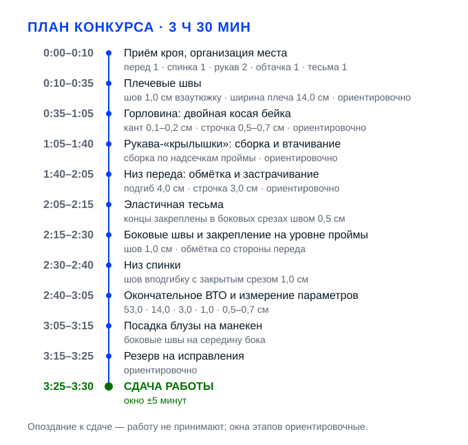
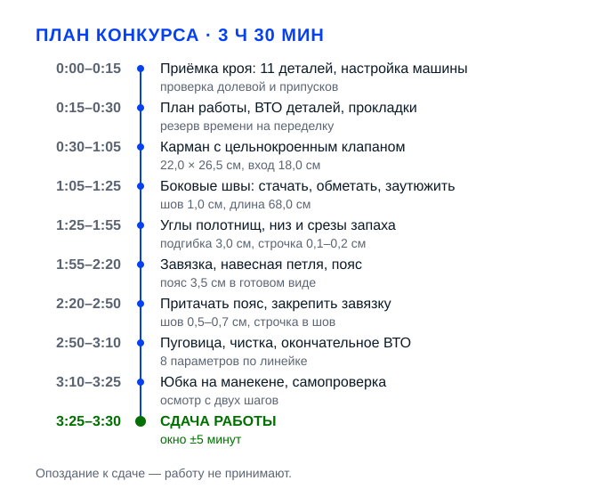
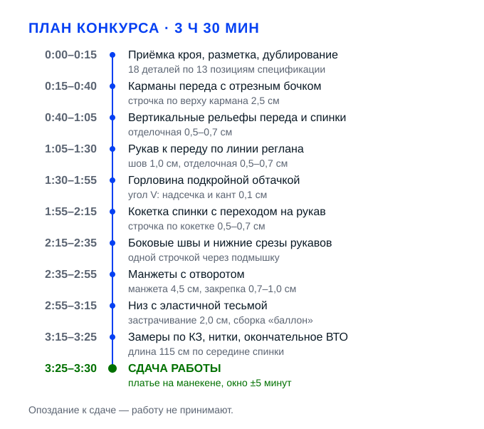

Швея (Р,О)
Задания ниже — официальные файлы «Абилимпикс» (источник: abilympics-russia.ru), разложенные по категориям. Решения написаны по тексту задания, регламенту и критериям оценки; в них указано, что именно проверяет эксперт.
Школьник
14–16 лет, базовый уровень заданияВыдержка из официального конкурсного задания: страницы, относящиеся к категории «Школьник» (стр. 5–9 источника).
Пошаговое решение
Задание школьной категории — за 3 часа 30 минут сшить женскую блузу прямого силуэта умеренного объёма и представить её на манекене. Работа состоит из одного модуля, Модуля А, и одного результата: готовое изделие, надетое на манекен. Блуза кажется простой только на первый взгляд: перед и спинка без среднего шва, короткие двухслойные рукава-«крылышки» с равномерной сборкой по окату, слегка расширенная горловина, обработанная двойной косой бейкой, низ переда с открытым обмётанным срезом на резинке и низ спинки вподгибку с закрытым срезом. Оценивают не «красоту вообще», а конкретные величины: длину по середине спинки 53,0 см, ширину плеча 14,0 см, ширину застрачивания низа переда 3,0 см при подгибе 4,0 см, ширину подгиба низа спинки 1,0 см, строчки по горловине и по краю проймы 0,5–0,7 см. Поэтому план строится так, чтобы к 2:50 у вас было собранное и отутюженное изделие, а последние сорок минут ушли на измерения, посадку на манекен и спокойную сдачу.

Задача 1. Организовать рабочее место и принять кройМодуль А · организация, техника безопасности, проверка деталей кроя
До первого стежка рабочее место должно работать как маленькое производство: машина настроена на конкретную ткань, утюг прогрет до нужной температуры, инструмент разложен по зонам, крой пересчитан по спецификации и размечен. Эти минуты кажутся потерянными, но именно они определяют, уложитесь вы в 3 часа 30 минут или будете догонять график до самой сдачи. Организация и техника безопасности к тому же оцениваются отдельно, и баллы за них снимаются в любой момент конкурса, а не только в конце.
Действие 1.1. Развернуть рабочее место и настроить оборудование
Шаг 1.1.1
Стол делим на три зоны и держим их до сдачи работы: слева крой в папке или на лотке, в центре свободное поле размером хотя бы с целую деталь переда, справа инструмент — мел или обмылок, сантиметровая лента, линейка, булавки в магнитной баночке, ножницы, нитки в тон, маленькие ножницы для обрезки ниток. Машину ставим так, чтобы свет падал слева или спереди, а педаль лежала под правой ногой и не уезжала по столу. Шнур и розетку убираем из-под ног, обрезки сразу сбрасываем в коробку, а не под машину.
Организация места и техника безопасности идут в критериях отдельной строкой, и снимаются эти баллы не в конце, а в любой момент: эксперт проходит по рабочим местам в первые минуты и возвращается к ним ещё несколько раз за конкурс. Заваленный обрезками стол — это не только потерянные баллы, но и потерянные минуты: на 3 часа 30 минут каждая минута, ушедшая на поиск булавки, вычитается из времени на сборку.
Проверьте себя по трём признакам: на столе нет ничего, что не относится к блузе; обрезки уходят в коробку сразу после операции; шнур и педаль не пересекают проход. Если для детали переда не хватает места, уберите с центра инструмент, а не складывайте деталь вдвое.
Типичная ошибка — свалить крой, обрезки и инструмент в одну кучу «чтобы всё было под рукой»: детали мнутся, обтачка теряется среди выпадов, и на поиск уходит 10–15 минут. Вторая — оставить утюг включённым на столе без подставки: это уже нарушение техники безопасности, за которое баллы снимают независимо от качества изделия.
Эксперт фиксирует состояние места до старта: есть ли всё необходимое, свободен ли стол, убран ли мусор. Дальше он смотрит, поддерживается ли порядок по ходу работы, — чистое место к сдаче стоит дешевле, чем чистое место весь конкурс.
Шаг 1.1.2
Настраиваем машину на пробном лоскуте той же ткани: длина стежка 2,5–3,0 мм, ширина строчки обычная, нитки в тон ткани, натяжение верхней нити такое, чтобы узелок переплетения уходил в толщу ткани и строчка не стягивала шов. Ставим новую иглу — для блузочной ткани подойдёт № 75 или № 80, — заправляем и проверяем, что челнок вставлен до щелчка. Рядом готовим оверлок: заправлен, ножи острые, пробный обмёточный шов на лоскуте не стягивает край и не рвёт его.
Настройка занимает пять минут и экономит полчаса: на ненастроенной машине строчка петляет, шов стягивается, и припуск 1,0 см перестаёт быть 1,0 см — а ширина шва в этом задании указана в технических условиях по каждой операции. Петляющая строчка портит вид изделия с лицевой стороны, а это то, что эксперт видит первым. Тупое сверло оверлока или сбитый нож дают рваный обмётанный край, который потом видно и в низе переда, и в проймах.
Пробная строчка по лоскуту: стежки ровные, одинаковой длины, ткань между ними не собрана в волну, с изнанки нет петель. Пробный обмёточный шов обхватывает срез полностью, край не закручивается. Если хотя бы один признак не выполняется — переправляем нить, а не начинаем работу «как-нибудь».
Самая частая ошибка — начать стачивать плечевые швы, не проверив строчку на лоскуте: когда выясняется, что нижняя нить слабая, распарывать приходится уже готовый шов, а следы от проколов на блузочной ткани не исчезают после влажно-тепловой обработки. Вторая — работать с тупой иглой: она тянет нить и оставляет затяжки на ткани.
Эксперт может подойти и посмотреть, как идёт строчка, в любой момент. Ровная, нестянутая строчка — это и есть тот признак, по которому он отличает подготовленную работу от поспешной.
Шаг 1.1.3
Ставим утюг на подставку справа от себя, наливаем воду, выставляем температуру по ткани: для блузочного хлопка или смесовой ткани — две точки, примерно 150–160 °C, с паром. Готовим проутюжильник из белой хлопковой ткани, маленькую подушечку для разутюживания швов на закруглениях и колодку для плечевых швов. Проверяем, что подошва чистая, без нагара и следов прокладки: грязная подошва оставляет на светлой ткани желтоватый след, который не отстирывается.
Влажно-тепловая обработка в этом задании выполняется восемь раз — после плечевых швов, обтачки, сборки, низа переда, боковых швов, низа спинки, окончательной отделки и перед посадкой на манекен, — и каждый раз она влияет на оценку. Неразутюженный или перекошенный шов видно на манекене сразу, а замятые сгибы и ласы от горячей подошвы уже не исправить. Температура важна и с обратной стороны: перегрев даёт ласы, недогрев не даёт шву лечь плоско.
Проверьте на лоскуте: ткань не блестит, не желтеет, не садится, шов разутюживается плоско и держится. Пар должен идти ровно, без капель: капля воды на блузочной ткани оставляет водяное пятно, которое придётся сушить и снова утюжить.
Ошибка — выставить максимальную температуру «чтобы быстрее разглаживалось»: на смесовой ткани это даёт ласы и оплавление волокон, участок приходится вырезать, а деталь кроя уже готова и заменить её нечем. Вторая ошибка — утюжить без проутюжильника по лицевой стороне: тонкая ткань лоснится, и на манекене это выглядит как брак.
Эксперт смотрит на качество влажно-тепловой обработки в конце, когда изделие уже на манекене: ровные, не замятые швы и отсутствие лоснящихся пятен читаются без линейки.
Действие 1.2. Принять крой и проверить детали
Шаг 1.2.1
Раскладываем крой и пересчитываем детали по спецификации: перед — одна деталь, спинка — одна, рукав — две детали, обтачка горловины (косая бейка) — одна деталь, эластичная тесьма — одна. Каждую деталь отмечаем галочкой на бумаге или просто откладываем в отдельную стопку, чтобы к моменту сборки не искать «второй рукав» по всему столу. Заодно проверяем, что к блузе приложены именно те детали, а не выпады от другой работы: на конкурсном столе рядом часто лежит раскладка соседа.
Спецификация в задании перечисляет ровно пять позиций, и каждая из них нужна: без обтачки горловину обработать двойной косой бейкой нечем, без второй детали рукава не получится двухслойное «крылышко», без тесьмы не собрать низ переда на резинку. Обнаружить нехватку на этапе сборки — значит потерять время на поиск замены через эксперта, а его может и не быть. Проверка на входе стоит двух минут и снимает весь этот риск.
Все пять позиций на месте, количество совпадает со спецификацией, лишних деталей нет. Если чего-то не хватает или деталь повреждена — идём к эксперту сразу, до первой операции, а не после того, как половина изделия уже собрана.
Начать работу, не пересчитав крой, и обнаружить отсутствие обтачки после того, как обработаны плечевые швы: горловину в этом случае придётся обрабатывать подкройной обтачкой из выпадов, а это другое решение и другой внешний вид. Вторая ошибка — взять деталь рукава, не проверив, что она парная: две правые детали дадут перекошенные «крылышки».
Эксперт при приёмке работы видит, разложен ли крой по порядку и сверялся ли участник со спецификацией. Дальше он проверяет, все ли детали вошли в изделие, — «забытая» обтачка видна по необработанной горловине.
Шаг 1.2.2
Проверяем каждую деталь по трём признакам. Первое — направление долевой нити: она должна идти вдоль детали, по середине переда и спинки, иначе изделие перекосится и поведёт по боковым швам. Второе — парность рукавов: детали должны быть зеркальными, а не одинаковыми, потому что «крылышко» втачивается в правую и левую пройму. Третье — качество ткани: нет ли дыр, затяжек, пятен, следов мела, которые не сойдут, и не попал ли в деталь уплотнённый край ткани.
Перекос по долевой нити невозможно исправить утюгом: изделие будет тянуть в одну сторону, боковые швы уйдут вперёд или назад, и на манекене это читается как грубая посадка. Дефект ткани, замеченный до сборки, можно обойти — перевести деталь на другой участок или сообщить эксперту; тот же дефект в готовом изделии уже ничем не исправить, и он попадёт в оценку внешнего вида. Парность рукавов — ловушка: одинаковые детали дают вывернутый рукав.
Долевая нить идёт параллельно кромке и линии середины детали; рукава при наложении друг на друга совпадают только при перевороте одной детали наизнанку; на ткани нет пятен и затяжек. Сомнительный участок обводим мелом и решаем судьбу детали до первого стежка.
Самая дорогая ошибка — начать с того, что не проверить долевую: перекошенную блузу уже не выправить, а перекроить на конкурсе нечем. Вторая — не заметить, что один рукав выкроен по долевой, а второй по утку: после стирки и отутюживания они сядут по-разному и будут висеть неодинаково.
Эксперт проверяет посадку изделия на манекене: перекошенные боковые швы и разная длина «крылышек» видны сразу. Причину он ищет именно в крое, а не в сборке.
Шаг 1.2.3
Переносим на детали контрольные знаки, без которых сборка превращается в подгонку на глаз: линию середины переда и спинки, надсечки проймы на переде и спинке, надсечки оката рукава, линии подгиба низа переда на 4,0 см и низа спинки на 1,0 см, линию горловины. Размечаем мягким мелом или обмылком по изнанке, тонкими линиями, и сразу ставим парные метки на срезах — короткие поперечные чёрточки через 0,3–0,5 см от среза, чтобы они ушли в шов.
Надсечки на пройме и окате — это единственный ориентир для равномерной сборки: в задании прямо сказано, что сборку формируют, ориентируясь на длину между надсечками на пройме переда и спинки. Без них сборка сбивается, «крылышко» перекашивается, и втачивание приходится переделывать. Линии подгиба нужны потому, что ширина застрачивания низа переда 3,0 см при подгибе 4,0 см, а низа спинки — 1,0 см: эти величины заданы, и подгибать «на глаз» нельзя.
Все контрольные знаки нанесены и читаются на изнанке, парные метки на срезах совпадают по положению, линии подгиба проведены на 4,0 см по низу переда и на 1,0 см по низу спинки. Проверьте линейкой: 4,0 и 1,0 — это разные величины, и путать их нельзя.
Ошибка — размечать только перед и забыть про спинку: тогда низ спинки подгибается на ту же ширину, что и перед, и вместо 1,0 см получается 4,0 см, что сразу видно и по линейке, и на манекене. Вторая — ставить метки шариковой ручкой: след не сходит при влажно-тепловой обработке и остаётся на лицевой стороне.
Эксперт при осмотре готового изделия измеряет низ переда и низ спинки отдельно. Разная ширина подгиба — первое, что бросается в глаза, потому что перед на резинке собран, а спинка лежит плоско.
Задача 2. Стачать плечевые швы и обработать горловинуМодуль А · плечевой шов 1,0 см, ширина плеча 14,0 см, строчка по горловине 0,5–0,7 см
Плечевые швы задают геометрию всей блузы: от них зависит, сядет ли изделие по фигуре и получится ли ширина плеча 14,0 см. Горловина — самая заметная часть работы, потому что она расположена у лица, и любая неровность строчки видна без линейки. Обработка идёт двойной косой бейкой, то есть обтачкой, сложенной вдвое: сначала бейка стачивается в кольцо, потом обтачивает горловину краевым швом в кант, затем её припуск настрачивается на бейку и закрывается отделочной строчкой 0,5–0,7 см. Порядок операций здесь не переставляется: каждая следующая опирается на предыдущую.
Действие 2.1. Стачать и заутюжить плечевые швы
Шаг 2.1.1
Складываем перед и спинку лицевыми сторонами внутрь, совмещаем плечевые срезы и скалываем булавками поперёк шва через каждые 4–5 см, начиная от горловины и от проймы. Скалывать нужно именно поперёк, а не вдоль: булавка вдоль шва не даёт срезам сдвинуться, но мешает лапке, и в этом месте строчка уходит в сторону. Стачиваем швом 1,0 см, ориентируясь на парные метки, закрепляя начало и конец обратной строчкой.
Ширина плечевого шва 1,0 см указана в технических условиях прямо, вместе с видом шва: соединительный стачной, припуски взаутюжку. Именно от этого шва отсчитывается ширина плеча 14,0 см в готовом виде — то есть от горловины до проймы по линии плечевого шва. Если шов получился шире, плечо станет короче 14,0 см, если уже — длиннее, и оба отклонения измеряются на манекене.
Ширина шва 1,0 см по всей длине, срезы ровные, без затяжек, посадки ткани нет: длина плечевого среза переда и спинки одинаковая. Проверьте линейкой в трёх точках — у горловины, посередине и у проймы: расхождение больше 0,1 см уже видно на манекене.
Ошибка — стачать плечи без скалывания, «на весу»: один слой ткани уходит вперёд, другой отстаёт, и шов получается с посадкой, то есть один срез длиннее другого. Такой шов потом невозможно разутюжить плоско, он тянет пройму, и рукав встаёт перекошенным. Вторая — начать строчку, не закрепив концы: у проймы шов расходится при втачивании рукава.
Эксперт смотрит на плечевой шов с лицевой стороны при осмотре изделия: ровная ли линия, нет ли посадки и затяжек. Ширину плеча он измеряет сантиметровой лентой от горловины до проймы.
Шаг 2.1.2
Обмётываем припуски плечевых швов на оверлоке со стороны переда — так указано в технических условиях, и это не формальность: обмётанный срез должен оказаться внутри припуска после заутюжки. Припуски раскладываем в одну сторону, обмётываем оба среза вместе, не подрезая их ножом оверлока: лишнее снимаем только если срез осыпается неровно. Перед обмёткой проверяем, что припуски лежат ровно, без заломов: оверлок повторяет все неровности ткани.
Обмётывание со стороны переда задано потому, что припуск потом заутюживается в сторону спинки: обмётанный край в этом случае ложится внутрь, к спинке, и с лицевой стороны у горловины не видно ни обмётки, ни осыпавшихся нитей. Блузочная ткань осыпается активно, и необработанный припуск за неделю носки даёт бахрому, которая вылезает в пройму и в горловину. На конкурсе это ещё и критерий качества обработки срезов.
Обмётка плотная, обхватывает срез полностью, нитки не свисают. Проведите пальцем по обмётанному краю: он должен быть мягким, без утолщения и без «гребешка» из нитей. Шов не стянут: длина плеча после обмётывания не изменилась.
Ошибка — обметать каждый припуск отдельно, а не оба вместе: тогда после заутюжки в сторону спинки один срез окажется сверху и будет виден у горловины. Вторая — обметать с лицевой стороны, положив деталь изнанкой вверх: направление обмётки смотрится неаккуратно, а край ложится не туда, куда нужно.
Эксперт выворачивает изделие и смотрит изнанку у плечевых швов: обмётанные срезы должны быть ровными и лежать в одну сторону, к спинке. Отдельно он отмечает, не подрезан ли припуск ножом оверлока: по этому признаку видно, работал ли участник наспех.
Шаг 2.1.3
Заутюживаем припуски плечевых швов в сторону спинки: раскладываем изделие на колодке или на подушечке, припуск укладываем на спинку, накрываем проутюжильником и прижимаем утюгом с паром, не растягивая срез. Движение — от горловины к пройме, утюг ставим и поднимаем, а не возим по ткани. Затем проверяем ширину плеча: сантиметровой лентой от горловины до проймы должно быть 14,0 см.
Припуск взаутюжку в сторону спинки — требование технических условий, и оно практическое: на переде припуск создал бы утолщение под обтачкой горловины и исказил бы линию плеча. Заутюженный, а не просто заглаженный шов держит форму, не топорщится под бейкой и не даёт валика на плече. Ширина плеча 14,0 см проверяется именно сейчас: после втачивания рукава измерить её будет уже неудобно.
Припуск лежит плоско, без волн и защипов, толщина одинаковая по всей длине, линия плеча ровная. Ширина плеча — 14,0 см, допускается отклонение в пределах 0,2 см. Проверьте оба плеча: они должны быть одинаковыми.
Ошибка — заутюжить припуски в разные стороны на правом и левом плече: изделие садится несимметрично, и на манекене одно плечо смотрится выше другого. Вторая — растянуть срез утюгом: плечо удлиняется, пройма вытягивается, и рукав потом не входит по длине.
Эксперт измеряет ширину плеча на манекене, но оценивает и то, как шов лежит: валик или защип на линии плеча видны с лицевой стороны без всяких измерений.
Действие 2.2. Подготовить обтачку — двойную косую бейку
Шаг 2.2.1
Стачиваем срезы обтачки горловины в кольцо швом 0,5 см, складывая деталь лицевой стороной внутрь и совмещая короткие срезы. Шов разутюживаем на две стороны, а не заутюживаем на один бок: в кольце обтачки утолщение должно быть плоским, иначе на горловине появится бугорок. Если бейка выкроена по косой, срезы при стачивании слегка тянет — не растягиваем их, а поддерживаем рукой за лапкой.
Обтачка горловины по спецификации — одна деталь, и её нужно замкнуть в кольцо, потому что горловина обрабатывается по кругу. Ширина шва 0,5 см указана в технических условиях вместе с видом шва: стачной вразутюжку. Разутюженный шов распределяет толщину на две стороны, и на готовой горловине место соединения бейки не проступает. Кроме того, к этому шву мы вернёмся, когда будем совмещать его с серединой спинки.
Кольцо замкнуто, шов 0,5 см, разутюжен, концы срезов совпадают по длине, кольцо не перекручено. Проверьте, положив кольцо на стол: оно должно лежать плоско, без восьмёрки. Отдельно проверьте длину кольца: она должна совпадать с длиной горловины по срезу, иначе бейку придётся припосаживать.
Ошибка — стачать срезы, не совместив их точно, и получить уступ на 0,3–0,5 см: на горловине это место даст ступеньку, которая видна как неровность канта. Вторая — растянуть косой срез при стачивании: кольцо становится больше горловины, и бейку приходится припосаживать, отчего по горловине идут волны.
Эксперт осматривает горловину по всему кругу. Место соединения бейки он найдёт обязательно, потому что сам ищет его на середине спинки. Если шов бейки смещён от середины спинки хотя бы на 1–2 см, это читается как небрежность.
Шаг 2.2.2
Заутюживаем обтачку вдоль пополам, перегибая изнаночной стороной внутрь: складываем кольцо так, чтобы срезы совпали, и проглаживаем по сгибу с паром, слегка оттягивая сгиб, чтобы он получился ровным и не тянул. Утюжим по срезам, а не по сгибу, — так сгиб остаётся острым. Готовую бейку укладываем в кольцо на столе и смотрим, держит ли она форму сама.
Двойная бейка — это и есть обтачка, сложенная пополам: она закрывает срез горловины с двух сторон и не требует отдельной подкройной детали. Заутюженный сгиб даёт ровную линию канта и одинаковую ширину обработки по всему кругу. Если сгиб заутюжен плохо, при обтачивании бейка «поедет» и кант получится разной ширины — а именно кант и строчка 0,5–0,7 см оцениваются на горловине.
Сгиб ровный по всему кольцу, ширина бейки одинаковая, слои не разъезжаются, сгиб острый. Проведите ногтем по сгибу: он должен держать линию, а не расправляться. Если сгиб расходится, бейку надо заутюжить повторно, иначе кант получится разной ширины.
Ошибка — заутюжить бейку, не совместив срезы: один слой окажется шире другого, и при обтачивании узкий слой не закроет шов. Вторая — растянуть бейку утюгом по сгибу: кольцо увеличивается, и его приходится припосаживать на горловину, отчего по краю идут мелкие волны.
Эксперт смотрит на кант по горловине: одинаковая ли ширина, нет ли волн и перекосов. Подготовка бейки — первое, что определяет этот результат. Он смотрит и на то, не растянута ли бейка: растянутое кольцо на горловине всегда даёт волну.
Шаг 2.2.3
Прикладываем бейку к горловине с лицевой стороны изделия, совмещая срезы, и скалываем булавками через каждые 3–4 см, слегка припосаживая бейку на выпуклых участках. Шов соединения бейки обязательно совмещаем с серединой спинки: там он менее заметен, чем на переде. Если нужно, примётываем швом 0,5 см нитками контрастного цвета — так бейка не сдвинется при обтачивании.
Совмещение шва бейки с серединой спинки — не прихоть, а правило обработки горловины обтачкой: спереди шов оказался бы на самом видном месте, а на спинке он уходит под волосы и воротник. Припосаживание на выпуклых участках нужно потому, что горловина переда имеет форму дуги, а бейка кроится по косой и ведёт себя иначе: без посадки по краю пойдут волны. Примётывание экономит время на распарывании, если что-то сместится.
Бейка лежит по горловине без складок и без натяжения, срезы совпадают по всему кругу, шов бейки — на середине спинки, булавки или смётка держат слои. Проверьте симметрию: расстояние от плечевого шва до шва бейки слева и справа одинаковое.
Ошибка — приколоть бейку, не совместив шов с серединой спинки: шов окажется на переде у подбородка, и это сразу видно на манекене. Вторая — натянуть бейку при скалывании: после обтачивания горловина соберётся, и изделие нельзя будет надеть через голову.
Эксперт ищет шов бейки именно на середине спинки и проверяет, не собрана ли горловина. Это делается при осмотре готового изделия, но закладывается сейчас.
Действие 2.3. Обтачать горловину и проложить отделочную строчку
Шаг 2.3.1
Обтачиваем горловину бейкой швом 0,5 см, прокладывая строчку по бейке, а не по изделию: так видно оба слоя и край получается ровным. Лапку держим так, чтобы ориентиром служил срез бейки, строчку ведём на одной скорости, на закруглениях у плечевых швов приподнимаем лапку и поворачиваем изделие, не обрывая нить. Вид шва — краевой обтачной в кант, то есть после выворачивания с лицевой стороны должен остаться узкий кант из основной ткани.
Ширина шва обтачивания 0,5 см задана в технических условиях, и от неё зависит ширина канта: при 0,5 см кант получается ровным и не «съедает» горловину. Вид шва тоже указан — обтачной в кант, а не просто обтачной: кант 0,1–0,2 см из основной ткани закрывает место соединения и не даёт бейке выглядывать на лицевую сторону. Строчка, проложенная по изделию, а не по бейке, захватывает лишнее и делает кант неровным.
Шов ровный, ширина 0,5 см по всему кругу, у плечевых швов нет затяжек и пропусков, строчка не выходит за бейку. После выворачивания кант из основной ткани виден по всему краю и его ширина одинаковая. Ширину проверяйте линейкой в четырёх точках по кругу.
Ошибка — вести строчку по изделию, «чтобы точно попасть в бейку»: лишняя ткань уходит в шов, кант получается разной ширины, а местами исчезает совсем. Вторая — тянуть бейку рукой перед лапкой: горловина собирается в мелкие складки, которые потом не разутюжить.
Эксперт осматривает горловину с лицевой стороны: кант по всему кругу, без пропусков и затяжек. Именно здесь чаще всего теряются баллы за качество обработки.
Шаг 2.3.2
Подрезаем припуски шва обтачивания до 0,3–0,4 см, не задевая строчку, и срезаем уголки у плечевых швов наискосок, чтобы после выворачивания не образовалось утолщение. Затем выворачиваем бейку на изнаночную сторону, выпуская кант из основной ткани шириной 0,1–0,2 см, и выправляем его по всему кругу — пальцами или тупым концом ножниц, не растягивая. Кант формируем равномерно, не допуская, чтобы бейка выглянула на лицевую сторону.
Подрезание припуска до 0,3–0,4 см нужно для того, чтобы кант лёг остро и не топорщился: толстый припуск не даёт вывернуть шов плоско, и по горловине идёт валик. Срезанные уголки убирают утолщения в местах поворота строчки. Кант 0,1–0,2 см из основной ткани — признак правильно выполненного обтачного шва: он закрывает переход и делает край аккуратным. Выправлять кант ножницами удобнее, но давить нельзя: растянутый край останется волнистым.
Кант виден по всему кругу, его ширина 0,1–0,2 см, край ровный, без волн и утолщений, бейка на изнанке лежит плоско. Проверьте с двух сторон: с лица — кант, с изнанки — ровная полоса бейки одинаковой ширины.
Ошибка — подрезать припуск «под самую строчку»: нитки перерезаются, шов расходится, и горловину приходится переделывать заново, а запаса ткани уже нет. Вторая — вывернуть бейку, не выпустив кант: край получается плоским и выглядит как необработанный.
Эксперт смотрит на кант с лицевой стороны и на изнанку. Неровный кант или отсутствие канта — прямой минус за качество обработки горловины. Ещё он смотрит, не выглядывает ли бейка с лицевой стороны хотя бы на миллиметр.
Шаг 2.3.3
Настрачиваем припуск шва обтачивания на обтачку швом 0,1–0,2 см: прокладываем строчку по бейке с изнаночной стороны, прихватывая припуск, который лежит под ней. Строчку ведём по кругу на одной скорости, следя, чтобы игла шла точно по краю припуска, — при ширине 0,1–0,2 см запас на ошибку минимальный. Нитки берём в тон основной ткани. Строчку ведём без остановок, чтобы не было наложения стежков.
Эта строчка — техническое требование задания, и у неё есть конкретная работа: она прикрепляет припуск к обтачке, чтобы тот не выбивался из-под бейки при носке и стирке. Без неё внутренний срез гуляет, а на горловине появляется утолщение, которое видно с лицевой стороны. Ширина 0,1–0,2 см выбрана потому, что строчка должна идти по самому краю припуска, не выступая на лицевую сторону.
Строчка идёт по краю припуска, припуск прихвачен по всей длине, с лицевой стороны её не видно. Проверьте, потянув край: припуск не отходит от бейки, но и бейка не собрана в сборку. Осмотрите участок у плечевых швов: там припуск толще и прихватить его труднее всего.
Ошибка — проложить строчку шире, чем 0,2 см: она выходит на бейку и становится видна с лицевой стороны как вторая линия рядом с отделочной. Вторая — не прихватить припуск: край остаётся свободным, и после влажно-тепловой обработки он выбивается наружу.
Эксперт выворачивает горловину и смотрит, прикреплён ли припуск. Свободный припуск и двойная строчка на бейке — типичные замечания по этому узлу. Он проверяет именно этот шов, потому что от него зависит, как выглядит горловина с изнанки.
Шаг 2.3.4
Прокладываем отделочную строчку по краю горловины с лицевой стороны на расстоянии 0,5–0,7 см от края: она проходит по бейке и одновременно закрепляет её по всему кругу. Ведём строчку от одного плечевого шва к другому, ориентируясь на лапку или направляющую линейку, на закруглениях слегка поворачиваем изделие, не поднимая лапку. Начало и конец строчки закрепляем в плечевом шве, чтобы закрепки были незаметны.
Ширина строчки 0,5–0,7 см — одна из заданных величин, которые проверяются линейкой на готовом изделии. Эта строчка выполняет две задачи: окончательно фиксирует бейку, чтобы она не отворачивалась при носке, и оформляет горловину как отделку. Ровная линия на таком видном участке читается как показатель аккуратности всей работы, а отклонение от 0,5–0,7 см сразу заметно, потому что строчка идёт по кругу.
Ширина строчки 0,5–0,7 см по всему кругу, линия ровная, без затяжек, ткань под строчкой не собрана. Проверьте линейкой в четырёх точках — на переде, на спинке и у обоих плечевых швов: расхождение больше 0,1 см уже видно.
Ошибка — начать строчку с края и не закрепить: у плечевого шва она распускается, и бейка отходит именно там, где нагрузка максимальная. Вторая — вести строчку, растягивая горловину: край вытягивается, блуза перестаёт держаться на плечах, и посадка на манекене получается неверной.
Эксперт измеряет эту строчку линейкой на готовом изделии и смотрит её ровность на манекене. Горловина находится на уровне лица, поэтому любые отклонения видны первыми.
Шаг 2.3.5
Приутюживаем готовую горловину с изнаночной стороны, не заходя подошвой утюга на кант: укладываем изделие на подушечку, накрываем проутюжильником, прижимаем утюгом с паром по кругу, следя, чтобы бейка не отворачивалась. Затем выправляем кант ещё раз и даём изделию остыть, не сдвигая его с подушечки. Утюг держим подошвой на весу, прижимая только через проутюжильник.
Приутюживание с изнанки, а не с лица, задано в технических условиях, и это правильно: с лицевой стороны утюг расплющил бы кант и оставил лас. Остывание под грузом или на подушечке нужно потому, что горячая ткань держит форму только до остывания: если сразу начать с ней работать, кант снова отвернётся. Аккуратно отутюженная горловина — это и внешний вид, и закрепление результата перед сборкой.
Кант ровный по всему кругу, бейка лежит плоско, нет лас и заминов, горловина не собрана. Проверьте, надев изделие на себя или на манекен: край должен лежать по шее без волн и не отворачиваться наружу.
Ошибка — утюжить горловину с лицевой стороны без проутюжильника: кант расплющивается, ткань лоснится, и участок уже не восстановить. Вторая — начать следующий этап, не дав изделию остыть: кант отворачивается, и его приходится выправлять заново.
Эксперт оценивает горловину в готовом изделии на манекене: кант, ровность строчки 0,5–0,7 см, отсутствие волн. Всё это он видит при финальном осмотре.
Задача 3. Собрать рукава-«крылышки» и втачать их в открытые проймыМодуль А · равномерность сборки, отделочная строчка по краю проймы 0,5–0,7 см
Рукава в этой блузе — самый заметный конструктивный элемент и самый капризный: короткое двухслойное «крылышко» держится на одной сборке по окату, и любая неравномерность сразу читается как перекошенное крыло. Втачивают их не в закрытую пройму, а в открытую, до соединения боковых швов: так удобнее распределять сборку и прокладывать отделочную строчку. Отделочная строчка по краю проймы шириной 0,5–0,7 см одновременно закрывает срез и закрепляет запас шва втачивания — это одна и та же операция, только названная с двух сторон.
Действие 3.1. Сложить рукав и сформировать сборку по окату
Шаг 3.1.1
Складываем деталь рукава вдоль линии низа, совмещая срезы оката внешней и внутренней частей, изнаночной стороной внутрь. Разравниваем ладонью от низа к окату, чтобы слои не сдвинулись, и скалываем булавками по окату через каждые 3–4 см, ставя булавки поперёк среза. Проверяем, что нижний сгиб получился ровным и не перекошен: именно он станет видимым краем «крылышка».
Двухслойный рукав получается складыванием одной детали, поэтому линия низа превращается в сгиб, а окат — в два совмещённых среза, которые потом вместе уйдут в шов втачивания. Это задано в технологической последовательности: сложить рукав вдоль линии низа, совмещая срезы оката внешней и внутренней частей. Если слои сдвинутся, один край «крылышка» будет длиннее другого, и рукав повиснет косо — на манекене это видно сразу.
Срезы оката совпадают по всей длине, сгиб по низу ровный, слои не разъезжаются, булавки держат. Проверьте, перевернув рукав: с обеих сторон должен быть виден одинаковый по форме край. Отдельно проверьте, не сдвинулся ли один слой относительно другого на 0,3 см — этого достаточно для перекоса.
Ошибка — сложить рукав, не совместив срезы оката: разница даже в 0,5 см даёт перекошенное «крылышко», и при втачивании одна часть оката окажется длиннее проймы. Вторая — скалывать вдоль среза: булавки попадают под лапку, строчка идёт волной, а в месте каждой булавки остаётся залом.
Эксперт смотрит на «крылышки» на манекене: одинаковая ли у них форма и не висит ли один край ниже другого. Симметрия закладывается на этом шаге. Он смотрит на «крылышки» и с изнанки: перекошенный сгиб виден и там.
Шаг 3.1.2
Прокладываем по окату две параллельные строчки для сборки: первую на 0,5 см от среза, вторую на 1,0 см, длина стежка 4–5 мм, нитки контрастного цвета, концы нитей оставляем длиной 8–10 см и не закрепляем. Строчки ведём по совмещённым слоям как по одной детали, придерживая окат пальцами, чтобы слои не разъехались. Две строчки нужны, а не одна: по двум нитям сборка распределяется ровнее и не сбивается в одну сторону.
Сборка по окату — единственное, что придаёт «крылышку» объём, и она должна быть равномерной: это прямо записано в описании изделия. Крупный стежок 4–5 мм выбран потому, что мелким стежком нить не стягивается без обрыва. Контрастные нитки нужны, чтобы строчки было легко найти и удалить после втачивания, — а удалять их обязательно, потому что в готовом изделии они недопустимы.
Обе строчки идут параллельно срезу на 0,5 и 1,0 см, стежки ровные, нитки не закреплены и легко тянутся. Проверьте, потянув за нижнюю нить: ткань должна собираться, а нить — идти свободно, без рывков. Расстояния проверьте линейкой: 0,5 см от среза до первой строчки и столько же между строчками.
Ошибка — проложить одну строчку мелким стежком: нить рвётся при стягивании, и сборку приходится делать заново, а на окате остаются следы проколов. Вторая — закрепить концы нитей: стянуть сборку станет невозможно, придётся распарывать.
Эксперт оценивает равномерность сборки на готовом изделии, но качество сборки зависит от того, как проложены эти две строчки. Если сборка стянута в комок, он отмечает это как ошибку распределения, а не как дефект ткани.
Шаг 3.1.3
Стягиваем сборку за нижние нити обеих строчек одновременно, подтягивая окат до длины проймы между надсечками на переде и спинке, и распределяем посадку равномерно по всей длине: сначала разбиваем на четыре участка булавками, затем разгоняем складки пальцами от середины к краям. Сборка должна лежать мягкими равными волнами, а не сбиваться в комок у одного плечевого шва.
Ориентир задан в технических условиях прямо: длина между надсечками на пройме. Если стянуть больше, окат не войдёт в пройму и рукав поднимется; если меньше, останутся лишние сантиметры, которые пойдут в складки у плеча. Равномерность распределения — это то, что видно на манекене как аккуратное «крылышко» или как небрежный пучок ткани. Четыре участка нужны потому, что глаз плохо оценивает равномерность на длинной дуге.
Длина оката со сборкой равна длине проймы, складки распределены равномерно, толщина сборки одинаковая по всей дуге. Проверьте, приложив окат к пройме: он должен лечь без натяжения и без излишка. Если окат приложен с излишком, сборку надо стянуть ещё на 0,5–1,0 см.
Ошибка — стянуть окат «на глаз», не сверяясь с проймой: рукав либо не входит, либо садится складками у плеча. Вторая — оставить всю сборку на одном участке: у плечевого шва образуется бугор, и «крылышко» перекашивается в сторону.
Эксперт смотрит на «крылышко» с лицевой стороны: сборка должна быть равномерной по всему окату, без заломов и бугров. Это одна из тех деталей, которые видно без линейки.
Действие 3.2. Втачать рукава, обметать и настрочить шов
Шаг 3.2.1
Вкладываем рукав в открытую пройму лицевой стороной к лицевой стороне изделия, совмещая середину оката с плечевым швом и надсечки оката с надсечками проймы. Скалываем булавками поперёк шва через каждые 3 см, распределяя сборку так, чтобы она не сбивалась под булавками, и примётываем швом 1,0 см контрастными нитками. Примётывание обязательно: окат со сборкой под лапкой ведёт себя непредсказуемо.
Совмещение середины оката с плечевым швом — это то, что задаёт симметрию рукавов: если один рукав втачан со сдвигом на 1 см, «крылышки» будут смотреть в разные стороны. Примётывание нужно потому, что два слоя рукава плюс сборка — это три слоя под лапкой, и без закрепления они расходятся. Втачивание идёт в открытую пройму, то есть до соединения боковых швов, — так указано в технологической последовательности и так удобнее работать.
Середина оката совпадает с плечевым швом, надсечки совмещены, сборка распределена равномерно, булавки и смётка держат слои. Проверьте симметрию: расстояние от горловины до оката одинаковое на правой и левой стороне.
Ошибка — втачать рукав без смётки, «на булавках»: сборка уходит под лапку, окат припосаживается неравномерно, и рукав приходится выпарывать — а следы проколов на пройме остаются. Вторая — сдвинуть середину оката относительно плечевого шва: «крылышки» встанут косо.
Эксперт смотрит на посадку рукавов на манекене: одинаковый ли угол, симметричны ли «крылышки». Смещение на 0,5–1,0 см он замечает сразу. Смещение середины оката он проверяет, сравнивая расстояние от горловины до шва втачивания слева и справа.
Шаг 3.2.2
Стачиваем окат швом 1,0 см, ведя строчку по рукаву, а не по пройме: так сборка ложится ровнее и не сбивается. Строчку начинаем и заканчиваем закрепкой, на закруглении у плечевого шва работаем на малой скорости, слегка приподнимая лапку на повороте. После стачивания проверяем шов с двух сторон, не срезая припуск: он ещё понадобится для обмётывания и настрочки.
Ширина шва втачивания 1,0 см — стандарт для этой операции, и от неё зависит, насколько ровно ляжет отделочная строчка: она идёт на 0,5–0,7 см от шва и должна попадать на припуск. Строчка, проложенная по пройме, припосаживает изделие и смещает сборку внутрь шва. Припуск не срезаем потому, что по нему потом пройдёт настрочка — если срезать, настрачивать будет нечего.
Шов 1,0 см по всей дуге, сборка не сбита, ткань не припосажена, шов не стянут. Выверните изделие и посмотрите с лицевой стороны: окат должен лежать мягкой волной, без защипов у плечевого шва. Ширину шва проверьте в трёх точках: у плечевого шва, посередине и у нижней части проймы.
Ошибка — вести строчку по пройме: сборка уходит под лапку и закладывается складками, которые не разутюжить, а пройма припосаживается. Вторая — срезать припуск сразу после стачивания: настрачивать запас будет не на что, и отделочная строчка по краю проймы не получится.
Эксперт осматривает шов втачивания с изнанки и посадку рукава с лица. Припосаженная пройма и защипы у плеча — типичные замечания. Отдельно он смотрит, не срезан ли припуск: без него настрочка не ляжет.
Шаг 3.2.3
Удаляем строчки временного назначения: аккуратно вытягиваем контрастные нити сборки и смётки, начиная с той стороны, где остались длинные концы, и снимаем булавки. Нитки вытягиваем по одной, не распарывателем, чтобы не повредить ткань. После удаления проверяем шов: сборка держится за счёт стачного шва, но не разъезжается ли она в стороны. Если нить обрывается, вытягиваем её с другой стороны, а не тянем силой.
Строчки временного назначения удаляются обязательно — это отдельный пункт технологической последовательности, и он не формальный: оставленная нить сборки видна в готовом изделии, а при влажно-тепловой обработке от неё остаётся след. Кроме того, нить сборки стягивает ткань и не даёт шву разутюжиться. Удаление занимает две минуты, а забытая строчка стоит баллов за качество обработки.
Контрастных ниток в шве нет, булавок нет, сборка не разошлась, ткань не повреждена. Проведите рукой по шву с изнанки: ничего не должно цепляться. Отдельно проверьте, не остались ли булавки внутри шва: их находят уже на манекене.
Ошибка — выдернуть нить сборки рывком: вместе с ней вытягивается петля из ткани, и на окате остаётся затяжка. Вторая — забыть про строчку смётки и оставить её внутри шва: после отутюживания она впечатывается в ткань, и убрать её без следа уже нельзя.
Эксперт выворачивает изделие и проверяет, нет ли в швах временных строчек и свисающих ниток. Это одна из первых проверок при осмотре изнанки. Свисающая нить у проймы — одна из самых частых причин снижения оценки за аккуратность.
Шаг 3.2.4
Обмётываем срезы проймы на оверлоке, захватывая оба слоя рукава и припуск шва втачивания одновременно: рукав двухслойный, поэтому под нож попадают три слоя ткани плюс припуск. Ведём край ровно, не подрезая лишнего, — ширина припуска 1,0 см должна сохраниться. На закруглениях у плечевого шва уменьшаем скорость, чтобы обмётка не «съела» угол. Обмётку ведём от нижней точки проймы к плечевому шву.
Обмётывание срезов проймы — отдельный пункт технологической последовательности, и нужно оно потому, что в этом шве четыре слоя ткани с открытыми срезами: без обмётки блузка осыпается уже при первой носке, а на конкурсе это видно при осмотре изнанки. Обмётывать надо именно все слои вместе, а не по отдельности: иначе срезы рукава и проймы разной длины, и настрочка пойдёт волной.
Обмётка плотная, срез закрыт полностью, ширина припуска не подрезана, у плечевого шва нет утолщения из обмётанных нитей. Проверьте пальцем: край мягкий, нитки не свисают. Проверьте, что обмётка не перекрывает строчку втачивания: иначе настрочка пойдёт по утолщению.
Ошибка — обметать только пройму, не захватив срезы рукава: два слоя рукава остаются открытыми, и именно они осыпаются быстрее всего. Вторая — срезать ножом оверлока лишнее: припуск становится 0,5 см, и настрачивать запас шва уже не на что.
Эксперт осматривает изнанку у пройм: обмётанные срезы должны быть ровными и закрытыми по всей дуге. Отдельно он смотрит нижнюю часть проймы, где сходятся четыре слоя ткани, — там обмётка чаще всего неровная.
Шаг 3.2.5
Заутюживаем запас шва втачивания на изделие — на перед и спинку, а не на рукав, — и настрачиваем его швом 0,5–0,7 см от шва втачивания, прихватывая нижнюю часть проймы. Строчку ведём по изделию по всему кругу проймы, начиная от плечевого шва, и заканчиваем в том же месте с закрепкой. Это и есть отделочная строчка по краю проймы, ширина которой задана в параметрах.
Запас шва заутюживают на изделие потому, что на рукаве-«крылышке» он дал бы утолщение на самом видном месте — по краю крыла. Настрочка одновременно закрывает срез, закрепляет запас и оформляет пройму как отделку: ширина 0,5–0,7 см указана в заданных параметрах, то есть проверяется линейкой. Настрочка идёт по всей дуге проймы, включая нижнюю часть, где потом пройдёт боковой шов: это зона максимального натяжения.
Строчка 0,5–0,7 см по всему краю проймы, ровная, без пропусков, запас под ней не выбивается. Проверьте линейкой в трёх точках и посмотрите с лицевой стороны: линия должна повторять дугу проймы на одинаковом расстоянии от шва.
Ошибка — настрочить запас на рукав: на «крылышке» появляется валик, и рукав топорщится. Вторая — не дойти строчкой до нижней части проймы: там запас остаётся свободным, и после соединения боковых швов он выбивается наружу именно в самой заметной зоне.
Эксперт измеряет отделочную строчку по краю проймы линейкой и смотрит её ровность на манекене. Это один из параметров, вынесенных в задание отдельной строкой.
Задача 4. Обработать низ переда с резинкой и низ спинкиМодуль А · низ переда 3,0 см при подгибе 4,0 см, низ спинки 1,0 см, крепление тесьмы 0,5 см
Низ этой блузы обработан по-разному спереди и сзади, и это главная ловушка задания: перед стягивается резинкой и получает объём, спинка остаётся плоской. Низ переда обрабатывают швом вподгибку с открытым обмётанным срезом при подгибе 4,0 см и строчке на 3,0 см, концы эластичной тесьмы закрепляют по боковым срезам швом 0,5 см — то есть до соединения боковых швов, иначе концы не спрячутся. Низ спинки идёт швом вподгибку с закрытым срезом при подгибе 1,0 см. Последовательность здесь задана технологией и переставлять её нельзя.
Действие 4.1. Обработать низ переда
Шаг 4.1.1
Обмётываем срез низа переда на оверлоке с лицевой стороны: кладём деталь лицевой стороной вверх и ведём край так, чтобы обмётка легла на изнаночную сторону, а с лица был виден только ровный край. Скорость средняя, на углах у боковых срезов придерживаем ткань, чтобы обмётка не затянула край. Ширина обмётки — в пределах 0,4–0,5 см, больше не нужно. Край держим ровно, не натягивая: обмётка не должна стягивать низ.
Обмётывание низа переда задано в технологической последовательности именно с лицевой стороны, и это связано с тем, что шов вподгибку выполняется с открытым срезом: обмётанный край остаётся внутри подгиба, но при носке он виден с изнанки, поэтому обмётка должна лежать аккуратно. Без обмётки открытый срез осыпается, и через несколько носок низ блузы обтреплется — а на конкурсе это сразу видно при осмотре изнанки.
Обмётка идёт ровно по всему низу, срез закрыт, край не стянут и не волнится, с лицевой стороны обмётки не видно. Проведите пальцем по краю: он должен быть мягким и ровным. Проверьте обмётку на просвет: на тонкой ткани она не должна проступать на лицевую сторону.
Ошибка — обметать с изнаночной стороны, положив деталь лицом вниз: обмётка разворачивается на лицевую сторону, и по низу блузы идёт видимая строчка, которой там быть не должно. Вторая — обметать, растягивая край: низ пойдёт волной, и резинка ляжет неровно.
Эксперт осматривает низ переда с изнанки и с лица. Неровная обмётка и волнистый край — замечание по качеству обработки. Ещё он смотрит, не стянут ли край обмёткой: стянутый низ не даст ровной линии на манекене.
Шаг 4.1.2
Застрачиваем низ переда швом вподгибку с открытым обмётанным срезом: подгибаем припуск на 4,0 см по размеченной линии, приутюживаем сгиб, затем прокладываем строчку на 3,0 см от сгиба, оставляя незастроченный участок 3–4 см у одного бокового среза для продевания тесьмы. Обмётанный срез при этом остаётся свободным внутри, на 1,0 см выше строчки, — это и есть открытый срез, который дал название шву.
Две величины заданы жёстко: ширина шва застрачивания 3,0 см и ширина подгиба 4,0 см, и обе проверяются линейкой на готовом изделии. Логика именно такая: строчка на 3,0 см от сгиба оставляет внутри 1,0 см свободного обмётанного края, и этот край не мешает тесьме проходить по каналу. Оставленный участок 3–4 см — технологическое окно для продевания резинки; без него тесьму придётся протаскивать через весь канал, теряя время.
Сгиб ровный по всей ширине переда, строчка на 3,0 см от сгиба, подгиб 4,0 см, обмётанный срез свободен и не прихвачен строчкой. Проверьте линейкой в трёх точках и убедитесь, что окно для тесьмы действительно открыто.
Ошибка — подогнуть «на глаз» и получить подгиб 2,5 или 5,0 см вместо 4,0: строчка сдвигается, и заданный параметр 3,0 см уже не выдержать. Вторая — прихватить строчкой обмётанный срез: канал для тесьмы закрывается, и продеть резинку без распарывания невозможно.
Эксперт измеряет ширину застрачивания и ширину подгиба линейкой. Это две отдельные цифры в задании, и обе он проверит. Отдельно он проверяет, свободен ли обмётанный срез внутри подгиба: прихваченный срез — признак ошибки.
Шаг 4.1.3
Приутюживаем обработанный низ переда с изнаночной стороны, укладывая изделие так, чтобы шов не отпечатался на лицевую сторону, и следя, чтобы обмётанный срез не завернулся наружу. Проглаживаем по всей ширине, даём остыть и только потом переходим к тесьме. Если ткань тонкая, подкладываем под припуск полоску бумаги, чтобы не проступал рельеф обмётки.
Приутюживание фиксирует сгиб и распределяет толщину: после него низ лежит плоско и не топорщится, а тесьма проходит по каналу свободно. На тонкой блузочной ткани обмётка часто проступает на лицевую сторону как пунктирный рельеф — именно поэтому утюжат с изнанки и через проутюжильник. Отутюженный низ нужен и для измерения: по мятому краю линейка даёт неверный результат.
Сгиб ровный, толщина одинаковая по всей ширине, на лицевой стороне нет отпечатка обмётки и шва. Проверьте, положив изделие на стол: низ должен лежать без волн. Если отпечаток всё же появился, приутюжьте ещё раз через влажную ткань — свежий след уходит.
Ошибка — утюжить с лицевой стороны: обмётка и шов отпечатываются, и низ выглядит рябым. Вторая — начать продевать тесьму, не дав изделию остыть: сгиб смещается, и ширина подгиба перестаёт быть 4,0 см.
Эксперт оценивает низ на манекене с лицевой стороны: ровная ли линия, нет ли отпечатков и волн. Он обращает внимание и на то, не завернулся ли обмётанный срез наружу, — это видно у боковых срезов.
Действие 4.2. Продеть и закрепить эластичную тесьму
Шаг 4.2.1
Отмеряем эластичную тесьму по длине низа переда с коэффициентом растяжения: тесьма должна быть короче обработанного низа примерно на 15–20 %, то есть если низ переда по ширине 55–60 см, тесьмы нужно 45–48 см. Отрезаем, оплавляем или подшиваем концы, чтобы они не осыпались, и прикалываем английскую булавку к одному концу для продевания. Длину проверяем, растянув тесьму рукой: она должна тянуться, но не терять упругость.
Коэффициент 15–20 % — это то, что превращает плоский низ в мягкую сборку: слишком длинная тесьма не соберёт ткань, слишком короткая стянет низ в частые мелкие складки и деформирует боковые швы. Концы надо закрепить сразу, потому что осыпавшийся конец тесьмы застревает в канале, и вытащить его оттуда почти невозможно. Длина тесьмы влияет на посадку изделия: при слишком сильном стягивании перед пойдёт фалдами и перетянет боковые швы вперёд.
Тесьма отмерена с запасом на закрепление концов, концы обработаны, булавка приколота. Проверьте, растянув тесьму до длины низа: она должна дотягиваться с усилием примерно в половину, не больше. Длину тесьмы запишите: по ней потом проверяется равномерность сборки.
Ошибка — отрезать тесьму равной длине низа: сборки не будет, низ останется плоским, и задание в этой части не выполнено. Вторая — оставить концы необработанными: они осыпаются, булавка проскакивает, и тесьму приходится вытягивать из канала по частям.
Эксперт смотрит на низ переда на манекене: сборка должна быть мягкой и равномерной, а не собранной в гармошку или отсутствовать вовсе. Если тесьма слишком короткая, низ собран в частые складки, и это видно как дефект.
Шаг 4.2.2
Продеваем тесьму в канал через оставленное окно: вводим булавку в отверстие между строчкой и сгибом, протаскиваем тесьму по всему каналу, подтягивая её небольшими участками и расправляя ткань за булавкой. Дойдя до второго конца, распределяем сборку равномерно по всей ширине переда, разгоняя складки пальцами от середины к боковым срезам, и скалываем концы тесьмы булавками у боковых срезов.
Равномерность сборки — то, ради чего вообще делается этот узел: если тесьма протянута рывками, сборка сбивается к одному боку, и перед перекашивается. Распределять от середины к краям нужно потому, что так складки ложатся симметрично относительно середины переда. Скалывание концов у боковых срезов — подготовка к закреплению: концы должны попасть точно в боковой шов, иначе после соединения боковых швов они окажутся снаружи.
Сборка равномерная по всей ширине, тесьма не перекручена, концы выведены к боковым срезам и приколоты. Проверьте, растянув низ руками: он должен тянуться плавно, без участков, где ткань не собрана. Проверьте, что тесьма выходит из окна, а не ушла внутрь канала.
Ошибка — протащить тесьму и сразу закрепить концы, не распределив сборку: складки собьются к одному краю, и перед повиснет косо. Вторая — перекрутить тесьму в канале: она не тянется, и низ стоит жёстким валиком.
Эксперт смотрит на перед блузы на манекене: симметрична ли сборка относительно середины, не тянет ли один бок. Отдельно он смотрит, не сбилась ли сборка к одному из боковых швов.
Шаг 4.2.3
Закрепляем концы эластичной тесьмы по боковым срезам швом 0,5 см: прокладываем поперечную строчку через тесьму и припуск низа на расстоянии 0,5 см от бокового среза, с закрепкой в начале и конце. Строчку ведём по тесьме, слегка растянув её, чтобы в готовом виде низ не стягивался в этом месте. После закрепления обрезаем лишние концы тесьмы, оставляя 0,3–0,5 см, и закрываем окно для продевания строчкой в край.
Ширина шва закрепления концов 0,5 см задана в технологических условиях, и это не случайная цифра: концы должны оказаться внутри будущего бокового шва, ширина которого 1,0 см, — тогда после соединения боковых швов они полностью спрячутся, и с лицевой стороны ничего не будет видно. Именно поэтому закрепление делают до соединения боковых швов, а не после. Лишние концы обрезают: внутри шва они дают утолщение, которое проступает на манекене.
Строчка закрепления идёт на 0,5 см от бокового среза, тесьма прихвачена надёжно и не выдёргивается при натяжении, окно закрыто. Проверьте, потянув тесьму в сторону бокового шва: она не должна отходить.
Ошибка — закрепить концы тесьмы посередине переда: после соединения боковых швов они останутся снаружи, и на переде будет видна поперечная строчка. Вторая — закрепить, не растянув тесьму: в этом месте низ собирается в мелкие складки, и сборка становится неравномерной.
Эксперт проверяет, спрятаны ли концы тесьмы в боковых швах, и смотрит, нет ли поперечных закрепок на видном месте. Это заметно при осмотре изделия с изнанки.
Действие 4.3. Обработать низ спинки
Шаг 4.3.1
Заметываем низ спинки швом вподгибку с закрытым срезом: подгибаем срез на изнаночную сторону на 1,0 см по размеченной линии, приутюживаем, затем подворачиваем срез ещё раз так, чтобы он лёг к линии первого сгиба, и заметываем косыми стежками длиной 0,7–1,0 см на расстоянии 0,3–0,5 см от внутреннего сгиба. Итоговая ширина подгиба в готовом виде — 1,0 см.
Двойная подгибка с закрытым срезом — требование задания, и она принципиально отличается от обработки низа переда: здесь срез прячется внутрь, поэтому обмётывать его не нужно, а ширина подгиба всего 1,0 см — вчетверо уже, чем спереди. Такая разница не случайна: спинка остаётся плоской и не должна иметь объёма, который дал бы широкий подгиб. Замётывание нужно потому, что двойную подгибку на 1,0 см трудно удержать пальцами: слои сдвигаются.
Подгиб 1,0 см по всей ширине спинки, срез спрятан внутрь и не выглядывает, смётка держит слои. Проверьте линейкой в трёх точках — у обоих боковых срезов и на середине спинки. Ширину мерьте по изнанке, от линии сгиба до внутреннего края подгиба.
Ошибка — подогнуть один раз и настрочить: срез остаётся открытым, ткань осыпается, и это видно с изнанки. Вторая — подогнуть на 1,0 см дважды, получив 2,0 см в готовом виде: параметр задания нарушен, и на манекене спинка смотрится тяжелее переда.
Эксперт измеряет ширину подгиба низа спинки линейкой. 1,0 см против 3,0 см на переде — это то, что он проверяет отдельно. Он сравнивает подгиб с подгибом переда: разница 1,0 против 3,0 см должна читаться сразу.
Шаг 4.3.2
Застрачиваем низ спинки по внутреннему сгибу, прокладывая строчку на 0,1–0,2 см от края подгиба, нитками в тон. Строчку ведём от одного бокового среза к другому, начиная и заканчивая закрепкой, ровно, без натяжения ткани. После строчки удаляем смётку, вытягивая нити по одной, и обрезаем концы ниток. Строчку ведём медленно, придерживая подгиб пальцами перед лапкой.
Строчка на 0,1–0,2 см от края подгиба — это то, что делает шов незаметным с лицевой стороны: она идёт по самому краю и не создаёт видимой линии. Если вести её шире, получится отделочная строчка, которой в этом узле не должно быть. Удаление смётки обязательно: оставленная нить впечатывается при влажно-тепловой обработке, и убрать её потом без следа невозможно.
Строчка идёт по краю подгиба ровно, ширина подгиба осталась 1,0 см, смётки нет, срез не выглядывает. Проверьте с лицевой стороны: линия низа должна быть ровной, без посадки и волн. Проверьте, не прихвачена ли строчкой лицевая сторона: на тонкой ткани это видно сразу.
Ошибка — застрочить, не убрав смётку: нить смётки попадает под строчку, и удалить её уже нельзя. Вторая — вести строчку, натягивая ткань: низ спинки припосаживается, и после отутюживания по нему идёт волна.
Эксперт осматривает линию низа спинки с лицевой стороны: ровная ли она и нет ли посадки. Ширину подгиба он проверяет линейкой. Он проверяет и то, не выглядывает ли срез из подгиба при натяжении ткани.
Шаг 4.3.3
Приутюживаем низ спинки с изнаночной стороны через проутюжильник, прижимая подгиб так, чтобы он не отворачивался, и следя, чтобы на лицевой стороне не отпечаталась строчка. Даём изделию остыть на столе, не сдвигая его, и проверяем, что линия низа спинки совпадает по уровню с линией низа переда с точностью до 0,5 см. Утюг прижимаем и поднимаем, не водя им по подгибу.
Приутюживание окончательно фиксирует подгиб: без него край отворачивается при носке, и на манекене видна волнистая линия низа. Совпадение уровней низа переда и спинки важно потому, что перед собран на резинке и его край смещается вверх — если спинку не отутюжить и не выровнять, изделие будет выглядеть перекошенным. Проутюжильник защищает тонкую ткань от ласов.
Подгиб лежит плоско, линия низа ровная, отпечатка строчки на лицевой стороне нет, уровни переда и спинки совпадают. Проверьте, повесив изделие на манекен или разложив на столе. Проверьте оба боковых среза: подгиб должен быть одинаковым по всей ширине спинки.
Ошибка — утюжить без проутюжильника: строчка отпечатывается на лицевой стороне, и низ выглядит рябым. Вторая — не выровнять уровни: спинка окажется длиннее переда, и на манекене это читается как дефект посадки.
Эксперт смотрит на линию низа в готовом изделии на манекене: ровная ли она по всему кругу и совпадают ли уровни. Отдельно он смотрит, не отпечаталась ли строчка на лицевой стороне: это заметно на светлой ткани.
Задача 5. Соединить боковые швы, отделать изделие и надеть его на манекенМодуль А · боковые швы 1,0 см, закрепление на уровне проймы, итоговые параметры и подача
Боковые швы замыкают изделие, и именно на них проверяется, сложилась ли вся предыдущая работа: если низ переда собран на 3,0 см, а низ спинки подогнут на 1,0 см, шов должен соединить эти разные по ширине участки без перекоса. После швов остаётся окончательная отделка: чистка, влажно-тепловая обработка, измерение всех пяти заданных величин и посадка на манекен. Это самая спокойная часть конкурса, если предыдущие четыре задачи сделаны по порядку, и самая нервная, если что-то осталось на потом.
Действие 5.1. Стачать и заутюжить боковые швы
Шаг 5.1.1
Складываем перед и спинку лицевыми сторонами внутрь, совмещаем боковые срезы и скалываем булавками поперёк шва через каждые 4–5 см, обязательно совместив уровень проймы, линию талии (если она размечена) и линию низа. Стачиваем швом 1,0 см от низа к пройме, а не наоборот: так сборка низа переда, которая уже стянута резинкой, не сбивается под лапкой. У проймы строчку закрепляем.
Ширина бокового шва 1,0 см задана в технических условиях вместе с видом шва — соединительный стачной. Направление строчки снизу вверх важно именно в этой блузе: низ переда собран на тесьму, и если вести строчку от проймы вниз, собранная ткань пойдёт волной и шов получится с посадкой. Совмещение уровня проймы при скалывании определяет, встанет ли изделие ровно: смещение на 1 см даёт перекошенную пройму, и втачанный рукав будет смотреть в сторону.
Шов 1,0 см по всей длине, срезы не сдвинуты, посадки ткани нет, уровни проймы и низа совпадают на правой и левой стороне. Проверьте, сложив изделие пополам: боковые швы должны совпасть, а низ — лечь на одном уровне.
Ошибка — стачать бока, не совместив уровень проймы: один бок окажется выше другого, и на манекене изделие перекосится. Вторая — вести строчку сверху вниз через собранный низ: ткань затягивается под лапку, шов идёт волной, и распарывать его приходится вместе с обмёткой.
Эксперт проверяет симметрию изделия на манекене: одинаковую ли длину имеют боковые швы и на одном ли уровне находятся проймы. Он также проверяет, не тянет ли собранный низ переда боковые швы вперёд.
Шаг 5.1.2
Обмётываем боковые срезы на оверлоке со стороны переда — так указано в технических условиях, — захватывая оба припуска вместе. Ведём край ровно, не подрезая лишнего: ширина припуска 1,0 см должна сохраниться до заутюжки. Внизу, где припуск низа переда имеет толщину в несколько слоёв, слегка замедляем скорость, чтобы обмётка легла ровно, без утолщения.
Обмётывание со стороны переда задано потому, что припуск заутюживается в сторону спинки: обмётанный край уходит внутрь и с лицевой стороны не виден. Боковой шов — самый длинный в изделии и самый нагруженный, поэтому необработанные срезы осыпаются здесь быстрее всего, и на изнанке это сразу заметно. Внизу припуск многослойный: подгиб переда 4,0 см плюс подгиб спинки 1,0 см, и если обмётывать быстро, оверлок собьёт слои и затянет край.
Обмётка идёт ровно по всей длине, срез закрыт полностью, ширина припуска не подрезана, внизу нет утолщения. Проверьте пальцем: край мягкий, нитки не свисают, обмётка не стягивает шов. Отдельно проверьте обмётку внизу, где сходятся подгибы: там чаще всего остаётся утолщение.
Ошибка — обметать каждый припуск отдельно: после заутюжки в сторону спинки один срез окажется сверху и будет виден с изнанки. Вторая — срезать ножом оверлока лишнее у проймы: припуск становится уже 1,0 см, и закрепление на уровне проймы делать не на чем.
Эксперт выворачивает изделие и смотрит изнанку боковых швов: обмётанные срезы должны лежать в одну сторону, к спинке. Он смотрит и на то, не подрезан ли припуск у проймы: там нужен полный 1,0 см.
Шаг 5.1.3
Заутюживаем припуски боковых швов в сторону спинки, укладывая изделие на колодку или подушечку и прижимая утюгом с паром через проутюжильник. Движение — от низа к пройме, утюг ставим и поднимаем, не возим по ткани, чтобы не растянуть шов. Внизу, где припуск толще, приутюживаем дольше и через влажную ткань, чтобы шов лёг плоско. Проутюжильник меняем, как только он намок.
Припуск в сторону спинки — требование технических условий, и оно даёт ровную линию бока с лицевой стороны: на переде припуск создал бы валик рядом с собранным низом. Заутюженный шов держит форму и не топорщится при посадке на манекен, а внизу, где сходятся подгиб переда 4,0 см и подгиб спинки 1,0 см, толщина максимальная, и без тщательной обработки там остаётся бугор, который виден с лицевой стороны.
Припуск лежит плоско, валика нет, линия бока ровная, внизу нет утолщения. Проверьте, положив изделие на стол боковым швом вверх: шов должен лежать без наплывов. Проверьте шов с лицевой стороны: он должен быть виден как ровная линия без наплыва ткани.
Ошибка — заутюжить припуски в разные стороны на правом и левом боку: изделие садится несимметрично. Вторая — не приутюжить низ бокового шва: там, где сходятся подгиб 4,0 и 1,0 см, остаётся бугор, заметный на манекене.
Эксперт осматривает боковые швы с лицевой стороны при финальном осмотре: ровная ли линия, нет ли валика и утолщений. Валик по боку он отмечает как ошибку влажно-тепловой обработки, а не кроя.
Действие 5.2. Закрепить запас шва на уровне проймы
Шаг 5.2.1
Закрепляем запас бокового шва на уровне проймы: прокладываем поперечную строчку длиной 1,0–1,5 см по припуску, захватывая его на всю ширину, на 2–3 см ниже нижней точки проймы, с закрепкой в начале и конце. Строчку ведём по изнаночной стороне, нитками в тон, и прихватываем только припуск, не заходя на лицевую сторону изделия. После этого проверяем, что припуск в этом месте не расходится при натяжении.
Закрепление запаса на уровне проймы — отдельный пункт технологической последовательности, и он закрывает самое слабое место изделия: под мышкой сходятся боковой шов, шов втачивания рукава и настрочка, и именно здесь ткань испытывает максимальное натяжение при движении руки. Без закрепки припуски разъезжаются, шов расходится, и на изнанке образуется дыра. Закрепку ставят в 2–3 см ниже проймы: выше она попала бы в настрочку, создав толщину.
Закрепка проходит по всей ширине припуска, припуск не расходится при натяжении, с лицевой стороны её не видно. Проверьте, потянув припуски в стороны: они должны держаться вместе. Проверьте и то, что закрепка не затянула припуск в сборку.
Ошибка — поставить закрепку на лицевой стороне: поперечная строчка видна на боку блузы и сразу бросается в глаза. Вторая — не сделать закрепку вовсе, считая её необязательной: при примерке и носке шов под мышкой расходится, и это уже не исправить.
Эксперт проверяет этот узел, выворачивая изделие: закрепка должна быть на месте и не видна с лица. Отсутствие закрепки — замечание по качеству обработки.
Шаг 5.2.2
Проверяем симметрию собранного изделия: складываем блузу пополам по середине переда, совмещаем боковые швы и смотрим, совпадают ли проймы, уровни низа и положение «крылышек». Затем складываем по середине спинки и повторяем проверку. Отдельно сравниваем длину боковых швов слева и справа и ширину подгибов по низу. Если расхождение есть, отметьте его мелом и решите до окончательной отделки.
Симметрия — то, что эксперт видит на манекене раньше, чем берёт линейку: изделие с перекошенным боком или разной длиной «крылышек» проигрывает независимо от того, выдержаны ли отдельные параметры. Проверка складыванием занимает минуту и позволяет поймать перекос до окончательной отделки, когда исправить ещё можно. Если расхождение обнаруживается после влажно-тепловой обработки, распарывать швы практически невозможно — остаются следы проколов.
При складывании пополам боковые швы совпадают, проймы на одном уровне, низ на одном уровне, «крылышки» одинаковой формы. Расхождение больше 0,5 см — повод разобраться, откуда оно взялось. Складывать надо на ровной поверхности, иначе ткань ляжет по-разному.
Ошибка — проверять симметрию, разложив изделие на столе, а не сложив его: на столе перекос не виден, потому что ткань лежит по-разному. Вторая — оставить расхождение «незаметно»: на манекене при фронтальном освещении оно читается сразу.
Эксперт осматривает изделие на манекене спереди, сзади и с боков. Симметрия — первое, что он оценивает визуально. Он смотрит на изделие и с расстояния двух шагов: так перекос виден лучше, чем вблизи.
Действие 5.3. Очистить изделие, отутюжить и измерить параметры
Шаг 5.3.1
Очищаем блузу от производственного мусора: убираем все висящие нитки, вытягиваем смётку из швов, снимаем булавки, стряхиваем обрезки ткани и обмёточные нити. Проходим по изнанке, проверяя швы и углы, и отдельно осматриваем низ, проймы и горловину — там чаще всего остаются короткие нити. Мел и обмылок с лицевой стороны смахиваем мягкой щёткой или сухой тканью.
Очистка от производственного мусора — отдельный пункт технологической последовательности, и на конкурсе он оценивается: нитки в швах и обрезки внутри изделия видны при осмотре изнанки и сразу снижают оценку. Кроме того, оставленная нить при окончательной влажно-тепловой обработке впечатывается в ткань, и убрать её без следа уже невозможно. Мел, оставшийся на лицевой стороне, при утюжке закрепляется в волокнах и выглядит как грязное пятно.
Ниток и обрезков нет ни с лица, ни с изнанки, булавок нет, следов мела на лицевой стороне нет. Проверьте изделие на просвет у окна — так видны нити внутри швов. Отдельно проверьте углы боковых швов: там остаются короткие обрезки обмётки.
Ошибка — ограничиться обрезкой ниток с лицевой стороны: внутри швов и по низу остаётся смётка, которая портит изнанку. Вторая — утюжить, не смахнув мел: след закрепляется, и пятно остаётся на видном месте.
Эксперт осматривает изделие с изнанки и находит оставленные нити почти всегда. Чистота работы — часть общей оценки аккуратности. Он проводит рукой по изнанке швов и по низу: торчащие нити чувствуются сразу.
Шаг 5.3.2
Выполняем окончательную влажно-тепловую обработку: утюжим изделие по деталям, начиная с изнанки — плечевые швы, горловину через подушечку, проймы на колодке, боковые швы, низ, — затем проходим по лицевой стороне через проутюжильник. Особое внимание горловине и проймам: они должны лежать по форме, без заминов. Готовое изделие оставляем остывать на столе или на манекене, не складывая.
Окончательная влажно-тепловая обработка — последняя операция перед посадкой на манекен, и она определяет, как изделие выглядит в момент оценки. Именно на этом этапе убираются замины от работы, выправляется кант горловины, расправляются сборки. Утюжить по деталям нужно потому, что блуза имеет объём: сложенная и прижатая утюгом, она даёт заломы, которые на манекене видны как грубые складки. Остывание без складывания фиксирует форму.
Изделие ровное, без заминов и лас, кант горловины лежит ровно, сборки расправлены, низ ровный. Проверьте на просвет и на ощупь: ткань должна быть сухой, без влажных пятен от пара. Проверьте горловину и проймы: они должны держать форму, а не лежать плоско.
Ошибка — утюжить собранное изделие, сложив его пополам: на переде и спинке остаются продольные заломы, которые на манекене выглядят как дефект. Вторая — начать надевать блузу на манекен, пока ткань не остыла: свежая сборка разойдётся, и форма потеряется.
Эксперт оценивает внешний вид изделия на манекене: ровная ли поверхность, нет ли заломов и лас. Влажно-тепловая обработка — одна из составляющих этой оценки.
Шаг 5.3.3
Измеряем все заданные параметры сантиметровой лентой и линейкой, записывая цифры на бумаге: длина блузы по середине спинки в готовом виде — 53,0 см; ширина плеча — 14,0 см; ширина шва застрачивания низа переда — 3,0 см; ширина шва застрачивания низа спинки — 1,0 см; ширина строчки по краю горловины — 0,5–0,7 см; ширина отделочной строчки по краю проймы — 0,5–0,7 см. Измеряем каждую величину в двух-трёх местах и берём среднее.
Все шесть величин вынесены в задание отдельным блоком «Соблюдение заданных параметров», и каждая проверяется на готовом изделии. Измерять самому нужно не потому, что эксперт не измерит, а потому, что исправить отклонение можно только до сдачи: длину по спинке ещё можно подкорректировать подгибом, а ширину строчки по горловине — только переделкой узла. Записывать цифры надо, чтобы видеть, какая именно величина ушла и на сколько, а не гадать.
Все шесть параметров в пределах: 53,0 см по середине спинки, 14,0 см ширина плеча, 3,0 см низ переда, 1,0 см низ спинки, 0,5–0,7 см горловина и пройма. Отклонение больше 0,2–0,3 см фиксируем и решаем, можно ли исправить за оставшееся время.
Ошибка — измерять на весу, не разложив изделие: лента провисает, и цифры получаются неверными. Вторая — измерять только одну сторону: строчка по горловине может быть 0,5 см на переде и 0,9 см на спинке, и среднее здесь ничего не покажет.
Эксперт измеряет эти же величины на манекене и на столе. Расхождение с заданием — прямая потеря баллов по блоку параметров. Он записывает цифры в оценочный лист, и каждая сверяется с заданием.
Шаг 5.3.4
Проверяем качество строчек и посадку перед подачей: линии ровные, без пропусков и затяжек, ширина швов одинаковая по длине, сборка по окату равномерная, концы тесьмы спрятаны в боковых швах, обмётка нигде не подрезана. Отдельно проверяем горловину — она должна свободно проходить через голову, но не спадать с плеч, и низ переда — сборка должна быть симметричной относительно середины.
Финальная проверка качества — это то, что отличает сданную работу от работы, которую вернули на исправление: большинство замечаний касается не грубых ошибок, а мелких неровностей, которые видно при внимательном осмотре. Горловина проверяется обязательно: если она мала, изделие на манекен посадят с усилием, и кант деформируется. Симметрия сборки низа переда — параметр, который эксперт видит сразу, потому что перед собран и складки лежат на виду.
Линии ровные, ширина швов одинаковая, горловина проходит через голову, сборка симметрична, тесьма не видна. Пройдитесь по изделию глазами эксперта: что бы вы отметили сами? Проверьте и то, что сборка по окату не сбилась при примерке.
Ошибка — не проверить, проходит ли горловина через голову: на манекен изделие натягивают, кант деформируется, и работа теряет баллы за внешний вид. Вторая — оставить неравномерную сборку по низу переда, посчитав, что «на манекене не видно»: видно, и именно на манекене.
Эксперт осматривает изделие целиком, начиная с горловины и заканчивая низом. Мелкие неровности он отмечает по ходу осмотра. Особое внимание он уделяет горловине и проймам: это самые видные узлы.
Действие 5.4. Надеть блузу на манекен и сдать работу
Шаг 5.4.1
Готовим манекен: протираем его сухой тканью, проверяем, что на нём нет пыли и следов от предыдущих работ, и ставим на устойчивую подставку в отведённом месте. Если манекен регулируется по размеру, выставляем параметры, соответствующие изделию, чтобы блуза сидела по фигуре, а не висела. Рядом оставляем линейку и сантиметровую ленту — они понадобятся при финальном осмотре.
Результат задания по описанию модуля — швейное изделие «женская блуза», представленное на манекене, то есть работа оценивается именно в надетом виде. Пыльный или повреждённый манекен портит впечатление от изделия, а неправильно выставленный размер искажает посадку: на слишком узком манекене блуза натянется и разойдутся сборки, на слишком широком — повиснет складками, и оба варианта прочитаются как ошибка участника.
Манекен чистый, устойчивый, выставлен по размеру, стоит ровно. Проверьте, что изделие не будет касаться стола или соседних предметов. Проверьте и освещение: при боковом свете видны все замины на изделии.
Ошибка — ставить изделие на первый попавшийся манекен, не выставив размер: посадка искажается, и все измерения на манекене расходятся с вашими. Вторая — не протереть манекен: пыль и следы от мела переходят на светлую ткань.
Эксперт оценивает изделие именно на манекене, поэтому состояние манекена влияет на впечатление от работы. Он подходит к манекену с разных сторон, и состояние манекена входит в общее впечатление.
Шаг 5.4.2
Надеваем блузу на манекен через горловину, аккуратно, не растягивая кант: сначала продеваем голову манекена, затем расправляем изделие по плечам, ведём руки в «крылышки» или расправляем их по проймам, и только потом опускаем низ. Расправляем сборку по окату, выправляем боковые швы на середину бока, разглаживаем ладонью перед и спинку. Проверяем, что середина переда и середина спинки стоят точно по осевой линии манекена.
Посадка на манекен — финальная презентация работы: всё сделанное за 3 часа 30 минут оценивается здесь. Боковые швы, выправленные на середину бока, — признак правильной посадки; если они уехали вперёд или назад, значит, при сборке был перекос, и это видно. Середина переда и спинки по осевой линии манекена показывает, что изделие симметрично. Сборку по окату расправляют потому, что при надевании она сминается и «крылышки» теряют форму.
Изделие сидит по фигуре, боковые швы на середине бока, середина переда и спинки по осевой линии, «крылышки» расправлены, низ ровный. Отойдите на два шага и посмотрите спереди, сзади и с боков. Проверьте, что низ не задрался сзади и не провисает спереди.
Ошибка — натянуть блузу через голову манекена рывком: кант горловины растягивается и деформируется, а на светлой ткани остаются затяжки. Вторая — не выправить боковые швы: они уезжают вперёд, и изделие выглядит перекошенным, хотя сшито правильно.
Эксперт осматривает изделие на манекене со всех сторон и фиксирует посадку: положение боковых швов, симметрию, форму рукавов. Он проверяет и то, не растянут ли кант горловины при надевании.
Шаг 5.4.3
Финальный осмотр и сдача: проходим вокруг манекена, проверяя изделие спереди, сзади и с боков, убираем последние нитки, поправляем сборку и кант, ставим рядом номер участника, если он предусмотрен, и сообщаем эксперту о готовности. Сдаём работу не позже установленного времени — за 3 часа 30 минут от старта, с небольшим запасом, чтобы не сдавать в последнюю минуту.
Сдача в срок — обязательное условие: работа, представленная после контрольного времени, не оценивается. Запас в 5–10 минут нужен потому, что финальный осмотр всегда выявляет что-то, что хочется поправить: нитку, сбитую сборку, съехавший край. Спокойная сдача без спешки работает на то же впечатление, что и аккуратное изделие. Оставлять работу «доделать в последний момент» рискованно: любое движение у манекена может испортить посадку.
Изделие на манекене, ниток нет, номер участника на месте, эксперту сообщено о готовности. Проверьте время: до конца конкурса должно оставаться не меньше пяти минут. Проверьте, что изделие стоит ровно и не касается стола.
Ошибка — продолжать поправлять изделие после сигнала о сдаче: эксперты уже начали осмотр, и вмешательство в работу фиксируется как нарушение. Вторая — сдавать без финального осмотра, с торчащей ниткой у горловины, которая видна на самом видном месте.
Эксперт подходит к манекену для финальной оценки: смотрит посадку, качество обработки, соответствие параметров и общее впечатление от изделия. Он фиксирует и время сдачи: работа, представленная позже контрольного, не оценивается.
Студент
учащиеся колледжей и техникумовВыдержка из официального конкурсного задания: страницы, относящиеся к категории «Студент» (стр. 5–6, 9–13 источника).
Пошаговое решение
Задание категории «Студенты» — женская юбка с запахом, расширенная к низу, с притачным поясом, который переходит в завязки, и со скрытой застёжкой на навесную петлю и пуговицу с внутренней стороны. Правая половинка полотнища фигурная, на ней накладной карман с цельнокроенным обтачным клапаном, а низ и срезы запаха обработаны швом в подгибку с закрытым срезом. Всё это один модуль на 3,5 часа: 210 минут на приёмку кроя из одиннадцати деталей, карман, боковые швы, углы полотнищ, пояс и отделку. Оценивают не впечатление, а восемь измеряемых параметров: длину по боковому шву 68,0 см, ширину пояса 3,5 см, ширину застрачивания низа и срезов запаха по 3,0 см, строчку клапана 0,5–0,7 см, карман 22,0 на 26,5 см со входом 18,0 см. Поэтому решение идёт по технологической последовательности: сначала крой и оборудование, потом узлы в том порядке, в котором они собираются, и только в конце — манекен.

Задача 1. Принять крой и подготовить рабочее местоМодуль А · первые 15 минут из 3 ч 30 мин
Пока не сделана первая строчка, у вас есть четверть часа, чтобы превратить стол в рабочее место, а пачку деталей — в понятный комплект. Одиннадцать деталей кроя, две прокладки, пуговица и технологическая последовательность из десяти пунктов: если принять их не глядя, ошибка всплывёт на третьем часу, когда исправлять уже нечем. Поэтому задача разбита на три действия — место и оборудование, приёмка кроя, план работы, — и каждое занимает не больше пяти минут.
Действие 1.1. Собрать рабочее место и настроить оборудование
Шаг 1.1.1
Ставим на стол слева от машины только то, что понадобится в первые полчаса: ножницы, подушечку с булавками, мел, сантиметровую ленту, линейку на 30 см, вспарыватель и коробочку для обрезков. Справа освобождаем площадку примерно 30 на 40 см — туда будут ложиться готовый клапан и карман, чтобы они не мялись под локтем и не падали на пол. Утюжильный стол разворачиваем на расстоянии шага от машины: подойти к нему с деталью в руках должно быть удобно, не перекладывая её через голову соседа.
Порядок на столе — это не эстетика, а время. Каждая минута, потраченная на поиски вспарывателя или булавки, вычитается из 210 минут модуля, а их и так немного: на карман, боковые швы, углы, пояс и отделку уходит весь лимит. Кроме того, разложенный инструмент — первый признак того, что участник понимает организацию швейного производства, а это отдельно фиксируется экспертом при обходе в начале модуля.
Проверьте себя просто: протяните руку вправо — на площадке пусто и она сухая; протяните влево — все шесть инструментов лежат на своих местах и не мешают друг другу. Ножницы закрыты, булавки в подушечке, а не рассыпаны по столу. Если приходится вставать, чтобы взять линейку, значит раскладка неудачная.
Типичная ошибка — вывалить на стол весь набор сразу: стол превращается в склад, детали кроя цепляются за ножницы, а обрезки попадают под лапку. Вторая — держать булавки в открытой банке: при рывке ткани они оказываются на полу, и пара штук потом находится в подгибке низа.
Эксперт проходит по рабочим местам в первые минуты и отмечает, разложен ли инструмент по зонам и есть ли место под готовые узлы. Это видно за пять секунд, без единого вопроса участнику.
Шаг 1.1.2
Заправляем машину и настраиваем её под конкретную ткань: ставим иглу № 90 или № 100 для костюмной ткани, подбираем длину стежка 2,5–3 мм, проверяем натяжение верхней нити по пробной строчке на косом лоскуте. Нитки берём в тон ткани, номер 40 или 50, и заправляем и верхнюю, и шпульку одной партией, чтобы оттенок не отличался. Затем обязательно шьём пробу: два слоя ткани плюс прокладка, строчка длиной 15–20 см, и смотрим, не стягивает ли шов.
Юбка шьётся из костюмной или плательной ткани с прокладкой в поясе и клапане, и на такой пакет универсальная настройка почти всегда даёт петляние или стягивание. Пробная строчка стоит минуту, а исправление стянутого бокового шва — десять, и всё это внутри одного модуля на 3,5 часа. Кроме того, ровная строчка без петляния — прямой признак качества обработки, по которому оценивают каждый узел изделия.
Проба выглядит так: строчка ровная, стежки одинаковой длины, ни одна нить не тянется с изнанки на лицо, ткань под швом не собрана в мелкие волны. Потяните пробу поперёк шва — при нормальном натяжении шов не трещит и не расходится. Если верхняя нить видна с изнанки крупными петлями, ослабьте её на пол-оборота и повторите.
Самая частая ошибка — шить сразу на изделии, «потому что машина вроде настроена»: на участке с прокладкой строчка начинает петлять, и вспороть её без следа на лице уже не получится. Вторая — шить отделочную строчку по клапану стежком 4 мм: она выглядит грубо и не даёт точности на повороте.
Эксперт смотрит на пробную строчку на столе и на характер стежка в готовых швах. Рваная, петляющая строчка читается сразу, даже если геометрия изделия идеальна.
Шаг 1.1.3
Заправляем оверлок и настраиваем обмётку на ширину 0,4–0,5 см, а утюг выставляем по волокну: для смесовой костюмной ткани — режим «шерсть» с паром, для тонкой плательной — «шёлк» без пара, через проутюжильник. Проверяем обмётку на обрезке той же ткани: край должен быть ровным, без стягивания и без пропусков, а нити — не осыпаться при растяжении. Утюг прогреваем до рабочей температуры заранее, а не в момент, когда нужно приутюжить клапан.
Почти все срезы в этой юбке — карман, боковые швы, внутренний срез пояса — обрабатываются обмёткой, и если оверлок «грызёт» край или стягивает его, срезы пойдут волной, а шов при заутюживании даст утолщение. Утюг, не прогретый до нужной температуры, сушит ткань и оставляет ласы; перегретый — прожигает прокладку, и клапан приходится выкраивать заново из остатков, которых в наборе нет.
Обмётка на пробном лоскуте ровная, край не волнится, при растяжении поперёк нити не расползается. Утюг шипит при отпаривании и легко скользит, проутюжильник чистый. Пятен и лас на пробном лоскуте не остаётся.
Ошибка новичка — обрабатывать срезы оверлоком с полной шириной обмётки, почти сантиметр: такой припуск потом не входит в шов 1,0 см и вылезает за строчку. Вторая — гладить без проутюжильника синтетическую прокладку: она прилипает к подошве, ткань идёт волной, а на лице остаётся блестящий след, который уже не убрать.
Эксперт проверяет качество обмётки на готовом изделии — по карману и боковым швам видно, ровная она или рваная. Отдельно смотрит, нет ли лас от утюга на поясе и клапане.
Действие 1.2. Принять и проверить детали кроя
Шаг 1.2.1
Раскладываем детали на столе и сверяем с перечнем из задания: переднее правое полотнище, переднее левое полотнище, заднее полотнище, карман, клапан кармана, пояс, левый конец пояса, навесная петля, прокладка клапана, прокладка пояса и пуговица — всего одиннадцать позиций. Считаем не на глаз, а поштучно, придвигая каждую проверенную деталь в отдельную стопку. Прокладки откладываем отдельно от основной ткани, чтобы не перепутать при дублировании.
Крой выдаётся один раз, и заменить деталь в середине модуля нечем: если не хватает левого конца пояса или прокладки клапана, вся конструкция с запахом и завязками разваливается, а время уходит на попытки выкроить замену из обрезков. Сверка по перечню занимает три минуты и закрывает самый дорогой риск модуля. Кроме того, комплектность — часть оценки организации работы.
Все одиннадцать позиций отмечены и разложены; ни одна не потерялась под другими. Особое внимание — мелким деталям: навесная петля и левый конец пояса легко слипаются с обрезками и уходят в мусор вместе со срезом. Пуговица должна быть в наборе, а не «найдётся потом».
Пропустить прокладку пояса и начать дублировать пояс основной тканью — ошибка, которую замечают только на примерке, когда пояс уже притачан. Вторая типичная — выбросить вместе с обрезками навесную петлю: она выкроена из узкой полоски и внешне похожа на отход.
Эксперт подходит к столу в начале модуля и смотрит, разложен ли крой по деталям. Если участник судорожно ищет деталь в общей куче, это фиксируется как слабая организация.
Шаг 1.2.2
Проверяем каждую деталь по трём признакам: направление нити основы, отсутствие дефектов ткани и величину припусков. Долевая нить должна идти параллельно кромке или линии, указанной на детали; на полотнищах она идёт вдоль, на поясе и клапане — вдоль длинной стороны. Смотрим ткань на просвет у окна или лампы: пропуски, затяжки, утолщения, пятна и полосы от сгиба недопустимы на видных местах — на правом переднем полотнище и на клапане.
Косая деталь или деталь с перекошенной долевой при носке «поведёт»: боковой шов уйдёт вперёд, низ станет волнистым, а на манекене это видно сразу. Дефект ткани на видном месте невозможно скрыть никакой аккуратной обработкой, а припуски меньше нормы не дадут выполнить шов заданной ширины — а ширина швов в этом задании прописана в технических условиях по каждому узлу.
Долевая нить проверяется так: оттяните деталь поперёк и вдоль — вдоль нить почти не тянется, поперёк тянется заметно. Припуски промерьте линейкой в трёх точках: по боковым срезам должно быть не меньше 1,0 см, по низу — не меньше 3,0 см плюс 1,0 см на подгибку. Дефекты ищите при дневном свете, а не под жёлтой лампой.
Самая дорогая ошибка — начать с кармана, не проверив правое полотнище: дефект ткани обнаруживается, когда карман уже настрочен и след от иглы не убрать. Вторая — принять деталь с припуском 0,7 см по боковому шву и потом стачать швом 1,0 см: строчка уйдёт за срез, шов разойдётся при обмётке.
Эксперт проверяет направление долевой на готовом изделии — по тому, как юбка висит на манекене: перекошенные полотнища дают заметный перекос бокового шва. Отдельно он смотрит, не тянет ли ткань у бокового шва и не идёт ли низ волной.
Шаг 1.2.3
Переносим контрольные знаки: линии запаха на левом и правом полотнищах, место кармана на правом переднем полотнище, середину пояса, точки притачивания завязки на уровне бокового шва, линию низа. Делаем это мелком по изнанке или портновскими силками, а не булавками: булавка на линии строчки оставляет след и может попасть под иглу. Отдельно проверяем фигурный срез правой половинки — он должен быть плавным, без ступенек и заломов, потому что именно он формирует линию запаха.
Фигурный срез правой половинки — главная геометрическая особенность этой модели: он задаёт асимметрию запаха, и если линия проведена с перекосом, клапан и карман встанут не по месту, а сам запах на манекене будет перекошен. Контрольные знаки экономят время на всех последующих операциях: вы не перемеряете вход в карман заново, а ставите деталь по метке, как это делают на производстве.
Знаки видны на изнанке, не осыпаются и не смываются; линии запаха на правом и левом полотнищах совпадают по длине, если наложить их друг на друга. Фигурный срез правой половинки прикладываем к левой: линия должна повторяться без изломов. Место кармана отмечено двумя точками — по верхнему и нижнему углу.
Разметить карман прямо по лицевой стороне и потом не суметь удалить мел: на костюмной ткани след остаётся после ВТО. Вторая ошибка — нанести линию запаха без учёта припуска на подгибку: тогда после обработки низа запах укорачивается и юбка «не сходится» на манекене.
Эксперт обращает внимание на аккуратность разметки: следы мела на лицевой стороне готового изделия снижают оценку внешнего вида, а смещённый карман виден сразу.
Действие 1.3. Выстроить план на 3 ч 30 мин
Шаг 1.3.1
Расписываем порядок операций по времени, отталкиваясь от 210 минут модуля: 15 минут на приёмку и настройку, 35 минут на карман с клапаном, 20 минут на боковые швы, 30 минут на углы полотнищ и обработку низа, 25 минут на завязку, петлю и пояс, 30 минут на соединение пояса с юбкой, 20 минут на пуговицу, чистку и ВТО, 15 минут на манекен и самопроверку, остальное — резерв. План держим на виду, на листе у машины, и отмечаем пройденные пункты.
Порядок операций в этом задании не случайный: карман настрачивается до соединения боковых швов, иначе его неудобно приутюжить; углы полотнищ стачиваются до подгибки низа, иначе не сформировать чистый угол; пояс притачивается последним, когда верхний срез уже выровнен. Нарушение последовательности не всегда видно сразу, но обязательно даёт перекос на манекене. Резерв времени нужен на переделку — она почти всегда требуется хотя бы в одном узле.
План рабочий, если к контрольной точке 1 ч 05 мин у вас готов карман, а к 2 ч 20 мин — обработан низ. Если отставание больше десяти минут, упрощайте: откажитесь от лишней примерки, но не от обмётки срезов. Отмечайте фактические затраты — так видно, какая операция съедает время.
Ошибка — идти строго по списку, не глядя на часы, и обнаружить в 3:10, что пояс не притачан. Вторая — оставить всё «на потом» и делать пояс в последние полчаса, когда руки устали, а ВТО уже некуда вписать.
Эксперт наблюдает за темпом: ровная работа без рывков в конце читается как владение технологией. Паника в последние 20 минут почти всегда стоит баллов за качество.
Шаг 1.3.2
Перед сборкой обязательно отутюживаем все детали с изнанки: полотнища, карман, клапан, пояс, завязки. Гладим по направлению нити основы, не растягивая срезы, через влажный проутюжильник. Склады и заломы от хранения расправляем полностью: деталь должна лежать плоско, без «пузырей» и волнистых кромок. Прокладки не гладим — их дублируют, а не утюжат отдельно.
Залом на ткани перед стачиванием превращается в залом в готовом шве: разутюжить его потом почти невозможно, а на лицевой стороне он читается как дефект ВТО. Кроме того, влажно-тепловая обработка перед раскроем слегка сажает ткань — если этого не сделать, после первой же глажки готовое изделие уменьшится, и заданная длина 68,0 см по боковому шву уже не совпадёт с контрольной.
Детали лежат плоско, кромки не волнистые, заломов на просвет не видно. Проведите ладонью по детали: поверхность должна быть ровной, без «дорожек» от сгиба. Ткань после ВТО стала чуть плотнее и не тянется по косой так, как до обработки.
Гладить без проутюжильника и с сильным нажимом: на костюмной ткани остаются ласы, которые не убираются. Вторая ошибка — тянуть деталь утюгом, чтобы «расправить»: косая растягивается, и полотнище потом висит волной.
Качество ВТО — отдельный пункт осмотра готового изделия. Эксперт смотрит на боковые швы и низ: заломы и ласы видны на манекене при боковом свете. Ласы на поясе и клапане он отмечает отдельно от заломов, это разные дефекты ВТО.
Задача 2. Сделать накладной карман с цельнокроенным обтачным клапаномМодуль А · ключевой узел, около 35 минут
Карман — самый заметный узел этой юбки: он лежит на правом переднем полотнище, и его видно на манекене раньше, чем пояс и запах. Требования жёсткие и все проверяемые: ширина кармана по линии низа 22,0 см, высота по переднему краю 26,5 см, длина входа в карман 18,0 см, отделочная строчка клапана 0,5–0,7 см, настрачивание кармана швом 1,0 см. Ошибка в этом узле не исправляется: след от иглы на лицевой стороне остаётся навсегда, поэтому сначала репетируем кант и угол на обрезках, а потом идём на изделие.
Действие 2.1. Собрать клапан и обтачать его подклапаном
Шаг 2.1.1
Дублируем клапан: кладём прокладку клеевой стороной на изнанку детали, совмещая срезы с отступом 2–3 мм, накрываем проутюжильником и прижимаем утюгом на 10–15 секунд, не сдвигая его по ткани. Затем переворачиваем деталь и проходим утюгом с изнанки ещё раз, чтобы клей схватился равномерно. Углы клапана прогреваем отдельно, прижимая носиком утюга, иначе они отходят и заворачиваются.
Клапан держит форму только на прокладке: без неё он обвисает, кант по краю «плывёт», а отделочная строчка ложится волной. Плотность клапана и ровный кант — то, что эксперт проверяет на ощупь и на просвет. Прокладка, приклеенная сдвигом утюга, даёт складку под тканью, и на лице появляется полоса, которую невозможно разгладить.
Приложите линейку к краю: клапан лежит плоско, не тянется по косой, углы не завёрнуты. Клеевая не проступила на лицевую сторону — проверьте при боковом свете, пятен и блеска быть не должно. Потяните клапан за угол: он пружинит, но не деформируется.
Провести утюгом по прокладке без проутюжильника — клей прилипает к подошве, а на клапане остаётся жёсткое пятно. Вторая ошибка — приклеить прокладку, заходя на припуски: тогда шов обтачивания 0,5–0,7 см получается утолщённым, кант не выворачивается, угол «стоит колом».
Эксперт берёт клапан в руки и смотрит на жёсткость и на клеевые пятна. Ровная, но пересушенная прокладка с блеском — типичная потеря баллов за ВТО. Если прокладка «села» волной, это видно по клапану ещё до строчки, и деталь приходится переделывать.
Шаг 2.1.2
Обмётываем нижний срез клапана с лицевой стороны: складываем клапан лицевой стороной вверх, подкладываем край под лапку оверлока и проходим по нижнему срезу так, чтобы обмётка легла на расстоянии 0,3–0,4 см от среза, ровной полосой без пропусков. Нить обмётки подбираем в тон, а не контрастную. Если оверлока нет, заменяем зигзагом с шириной 0,3 см и длиной стежка 1,5 мм.
По заданию нижний срез клапана обмётывается именно с лицевой стороны: обмётка здесь работает как отделка и одновременно закрывает срез от осыпания. Клапан — деталь, которую видно, и лохматый, осыпающийся край сразу читается как небрежность. Ровная обмётка в тон делает кромку визуально тоньше и не спорит с отделочной строчкой.
Обмётка идёт ровной полосой, не затягивает край и не образует «бороды» из ниток. Ширина полосы одинаковая по всей длине, срез под обмёткой не выглядывает. Проведите пальцем по краю: он должен быть мягким, без утолщения.
Обмётывать клапан с изнаночной стороны — тогда обмётка окажется внутри и не выполнит роль отделки, а с лицевой будет виден необработанный срез. Вторая ошибка — обмётывать с натягом: край стягивается, и клапан перекашивается относительно кармана.
Эксперт смотрит на клапан с лицевой стороны: обмётка должна быть ровной и в тон. Контрастная нить или рваный край — заметное снижение оценки внешнего вида.
Шаг 2.1.3
Складываем клапан с подклапаном лицевыми сторонами внутрь, уравниваем боковые и нижний срезы, скалываем булавками поперёк шва через каждые 3–4 см. Обтачиваем по трём сторонам швом 0,5–0,7 см, начиная и заканчивая у верхнего среза: на углах не поднимаем лапку резко, а делаем по одному стежку поперёк, чтобы угол получился прямым. В конце закрепляем строчку обратным ходом на 3–4 стежка.
Ширина шва 0,5–0,7 см задана техническими условиями, и именно она даёт тот узкий кант, который потом проверяют. Если обтачать шире, кант не сформируется; если уже, ткань на углах высыпается при выворачивании. Закрепка в конце нужна потому, что клапан выворачивают с усилием, и без неё шов расходится у верхнего среза.
После обтачивания проверьте шов с изнанки: ширина одинаковая по всем трём сторонам, на углах нет «ступенек» и лишних стежков. Припуск в углах срезаем наискось, не доходя 0,2 см до строчки — иначе при выворачивании угол получится толстым.
Обтачать клапан, не уравняв срезы: один край уходит на 3–4 мм, и после выворачивания клапан получается перекошенным ромбом. Вторая ошибка — срезать припуск в углу вплотную к строчке: угол распарывается при выворачивании, и клапан приходится переделывать целиком.
Эксперт разглядывает углы клапана вблизи. Ровный прямой угол и одинаковый кант — признак аккуратной работы; скошенный или распущенный угол видно сразу. Отдельно смотрит, не срезан ли припуск в углах вплотную к строчке и держится ли угол после выворачивания.
Шаг 2.1.4
Выворачиваем клапан на лицевую сторону: берём за припуск у верхнего среза и аккуратно вытягиваем уголки, помогая деревянной палочкой или тупым концом ножниц, не прокалывая ткань. Выправляем кант так, чтобы из клапана выглянула полоска подклапана шириной 0,1–0,2 см по всем трём сторонам. Кант должен быть одинаковым по всей длине, а не «тоньше — то толще».
Кант 0,1–0,2 см — это то, что делает клапан аккуратным: он скрывает шов и не даёт подклапану выглядывать наружу. Ровный кант — прямой критерий качества обработки, который прописан в технических условиях. Кроме того, правильно выправленный клапан не требует дополнительной подрезки, а значит, сохраняет заданную ширину.
Кант виден по всему периметру, его ширина 1–2 мм и одинакова на углах и по сторонам. Клапан лежит плоско, без перекоса: противоположные стороны параллельны. Углы острые, без «ушей» и без вмятин. Проверьте также, что клапан не растянут по длине: противоположные стороны должны быть равны.
Выворачивать, дёргая за ткань: угол растягивается и становится округлым, а на лице появляется затяжка. Вторая ошибка — выправить кант только по нижней стороне, а по бокам оставить шире: клапан выглядит перекошенным, и отделочная строчка потом идёт не параллельно краю.
Эксперт проверяет кант по всему периметру и обязательно смотрит на углы: именно там чаще всего вылезает подклапан. Он также проверяет, не выглядывает ли подклапан с боковых сторон и одинаков ли кант по всей длине.
Действие 2.2. Отделать клапан и поставить его по месту
Шаг 2.2.1
Прокладываем отделочную строчку по клапану швом 0,5–0,7 см от края, по трём сторонам, начиная от верхнего среза. Строчку ведём параллельно канту, ориентируясь не на край лапки, а на саму линию канта: на углах опускаем иглу, поднимаем лапку, поворачиваем деталь и продолжаем. В конце ставим закрепку. Нить обрезаем у самого среза, не оставляя «хвостов» на лицевой стороне.
Отделочная строчка 0,5–0,7 см — один из заданных параметров, её измеряют линейкой. Она фиксирует кант, не даёт клапану деформироваться при ВТО и придаёт узлу законченный вид. Ровная строчка на равном расстоянии от края — самый быстрый способ показать эксперту, что участник владеет машиной.
Измерьте расстояние от края до строчки в четырёх точках: оно должно быть в пределах 0,5–0,7 см и одинаковым. Строчка не пересекает кант и не уходит от него. С изнанки нет петель и затяжек, а на углах нет «гармошки» из стежков.
Вести строчку по лапке, не глядя на кант: на длинной стороне расстояние «уплывает» до 1 см, и клапан выглядит несимметричным. Вторая ошибка — строчить по уже приутюженному клапану с сильным нажимом лапки: ткань собирается, и строчка идёт волной.
Эксперт измеряет ширину строчки клапана линейкой — это прописанный параметр. Отклонение больше 2 мм от диапазона 0,5–0,7 см фиксируется. Он проверяет и строчку на углах: там чаще всего появляется «гармошка» из лишних стежков.
Шаг 2.2.2
Заутюживаем готовый клапан по контрольным знакам, направляя его в сторону накладного кармана: кладём клапан на карман лицевой стороной вверх, совмещаем метки и приутюживаем через проутюжильник, слегка прижимая, чтобы зафиксировать положение. Клапан должен лежать ровно, не топорщиться и не заворачиваться по краям. Положение клапана относительно кармана — не произвольное: оно задано конструкцией и контрольными знаками.
Клапан, заутюженный «как получилось», смещается на 3–5 мм, и тогда карман с клапаном читается как перекошенный узел, хотя все швы выполнены ровно. Заутюживание по знакам фиксирует положение до настрачивания и экономит время: не нужно перемерять и перекалывать. Это же требование прописано в технологической последовательности задания отдельным пунктом.
Клапан лежит по меткам, его боковые стороны параллельны боковым сторонам кармана, а нижний край — линии низа кармана. Приподнимите клапан: под ним видна метка, и она совпадает с краем. Клапан не заходит за боковой срез кармана.
Заутюжить клапан до того, как он выправлен и отстрочен: кант «запоминает» неровность, и убрать её потом можно только повторным ВТО с риском лас. Вторая ошибка — заутюжить клапан в сторону, противоположную указанной: узел выглядит не по конструкции, и эксперт это отмечает.
Эксперт смотрит на клапан в составе узла: направление, посадка по меткам и отсутствие перекоса — три вещи, которые видны без линейки. Направление клапана он сверяет с техническим рисунком: клапан должен смотреть в сторону кармана.
Действие 2.3. Обработать карман и настрочить его на полотнище
Шаг 2.3.1
Обмётываем нижний и передний срезы кармана на оверлоке, ширина обмётки 0,4–0,5 см, нить в тон. Обмётываем с изнаночной стороны, чтобы валик обмётки остался внутри припуска. Задний срез кармана, который совпадает с боковым срезом полотнища, не обмётываем — он уйдёт в боковой шов и будет обработан вместе с ним. Перед обмёткой проверьте, что карман сложен ровно и срезы не подвёрнуты: обмётка фиксирует именно то положение, в котором лежит ткань.
Нижний и передний срезы кармана остаются открытыми внутри изделия и осыпаются при носке, поэтому обмётка обязательна. Задний срез обмётывать нельзя: он войдёт в боковой шов шириной 1,0 см, и лишняя обмётка создаст утолщение, которое будет проступать на лицевой стороне.
Обмётка ровная, без стягивания, валик не выглядывает на лицевую сторону. Задний срез чистый, без обмётки. При растяжении обмётанного края нити не расползаются. Проверьте обмётку и на углу: там срез косой, и оверлок чаще всего оставляет пропуск или «бороду» из ниток.
Обметать все четыре стороны «для надёжности»: на заднем срезе получается утолщение, и после стачивания бокового шва на лице видна выпуклость. Вторая ошибка — обмётывать с натягом, из-за чего карман стягивается по низу и его ширина по линии низа уходит от 22,0 см.
Эксперт выворачивает карман и смотрит на обработку срезов изнутри. Рваная обмётка и утолщения в боковом шве видны при осмотре изделия наизнанку. Он отмечает и пропуски обмётки: на тёмной ткани они видны как светлые точки.
Шаг 2.3.2
Стачиваем нижний угол кармана: складываем карман по диагонали так, чтобы нижний и передний срезы совпали, и прокладываем строчку швом 0,5–0,7 см, не доходя 1,0 см до среза. Затем выправляем угол, выворачиваем и приутюживаем. Угол должен быть прямым, а шов — коротким, чтобы после выворачивания он не создавал утолщения на лицевой стороне. Строчку ведите от сгиба, а не от открытых срезов: так угол ложится ровнее.
Этот приём формирует аккуратный нижний угол кармана: без него край остаётся открытым и осыпается, а угол выглядит срезанным. Шов 0,5–0,7 см и недосход 1,0 см до среза заданы технологическими условиями, потому что именно такой размер даёт ровный угол без наплыва ткани.
Угол прямой, без морщин и наплыва; с лицевой стороны видна чёткая вершина. Шов с изнанки короткий и не доходит до среза примерно на сантиметр. При складывании кармана по диагонали срезы совпадают. Проверьте угол и после приутюживания: он не должен расходиться.
Стачать угол, не дойдя до среза слишком далеко: при выворачивании угол получается с «клювом». Или, наоборот, проложить строчку до самого среза — угол распадается, и карман приходится выкраивать заново. Третья ошибка — не выправить угол палочкой, а вытянуть его пальцами: вершина деформируется.
Эксперт смотрит на нижний угол кармана вблизи: он должен быть прямым и чистым, без утолщения. Это один из показательных признаков аккуратности. Он смотрит на угол и с изнанки: там не должно быть длинного шва, который даёт утолщение.
Шаг 2.3.3
Заутюживаем передний и нижний срезы кармана на ширину припуска — примерно 1,0 см, с изнанки, через проутюжильник. Припуск закладываем ровно по всей длине, не растягивая срез. Верхний срез кармана не заутюживаем: он будет настрочен вместе с совмещением по верхнему срезу юбки. Утюг ведите от среза к сгибу, а не наоборот: так припуск не растягивается и ложится ровной полосой по всей длине кармана. Ширину контролируйте линейкой, а не на глаз, потому что именно от неё зависят 22,0 см по линии низа.
Заутюженный припуск — это линия, по которой карман потом настрочится ровно и без смещения. Если припуск заложен неравномерно, карман «поведёт»: одна сторона ляжет по метке, другая уйдёт на 4–5 мм, и вход в карман перестанет быть 18,0 см. Ровная заутюжка экономит время на настрачивании.
Ширина заутюженного припуска одинаковая по всей длине — проверьте линейкой в трёх точках. Линия сгиба чёткая, без волнистости. С лицевой стороны кармана не видно отпечатка припуска. Проверьте ширину припуска и у верхнего среза, где он переходит в настрачивание.
Заутюжить припуск с натягом: срез стягивается, и карман по низу становится уже 22,0 см. Вторая ошибка — заутюжить припуск на лицевую сторону и оставить ласы: на плотной ткани след от утюга уже не убрать. Третья ошибка — заутюжить припуск с перекосом на угол.
Эксперт проверяет карман по трём размерам — 22,0 см по низу, 26,5 см по переднему краю, 18,0 см вход. Неровно заложенный припуск сразу даёт отклонение по ширине.
Шаг 2.3.4
Настрачиваем карман на правое переднее полотнище: накладываем его по контрольным знакам, совмещая боковой срез кармана с боковым срезом полотнища и верхний срез кармана — с верхним срезом юбки, скалываем булавками поперёк шва. Настрачиваем по внутренним припускам швом 1,0 см, начиная от верхнего среза, с закрепками в начале и в конце. Угол поворота проходим с опущенной иглой.
Совмещение с боковым и верхним срезами — требование задания, и оно не случайно: карман должен «врасти» в боковой шов, иначе его задний край останется незакреплённым и будет отходить. Шов 1,0 см задан техническими условиями. Закрепки нужны потому, что вход в карман испытывает нагрузку при носке, а на конкурсе его ещё и проверяют рукой.
Карман сидит по меткам, боковой срез совпадает с боковым срезом полотнища, верхний — с верхним. Строчка идёт на 1,0 см от края, ровно, без пропусков. Вход в карман по линии притачивания — 18,0 см, проверьте сантиметровой лентой от угла до угла.
Настрочить карман, не совместив верхний срез: после притачивания пояса верхний край кармана окажется ниже или выше линии пояса, и узел будет испорчен. Вторая ошибка — строчить без закрепок: вход в карман расходится при первой же проверке рукой.
Эксперт измеряет карман и вход в него, а также проверяет, совпадают ли срезы кармана с боковым и верхним срезами полотнища. Это прописанные параметры задания.
Задача 3. Соединить полотнища, сформировать углы и обработать низМодуль А · около 50 минут
Здесь юбка впервые собирается в объём: два боковых шва, два угла полотнищ и обработка низа вместе со срезами запаха. Узел выглядит простым, но именно в нём заложены три измеряемых параметра задания — длина по боковому шву 68,0 см, ширина застрачивания низа 3,0 см и такая же ширина застрачивания срезов запаха. Углы правого и левого полотнищ стачиваются швом 0,5 см, не доходя до среза 1,0 см: это единственный способ получить чистый переход подгибки в угол запаха без наплыва ткани.
Действие 3.1. Стачать и заутюжить боковые швы
Шаг 3.1.1
Складываем переднее полотнище с задним лицевыми сторонами внутрь, уравниваем боковые срезы и скалываем булавками поперёк шва через каждые 5–6 см, начиная от низа. Стачиваем швом 1,0 см, ведя строчку от низа к верху: так косой срез, который тянется сильнее, оказывается внизу и не «съедает» длину. В начале и в конце ставим закрепки по 3–4 стежка. Строчку ведите ровно, не подтягивая ткань руками.
Ширина бокового шва 1,0 см прописана в технических условиях, и от неё зависит и обмётка, и заутюжка в сторону заднего полотнища. Направление строчки от низа к верху — приём, который сохраняет заданную длину 68,0 см по боковому шву: если шить сверху вниз, косой срез переднего полотнища растягивается, и низ уходит. Булавки поперёк шва не дают слоям сместиться.
Шов ровный, без посадки и без «ступенек» на стыке. Ширина припуска одинаковая по всей длине — проверьте линейкой в трёх точках. С лицевой стороны нет морщин у шва, а сам шов не стянут. Отдельно проверьте, не «съел» ли шов длину у верхнего среза.
Стачать, не сколов срезы: один слой уходит на 3–4 мм, и на лице появляется «пузырь», который не разутюжить. Вторая ошибка — тянуть ткань руками при стачивании: шов получается стянутым, а длина по боковому шву уходит от 68,0 см.
Эксперт осматривает боковые швы с лицевой стороны: ровность, отсутствие посадки и совпадение линии низа — первое, что видно на манекене. Он смотрит и на то, совпадает ли линия низа переднего и заднего полотнищ у шва.
Шаг 3.1.2
Обмётываем припуски боковых швов на оверлоке со стороны передних полотнищ: раскладываем припуск и проходим по обоим срезам вместе, ширина обмётки 0,4–0,5 см. Обмётывать нужно именно с этой стороны, потому что припуск потом заутюживается в сторону заднего полотнища, и валик обмётки оказывается внутри, не выглядывая на лицо. Ведите обмётку от низа к верху, чтобы не растянуть косой срез.
Обмётка со стороны переднего полотнища — требование технологической последовательности, и оно практическое: если обметать со стороны заднего, валик окажется снаружи заутюженного припуска и будет проступать на лицевой стороне тонкой полоской. Кроме того, обмётка держит срез от осыпания при носке и стирке.
Обмётка ровная, без пропусков и без стягивания шва. Валик обмётки не выглядывает за срез и не образует утолщения. Проверьте с лицевой стороны: шов не «натянут» и не пошёл волной после обмётки. Проверьте обмётку на всём протяжении, а не только у низа.
Обмётывать каждый срез отдельно, развернув припуск: получается два валика, и шов становится толстым, а на лице появляется выпуклость. Вторая ошибка — обмётывать с натягом, из-за чего шов стягивается и низ юбки идёт волной.
Эксперт смотрит на боковой шов с изнанки: ровная обмётка без пропусков — обязательный элемент, утолщения и «петухи» фиксируются. Он отмечает и «петухи» — торчащие петли обмётки, которые видны с изнанки.
Шаг 3.1.3
Заутюживаем припуски боковых швов в сторону заднего полотнища: раскладываем изделие на утюжильном столе изнанкой вверх, припуск укладываем на заднее полотнище и приутюживаем через проутюжильник, начиная от низа и постепенно поднимаясь к верху. Не растягиваем шов утюгом и не водим им поперёк — только вдоль. Припуск придерживайте пальцами, чтобы он не сложился вдвое под утюгом.
Заутюжка в сторону заднего полотнища задана технологическими условиями и связана с посадкой изделия: припуск, заложенный вперёд, даёт утолщение на самом видном месте — по передней линии бедра. Заутюженный в сторону заднего припуск уходит в менее заметную зону и не мешает обработке запаха. Ровная заутюжка нужна и для того, чтобы шов не «крутился» после стирки.
С лицевой стороны шов лежит плоско, без валика и без морщин; с изнанки припуск ровно лежит на заднем полотнище. Проведите ладонью: поверхность должна быть гладкой, утолщение — минимальным. Шов не «стоит» вертикально, а лежит.
Заутюжить припуск в сторону переднего полотнища — шов будет виден на лице и создаст ненужный объём. Вторая ошибка — приутюживать шов в растянутом состоянии: после остывания он стянется, и по боковой линии пойдёт волна.
Эксперт проверяет направление припусков на изнанке. Это прописанное требование, и его проверяют выборочно у нескольких участников. Он смотрит, не «крутится» ли шов после остывания ткани: это признак растянутой заутюжки.
Шаг 3.1.4
Проверяем боковые швы до перехода к следующему узлу: измеряем длину по боковому шву от верхнего среза до линии низа, сверяем линию низа на переднем и заднем полотнищах и смотрим, нет ли посадки в верхней части шва. Отмечаем линию низа мелом по линейке, если она сбилась после стачивания. Если линия низа сбилась, подрежьте её по линейке, отложив 68,0 см от верхнего среза по боковому шву, и только потом переходите к подгибке.
Длина по боковому шву 68,0 см — один из заданных параметров, который эксперт измеряет на готовом изделии. Если обнаружить отклонение сейчас, его можно исправить подрезкой низа; после обработки подгибки исправление уже невозможно без потери ширины шва. Совпадение линии низа на переднем и заднем полотнищах — признак того, что шов стачан без посадки.
Длина по боковому шву — 68,0 см с точностью до 2–3 мм. Линия низа на переднем и заднем полотнищах совпадает, при складывании юбки по шву срезы низа ложатся ровно. В верхней части шва нет волнистости. Проверьте длину с двух сторон: по правому и по левому боковому шву.
Измерять длину по шву, растягивая ткань: получится 69–70 см, а после ВТО изделие «сядет» и параметр уйдёт. Вторая ошибка — не проверять линию низа и обработать подгибку по сбитой линии: низ получается косым, и это видно на манекене.
Эксперт измеряет длину по боковому шву сантиметровой лентой, прикладывая её без натяжения. Отклонение больше сантиметра от 68,0 см фиксируется как несоответствие параметру.
Действие 3.2. Стачать углы правого и левого полотнищ
Шаг 3.2.1
Стачиваем углы правого и левого полотнищ: складываем угол полотнища по линии подгибки низа так, чтобы срез низа совпал со срезом запаха, и прокладываем строчку швом 0,5 см, не доходя 1,0 см до среза. Строчку ведём от вершины угла, с закрепкой. Так же обрабатываем второй угол. Получается аккуратный переход подгибки низа в подгибку среза запаха. Припуск в вершине угла не подрезайте: он нужен, чтобы угол держал форму.
Без этой операции подгибка низа и подгибка запаха встречаются в одной точке, и там образуется грубый наплыв из четырёх слоёв ткани. Стачивание угла швом 0,5 см, не доходя до среза 1,0 см, убирает лишнюю ткань и даёт плоский чистый угол — именно так это прописано в технологической последовательности задания. Угол запаха виден на манекене, когда юбка распахнута.
Угол плоский, без утолщения, вершина ровная. Шов короткий, не доходит до среза примерно на сантиметр — этот недосход нужен, чтобы потом вывернуть угол. С лицевой стороны не видно «клюва» и морщин. Проверьте угол с изнанки: припуск должен быть ровным и не перекошенным.
Стачать угол, не дойдя до среза слишком далеко: после выворачивания угол получается с заломом. Или, наоборот, проложить строчку до самого среза — угол распадается, и подгибку не сформировать. Третья ошибка — стачать угол, не сложив деталь по линии подгибки.
Эксперт раскрывает запах на манекене и смотрит на угол: он должен быть плоским и чистым, без наплыва ткани. Он сравнивает оба угла и смотрит, совпадает ли вершина с пересечением линий подгибки низа и запаха.
Шаг 3.2.2
Разутюживаем припуски шва стачивания углов: раскладываем угол на утюжильном столе, разводим припуски в разные стороны и приутюживаем через проутюжильник, помогая пальцами с изнанки. Припуски должны лежать плоско, не заворачиваясь внутрь. Особенно тщательно проутюживаем вершину угла, где слоёв больше всего. Припуски разводите пальцами с изнанки, а утюг ставите сверху и держите, пока ткань не остынет: так угол останется плоским и не «отпружинит» обратно.
Разутюженный припуск даёт плоский угол: если оставить его заутюженным на одну сторону, в вершине собирается четыре слоя ткани, и на лице появляется бугорок, который видно при боковом свете. Технологическая последовательность задания требует именно разутюживания — это стандарт обработки угла подгибки.
С лицевой стороны угол плоский, без бугорка и без блеска. С изнанки припуски разведены в стороны и лежат ровно, не заходя друг на друга. Вершина угла не «стоит» колом. Проверьте угол при боковом свете: бугорок виден как тень у вершины.
Разутюжить припуски, не выправив их пальцами: ткань ложится складкой, и после ВТО на лице остаётся залом. Вторая ошибка — гладить угол с сильным нажимом без проутюжильника: на плотной ткани появляется лас, который уже не убрать.
Эксперт проверяет угол на ощупь: плоский он или с утолщением. Бугорок в вершине угла заметен и визуально, и на ощупь. Он проверяет угол и после окончательного ВТО: если припуск не разутюжен, бугорок возвращается.
Действие 3.3. Обработать низ и срезы запаха
Шаг 3.3.1
Заутюживаем подгибку низа и срезов запаха: сначала подворачиваем срез на 1,0 см (внутренняя подгибка), затем ещё на 3,0 см (внешняя подгибка), так чтобы срез оказался внутри. Шов вподгибку с закрытым срезом. Закладываем по всей длине низа и по срезам запаха правого и левого полотнищ, приутюживаем через проутюжильник и скалываем булавками через каждые 5–6 см.
Шов вподгибку с закрытым срезом задан техническими условиями, а ширины 1,0 и 3,0 см — это параметры, которые потом измеряют. Закрытый срез не осыпается и не требует обмётки, что для низа важно: обмётка на подгибке даёт лишнее утолщение и видна с изнанки. Двойная подгибка 1,0 плюс 3,0 даёт ровную, тяжёлую кромку, которая держит форму конической юбки.
Ширина заложенной подгибки — 3,0 см по всей длине, проверьте линейкой в трёх точках: у бокового шва, по середине и у запаха. Срез полностью закрыт, нигде не выглядывает. Кромка ровная, без волнистости, булавки стоят поперёк подгибки.
Заложить подгибку одной шириной на глаз: где-то 2,5, где-то 3,5 см, и после строчки ширина застрачивания уходит от заданных 3,0 см. Вторая ошибка — подогнуть только 3,0 см без внутренней подгибки 1,0: срез остаётся открытым, осыпается, и шов перестаёт быть швом с закрытым срезом.
Эксперт измеряет ширину застрачивания низа и срезов запаха — это два отдельных параметра по 3,0 см в перечне задания. Он измеряет ширину застрачивания на обоих полотнищах, а не на одном: параметр задан для низа и для срезов запаха отдельно.
Шаг 3.3.2
Прокладываем строчку по подгибке на расстоянии 0,1–0,2 см от внутреннего края подгибки, по низу и по срезам запаха обоих полотнищ. Строчку ведём с лицевой стороны, придерживая подгибку пальцами, на медленной скорости, чтобы не уйти с края. В начале и в конце — закрепки, на углах — поворот с опущенной иглой. Если строчка пошла неровно, не тяните ткань, а остановитесь, поднимите лапку и начните заново с закрепки: перекошенный участок на низе виден сразу.
Строчка 0,1–0,2 см от края — это то, что делает подгибку незаметной: она идёт почти по сгибу, и с лицевой стороны видна тонкая линия. Более широкая строчка читается как грубая обработка и не соответствует техническим условиям. Медленная скорость нужна потому, что край подгибки узкий, и любое смещение на 2 мм уже заметно.
Строчка идёт ровно, на одинаковом расстоянии от края, не заходя на подгибку и не «сваливаясь» на ткань. С лицевой стороны видна одна тонкая линия, с изнанки строчка захватывает подгибку полностью, без пропусков. Низ не стянут.
Строчить быстро, «на глаз»: строчка уходит на 4–5 мм от края, подгибка местами не захвачена, и она отворачивается. Вторая ошибка — тянуть ткань сзади: низ стягивается, и юбка по низу идёт волной. Третья ошибка — строчить без закрепок на углах.
Эксперт смотрит на низ с лицевой стороны при боковом свете: ровная тонкая строчка и отсутствие волны — главные признаки. Он смотрит на строчку с изнанки: подгибка должна быть захвачена полностью, без «провалов» в одном-двух местах.
Шаг 3.3.3
Приутюживаем готовые швы низа и запаха с изнаночной стороны, через проутюжильник, не растягивая кромку. Сначала проходим утюгом по шву, потом прижимаем кромку, чтобы она «легла» и не отворачивалась. Особое внимание — углам и местам у боковых швов, где слоёв больше всего. Кромку прижимайте утюгом, а не растягивайте: ведите подошву вдоль шва и слегка придерживайте ткань сзади, чтобы она не пошла волной. После остывания проверьте низ ещё раз и пройдите утюгом по местам, где кромка отходит.
Приутюженная кромка держит форму и не закручивается при носке; без ВТО строчка стягивает ткань, и низ идёт волной. Технологическая последовательность задания содержит приутюживание готовых швов отдельным пунктом — это часть оценки качества ВТО, а не «дополнительная» операция.
С лицевой стороны кромка лежит плоско, без волны и без блеска; с изнанки шов ровно приутюжен, подгибка не отворачивается. Проведите рукой по низу: он должен быть ровным и слегка плотным на ощупь. Проверьте кромку и после остывания ткани: она не должна отворачиваться.
Приутюживать с натягом: кромка растягивается, и после остывания низ идёт «волной». Вторая ошибка — гладить без проутюжильника, оставляя ласы на лицевой стороне низа. Третья ошибка — приутюживать низ на весу, не разложив изделие на столе.
Качество ВТО оценивается по всему изделию: низ, боковые швы, пояс. Волна по низу видна на манекене сразу. Он смотрит на кромку сбоку: отвёрнутая подгибка читается как необработанный низ.
Шаг 3.3.4
Проверяем обработку низа и запаха: измеряем ширину застрачивания в нескольких точках, смотрим на ровность строчки, на симметрию правого и левого срезов запаха и на то, как низ ложится при складывании юбки пополам. Сверяем длину по боковому шву с контрольными 68,0 см. Измеряйте ширину застрачивания, развернув подгибку и приложив ленту от строчки до сгиба: только так видно реальные 3,0 см, а не ширину приутюженной кромки. Результат запишите рядом с планом работы.
Это последняя точка, где можно исправить низ без потери ширины подгибки. Ширина застрачивания 3,0 см, ровность строчки и симметрия запаха — заданные параметры, и все они проверяются на готовом изделии. Если низ обработан с отклонением, исправить его можно только полной переделкой, а времени на это в модуле нет.
Ширина застрачивания — 3,0 см по всей длине, отклонение не больше 2–3 мм. Строчка ровная, без пропусков, углы плоские. При складывании юбки пополам линии низа правого и левого полотнищ совпадают. Проверьте ширину в трёх точках: у бокового шва, по середине и у запаха.
Не проверять низ и оставить перекос в 5 мм: на манекене он виден, а исправление требует вспарывания всей строчки. Вторая ошибка — измерять ширину застрачивания по уже приутюженной кромке, не разворачивая подгибку: измерение получается неверным.
Эксперт измеряет ширину застрачивания низа и срезов запаха и осматривает низ на манекене. Это два прописанных параметра задания. Он проверяет и то, не стянут ли низ: волна по кромке видна на манекене при боковом свете.
Задача 4. Собрать пояс с завязками и притачать его к юбкеМодуль А · около 55 минут
Пояс в этой модели — не просто полоска по верхнему срезу: он переходит в завязки с внешней стороны, а с внутренней стороны запах держится на навесной петле и пуговице. Отсюда четыре отдельных узла: сама завязка, навесная петля, притачной пояс с продублированной верхней частью и соединение пояса с юбкой. Ширина пояса в готовом виде — 3,5 см, шов притачивания 0,5–0,7 см, строчка в шов — 0,1–0,2 см, а завязка притачивается двумя строчками 0,3–0,5 и 0,5–0,7 см на уровне бокового шва.
Действие 4.1. Обработать внешнюю завязку пояса
Шаг 4.1.1
Складываем деталь пояса с левым концом пояса лицевыми сторонами внутрь, уравниваем срезы по длинной стороне и обтачиваем швом 0,5–0,7 см по трём сторонам, оставляя открытым участок у шва притачивания к юбке. Ширину в готовом виде держим 3,5 см: значит, расстояние между строчками по длинной стороне должно давать после выворачивания ровно 3,5 см. На угле делаем по одному стежку поперёк, чтобы угол вышел прямым.
Ширина завязки в готовом виде 3,5 см — это прописанный параметр, и он совпадает с шириной пояса: завязка продолжает пояс без перепада. Шов 0,5–0,7 см задан техническими условиями. Если обтачать шире, завязка получится уже и будет выглядеть как отдельная тесьма, а не как продолжение пояса.
После обтачивания ширина детали по внешнему контуру соответствует 3,5 см плюс два припуска. Углы прямые, строчка ровная, без посадки одного слоя относительно другого. С изнанки припуск одинаковый по всем сторонам.
Обтачать завязку, не уравняв срезы: одна сторона уходит, и после выворачивания завязка получается с перекосом. Вторая ошибка — сделать шов 1,0 см «для надёжности»: завязка в готовом виде получается уже 3,5 см, и параметр не выполняется.
Эксперт измеряет ширину завязки и пояса: они должны совпадать и равняться 3,5 см. Перепад виден и на манекене, и линейкой. Он измеряет ширину завязки в трёх точках: у шва притачивания, по середине и у конца, где чаще всего получается сужение.
Шаг 4.1.2
Выворачиваем завязку на лицевую сторону, выправляем углы деревянной палочкой, не прокалывая ткань, и расправляем шов по ребру. Кант выводим так, чтобы со стороны пояса выглянула полоска 0,1–0,2 см, а со стороны завязки шов был не виден. Углы должны быть острыми, без «ушей». Выправляйте углы по очереди, от дальнего к ближнему, и после каждого проверяйте кант пальцем: если он «провалился», подтяните ткань за припуск, а не за лицевую сторону. Готовую завязку сразу укладывайте на стол, чтобы она не смялась.
Ровно выправленный кант — это то, что отличает аккуратную завязку от самодельной: шов прячется, и завязка выглядит как цельная деталь. Если кант вывести на сторону завязки, шов будет виден на лицевой стороне, а на поясе появится некрасивая полоска. Это заметно, потому что завязки лежат на юбке поверх полотнища.
Кант одинаковый по всей длине, углы острые, завязка лежит плоско и не «винтом». Ширина в готовом виде — 3,5 см по всей длине, без сужений у углов. Шов не виден ни с одной стороны, кроме изнанки. Проверьте кант по всей длине, а не только у углов.
Выворачивать, дёргая за ткань: угол растягивается и становится округлым, а на лице появляется затяжка. Вторая ошибка — выправить кант только у одного угла, а у другого оставить шов наружу: на манекене это видно, потому что завязка лежит на виду.
Эксперт осматривает завязки на манекене: они лежат поверх юбки, и любой перекос или выглядывающий шов сразу заметен. Он смотрит на завязку в завязанном виде: кант должен быть ровным и на перегибе тоже.
Шаг 4.1.3
Приутюживаем готовую завязку на ребро: укладываем её на утюжильный стол швом вниз, прижимаем утюгом через проутюжильник, фиксируя ребро, а затем разглаживаем плоско с двух сторон. Не растягиваем завязку по длине — она должна остаться той длины, которая задана кроем. Сначала приутюжьте завязку по всей длине, потом отдельно зафиксируйте ребро, прижимая утюг вдоль шва. Не водите утюгом поперёк: завязка растянется, и её длина перестанет совпадать с завязкой на другой стороне.
Приутюживание на ребро — приём, который закрепляет форму: без него завязка после первой же завязки «раскроется» и шов вылезет на ребро. Это прописанный пункт технологической последовательности, и он напрямую влияет на то, как узел выглядит на манекене. Кроме того, ровное ребро не даёт завязке скручиваться в жгут при завязывании.
Завязка лежит ровно, ребро чёткое, шов не выглядывает. Ширина — 3,5 см по всей длине. При складывании пополам завязка не «пузырится». Сравните обе завязки по длине и ширине: они должны быть одинаковыми.
Гладить завязку плашмя, не фиксируя ребро: шов «раскрывается», и на ребре появляется утолщение. Вторая ошибка — тянуть утюгом вдоль завязки: она удлиняется, и концы перестают быть одинаковыми. Третья ошибка — приутюжить завязку вместе с поясами, смяв её под ними.
Эксперт смотрит на завязки в готовом изделии: чёткое ребро и ровная ширина читаются как аккуратная обработка. Он проверяет завязки в завязанном виде: если ребро не зафиксировано, они скручиваются в жгут.
Действие 4.2. Изготовить навесную петлю
Шаг 4.2.1
Заутюживаем деталь навесной петли вдоль, загибая срезы внутрь: сначала подворачиваем оба длинных среза к середине, затем складываем деталь пополам и приутюживаем. В готовом виде получается узкая полоска с закрытыми срезами, шириной примерно 0,8–1,0 см. Срезы должны быть полностью спрятаны внутрь, без осыпающихся ниток. Сначала заутюжьте оба длинных среза к середине, затем сложите деталь пополам и приутюжьте ещё раз, чтобы сгибы совпали и полоска получилась ровной по всей длине.
Навесная петля держит запах на пуговице, и её срезы не должны осыпаться: если завернуть только один срез, вторая сторона обнажится при носке, и петля разлохматится. Заутюженные сгибы задают ровную ширину, по которой потом идёт строчка 0,1–0,2 см. Это прописанный пункт технологической последовательности.
Срезы полностью закрыты, полоска ровная, ширина одинаковая по всей длине. При складывании пополам сгибы совпадают, а внутри не видно ниток и осыпавшихся краёв. Проверьте полоску на просвет: внутри не должно быть видно осыпавшихся ниток.
Завернуть срезы «на глаз», с разной шириной: полоска получается клином, и застрочить её ровно уже невозможно. Вторая ошибка — не заутюжить, а сразу строчить: срезы выворачиваются под лапкой, и петля получается рваной.
Эксперт проверяет петлю на изнанке пояса: ровная она или разлохмаченная. Петля маленькая, но именно её открывают, чтобы расстегнуть юбку. Он смотрит на петлю с изнанки пояса: разлохмаченные срезы видны сразу, потому что петля открыта.
Шаг 4.2.2
Застрачиваем петлю накладным швом с закрытыми срезами: прокладываем строчку 0,1–0,2 см от края по обеим длинным сторонам, начиная с одного конца и заканчивая на другом. Строчку ведём медленно, придерживая полоску, чтобы она не смещалась. Концы закрепляем обратным ходом на 3–4 стежка. Строчку ведите от одного конца к другому, не разворачивая деталь посередине: так обе линии получаются одинаковыми и петля не перекашивается. Ширину держите 0,1–0,2 см, ориентируясь на край сгиба, а не на лапку.
Накладной шов с закрытыми срезами и строчка 0,1–0,2 см — требование технических условий. Такая строчка удерживает сгибы и не даёт петле раскрыться при нагрузке. Закрепки на концах обязательны: петля испытывает натяжение каждый раз, когда юбку застёгивают, и без закрепок строчка распускается от края.
Строчка идёт ровно по краю, на одинаковом расстоянии с двух сторон, срезы не выглядывают. Петля не стянута и не перекошена. Длина петли соответствует диаметру пуговицы плюс 0,2–0,3 см на свободное прохождение.
Строчить по краю слишком широко: срез выходит из-под строчки, и петля осыпается. Вторая ошибка — не поставить закрепки: при первой же застёжке строчка расходится у конца, и петля разваливается. Третья ошибка — строчить петлю на быстрой скорости: на такой узкой детали строчка уходит с края за два-три стежка.
Эксперт проверяет петлю на прочность, потянув за неё, и смотрит на ровность строчки. Это прописанный узел с конкретными требованиями по ширине шва. Он смотрит на обе строчки петли: они должны быть одинаковыми по ширине и не расходиться у концов.
Шаг 4.2.3
Приутюживаем готовую петлю и проверяем её длину: она должна быть равна диаметру пуговицы плюс 0,2–0,3 см, чтобы пуговица проходила свободно, но петля не болталась. Отмечаем середину петли мелком — по этой метке она встанет в левый конец пояса. Измерьте длину петли сантиметровой лентой и сравните с диаметром пуговицы: разница должна быть 0,2–0,3 см, не больше. Если петля вышла короче, лучше переделать её сейчас из остатка детали, чем обнаружить на манекене, что юбка не застёгивается.
Слишком короткая петля не застегнётся на пуговицу, слишком длинная — запах будет расходиться, и юбка на манекене «поедет». Размер петли под диаметр пуговицы прописан в технических условиях. Проверка длины до втачивания экономит время: после втачивания петлю уже не укоротить.
Приложите пуговицу к петле: она проходит с небольшим усилием, без натяжения. Петля ровная, не перекошена, ширина одинаковая. Метка середины стоит точно посередине. Проверьте петлю на пуговице: она должна проходить с небольшим усилием.
Сделать петлю «примерно» по ширине пояса: она окажется короче пуговицы, и застегнуть юбку на манекене не получится — а это финальная операция, времени на переделку не останется. Вторая ошибка — сделать петлю слишком длинной: запах расходится, и посадка на манекене выглядит небрежно.
Эксперт застёгивает юбку на манекене или проверяет петлю с пуговицей: соответствие размера видно сразу. Он проверяет застёжку на манекене: если петля короткая, юбка остаётся расстёгнутой, и это видно сразу.
Действие 4.3. Обработать притачной пояс
Шаг 4.3.1
Дублируем верхнюю часть пояса: накладываем прокладку пояса клеевой стороной на изнанку верхней части, отступая 2–3 мм от срезов, и прижимаем утюгом через проутюжильник на 10–15 секунд. Дублируем не весь пояс, а именно верхнюю часть — до линии завязки, как указано в технологической последовательности: нижняя часть остаётся мягкой, чтобы шов притачивания не читался на лице.
Пояс держит верхний срез юбки и принимает на себя нагрузку от завязок, поэтому верхняя часть должна быть плотной. Если продублировать весь пояс, он станет жёстким, и на линии притачивания появится резкий перегиб, а мягкая нижняя часть нужна для того, чтобы пояс облегал фигуру. Это прописанное требование, а не вкусовое решение.
Прокладка приклеена без пузырей и складок, не заходит на припуски. Верхняя часть пояса плотная на ощупь, нижняя — мягкая. На лицевой стороне нет клеевых пятен и блеска. Проверьте прокладку по контуру: она не должна заходить на припуски шва притачивания.
Продублировать пояс целиком: он «встаёт» как картон, и при притачивании к юбке на линии шва появляется залом. Вторая ошибка — приклеить прокладку со сдвигом утюга: под ней образуется складка, которая на лице пояса видна полосой.
Эксперт проверяет пояс на ощупь и смотрит на линию притачивания: жёсткий, «деревянный» пояс заметен по тому, как он стоит на манекене. Он проверяет, продублирована ли именно верхняя часть: мягкая нижняя часть пояса — признак правильной обработки.
Шаг 4.3.2
Обмётываем внутренний срез пояса на оверлоке, ширина обмётки 0,4–0,5 см, до линии завязки — то есть по той части пояса, которая потом подогнётся внутрь и ляжет на изнанку юбки. Внешние концы пояса, которые обтачиваются вместе с завязкой, не обмётываем: они уйдут в шов. Ведите обмётку от одного конца участка к другому, не разворачивая пояс: так срез не растянется и не пойдёт волной. Закончите точно у линии завязки, обрежьте нить и уберите «хвост» с изнанки.
Внутренний срез пояса остаётся открытым внутри изделия и осыпается при носке, поэтому обмётка обязательна. Обмётка только до линии завязки — потому что дальше начинается завязка, которая обрабатывается обтачиванием, и обмётка там создала бы лишнее утолщение на самом видном месте.
Обмётка ровная, не стягивает срез, валик не выглядывает. Она заканчивается точно у линии завязки, без «хвоста» на обтачиваемом участке. Пояс при этом не потерял ширину 3,5 см плюс припуски. Проверьте, что обмётка не зашла на участок, который обтачивается вместе с завязкой.
Обметать весь срез пояса, включая концы завязки: на обтачивании получается утолщение, и угол завязки не выворачивается. Вторая ошибка — обмётывать с натягом: срез стягивается, и пояс по длине становится короче верхнего среза юбки.
Эксперт смотрит на изнанку пояса: обмётка должна быть ровной и заканчиваться там, где начинается завязка. Он смотрит на пояс с изнанки: обмётка должна быть ровной и заканчиваться у линии завязки.
Шаг 4.3.3
Заутюживаем пояс пополам вдоль, лицевой стороной наружу, совмещая срезы: линия сгиба проходит по верхнему краю пояса, а ширина в готовом виде получается 3,5 см. Проглаживаем сгиб через проутюжильник, не растягивая пояс по длине, и фиксируем его пальцами, пока ткань остывает. Сгиб фиксируйте пальцами, пока ткань не остынет: так он не разойдётся. Длину пояса сверьте с длиной верхнего среза юбки до притачивания, чтобы не пришлось сажать его на посадку.
Сгиб пояса — это его лицевая линия, и она должна быть ровной, без волн: по ней эксперт сразу видит, аккуратно ли сделан узел. Ширина 3,5 см в готовом виде — прописанный параметр, и она получается именно из этого сгиба: половина ширины пояса плюс припуск уходят внутрь. Если пояс растянуть при заутюжке, он окажется длиннее верхнего среза юбки, и притачивать его придётся с посадкой.
Сгиб ровный по всей длине, ширина пояса от сгиба до срезов одинаковая. Пояс не растянут: его длина совпадает с длиной верхнего среза юбки плюс завязки. На сгибе нет заломов и блеска. Проверьте ширину пояса от сгиба до срезов: она должна быть одинаковой по всей длине.
Заутюжить пояс, растягивая его утюгом: он удлиняется на 1–2 см, и при притачивании образуется посадка, которая на поясе видна как мелкие складки. Вторая ошибка — заутюжить сгиб с перекосом: одна сторона пояса шире другой, и строчка в шов потом идёт не по центру.
Эксперт измеряет ширину пояса в готовом виде — 3,5 см. Перекос сгиба сразу даёт отклонение по этому параметру. Он измеряет ширину пояса в готовом виде и смотрит на сгиб: перекос сгиба даёт отклонение по параметру 3,5 см.
Шаг 4.3.4
Вставляем навесную петлю в левую сторону пояса: складываем петлю пополам, вкладываем её между слоями пояса на середине конца пояса, отступив от среза столько, чтобы после обтачивания петля выступала наружу на нужную длину. Скалываем булавкой поперёк, чтобы петля не сместилась, и проверяем, что она лежит точно по середине ширины пояса, а не ближе к краю.
Петля должна стоять по середине конца пояса, как указано в технологических условиях: смещённая петля тянет пояс набок, и запах на манекене перекашивается. Вкладывать её нужно до обтачивания концов, потому что после обтачивания вставить петлю можно только настрочив её сверху, а это уже другой, заметный узел.
Петля вложена по середине ширины пояса, выступает наружу на длину, равную половине обхвата пуговицы, и не смещается при покачивании. Срезы петли не выглядывают за срез пояса. Булавка держит её строго поперёк.
Вложить петлю ближе к одному краю пояса: после обтачивания она перекашивает пояс, и застёгнутая юбка «ведёт». Вторая ошибка — вложить петлю слишком глубоко: она окажется короткой, и пуговица не пройдёт. Третья ошибка — вложить петлю, не скрепив её булавкой.
Эксперт проверяет положение петли на застёгнутой юбке: она должна стоять по центру пояса и не тянуть его в сторону. Он проверяет положение петли на застёгнутой юбке: смещение даже на 5 мм тянет пояс набок.
Шаг 4.3.5
Обтачиваем концы завязки швом 0,5–0,7 см, доводя строчку до шва притачивания пояса к юбке и не заходя на него. Проходим по торцу и по длинной стороне, на угле делаем поворот с опущенной иглой. Затем выворачиваем завязку на лицевую сторону, выправляем углы и приутюживаем на ребро, следя, чтобы ширина осталась 3,5 см. Строчку ведите от шва притачивания к торцу, а не наоборот: так проще не зайти на сам шов. После выворачивания проверьте, что петля не попала в шов и стоит по середине.
Шов 0,5–0,7 см и доведение строчки до шва притачивания — требования технологических условий: так конец завязки получается закрытым и не распускается. Если не дойти до шва притачивания, остаётся открытый участок, который выглядит как дырка на самом видном месте — у завязки, лежащей поверх юбки.
Строчка доходит до шва притачивания, не перекрывая его. Угол прямой, кант 0,1–0,2 см, ширина завязки — 3,5 см. Петля вывернута вместе с завязкой и стоит по середине. С лицевой стороны не видно шва обтачивания.
Не довести строчку до шва притачивания на 1–2 см: остаётся открытый участок, и завязка выглядит незаконченной. Вторая ошибка — зайти строчкой на шов притачивания: на поясе появляется лишняя строчка, которая видна на лицевой стороне.
Эксперт смотрит на место перехода пояса в завязку: это самая заметная точка узла, и любая недоведённая строчка видна. Он смотрит на переход пояса в завязку: недоведённая строчка оставляет открытый участок на самом видном месте.
Действие 4.4. Притачать пояс и закрепить завязку
Шаг 4.4.1
Притачиваем верхнюю часть пояса к верхнему срезу юбки: накладываем пояс лицевой стороной на лицевую сторону юбки, совмещаем срезы и контрольные знаки — середину пояса с серединой заднего полотнища, боковые швы с метками на поясе. Скалываем поперёк шва через каждые 5–6 см и стачиваем швом 0,5–0,7 см по всей длине верхнего среза. Скалывайте пояс с юбкой, начиная от середины и двигаясь к боковым швам в обе стороны: так посадка распределяется равномерно.
Шов притачивания 0,5–0,7 см прописан в технических условиях, и он тоньше боковых швов не случайно: пояс — плотный узел с прокладкой, и широкий шов дал бы грубый валик на талии. Совмещение по контрольным знакам нужно потому, что верхний срез юбки длиннее пояса за счёт завязок, и без меток пояс можно притачать со сдвигом.
Шов ровный, без посадки юбки и без натяжения пояса. Середина пояса совпадает с серединой заднего полотнища, боковые швы — с метками. С лицевой стороны пояс стоит ровно, без перекоса, а верхний срез юбки не выглядывает над швом.
Притачать пояс, не совместив середины: он смещается на 1–2 см, и завязка оказывается не на уровне бокового шва, а ближе к переду. Вторая ошибка — притачивать с посадкой юбки: на поясе появляются мелкие складки, которые не разутюжить.
Эксперт проверяет посадку пояса на манекене: перекос и посадка видны по тому, как пояс лежит на талии. Он проверяет, совпадает ли середина пояса с серединой заднего полотнища: смещение видно по завязке.
Шаг 4.4.2
Отгибаем шов притачивания в сторону пояса: припуски шва закладываем вверх, на пояс, и приутюживаем через проутюжильник, чтобы они легли плоско и не создавали валика на талии. Припуски не подрезаем — шов 0,5–0,7 см уже узкий, и подрезка сделает его нестабильным. Припуски приутюживайте, придерживая их пальцами на поясе, чтобы они не соскользнули вниз. Утюг ставьте, а не ведите: так припуск ляжет плоско и не растянется. После остывания проверьте линию талии на просвет — валика быть не должно.
Отгибание шва в сторону пояса — требование технологической последовательности, и оно даёт ровную линию талии: если оставить припуски вниз, на юбке под поясом появится утолщение, которое видно на манекене. Приутюживание фиксирует припуски до прокладывания строчки, иначе они сместятся под лапкой.
Припуски лежат на поясе, ровно, без складок. Линия талии гладкая, без валика. С лицевой стороны шов притачивания читается как тонкая линия, а не как бугор. Проверьте линию талии на просвет: валик виден как тень под поясом.
Отогнуть припуски вниз, на юбку: под поясом образуется валик, и на манекене видно утолщение. Вторая ошибка — не приутюжить припуски перед строчкой: они закладываются под лапку и шов идёт «гармошкой». Третья ошибка — подрезать припуск до 0,3 см.
Эксперт смотрит на линию талии сбоку: валик и складки под поясом сразу заметны. Он смотрит на линию талии сбоку и на изнанку пояса: припуск должен лежать на поясе, а не свисать на юбку.
Шаг 4.4.3
Прокладываем строчку в шов притачивания пояса — точно в линию шва, на расстоянии 0,1–0,2 см от него, с лицевой стороны пояса. Строчка идёт по всей длине, включая участки у завязок, с закрепками в начале и в конце. С изнанки она должна захватывать припуск, который мы отогнули на пояс. Строчку ведите по лицевой стороне пояса, ориентируясь на линию шва, а не на край лапки: так она попадёт точно в шов. Скорость держите средней, чтобы не проскочить участок у завязки.
Строчка в шов — это то, что закрывает шов притачивания и фиксирует припуск: без неё изнанка пояса остаётся открытой и при носке выворачивается. Ширина 0,1–0,2 см задана техническими условиями. Строчка в шов считается более аккуратной, чем строчка по нижнему краю пояса, потому что она почти не видна.
Строчка идёт точно по шву, не «съезжая» на пояс или на юбку. С изнанки припуск захвачен полностью, без пропусков. С лицевой стороны видна одна тонкая линия, а сам шов притачивания не расходится. Проверьте строчку с изнанки: припуск должен быть захвачен по всей длине.
Вести строчку рядом со швом, а не в шов: на поясе появляется вторая параллельная линия, и узел выглядит перегруженным. Вторая ошибка — не захватить припуск с изнанки: он выворачивается при носке, и на изнанке пояса видна открытая «дырка».
Эксперт выворачивает пояс и смотрит на изнанку: припуск должен быть пристрочен, а строчка — идти в шов. Он выворачивает пояс и смотрит на изнанку: непристроченный припуск выворачивается при носке.
Шаг 4.4.4
Притачиваем завязку на пояс с левой стороны: накладываем конец завязки на пояс на уровне бокового шва, направляя её в сторону переда, и прокладываем две строчки — первую на 0,3–0,5 см от края, вторую на 0,5–0,7 см. Строчки идут поперёк завязки, с закрепками, и не заходят на соседние детали. Затем приутюживаем место притачивания. Вторую строчку ведите параллельно первой, ориентируясь на её линию, а не на край завязки: так обе лягут ровно. Закрепки ставьте с обеих сторон завязки.
Две строчки 0,3–0,5 и 0,5–0,7 см прописаны в технических условиях: завязка принимает на себя натяжение при завязывании, и одна строчка её не удержит. Притачивание на уровне бокового шва задано конструкцией — именно там завязка выходит из-под пояса и ложится на юбку. Направление в сторону переда важно для того, чтобы завязка не мешала запаху.
Завязка притачана на уровне бокового шва, обе строчки ровные, с закрепками. Завязка направлена в сторону переда и лежит на поясе без перекрута. При потягивании завязка не отходит от пояса. Проверьте, что строчки не заходят на пояс и на юбку.
Притачать завязку одной строчкой: при завязывании она отрывается, и узел разваливается на манекене. Вторая ошибка — притачать завязку не на уровне бокового шва, а выше или ниже: она ложится с перекосом и тянет пояс.
Эксперт проверяет место притачивания завязки: уровень бокового шва и две строчки — прописанные требования. Он проверяет завязку на прочность: при потягивании она не должна отходить от пояса.
Задача 5. Отделать изделие и сдать его на манекенеМодуль А · последние 30 минут
Финальная задача почти не добавляет новых операций, но именно здесь теряются баллы, которые уже заработаны: пуговица не пришита, нитки не убраны, юбка надета на манекен с перекосом. Оценка идёт по восьми заданным параметрам — длина 68,0 см, пояс 3,5 см, застрачивание низа и срезов запаха по 3,0 см, строчка клапана 0,5–0,7 см, карман 22,0 на 26,5 см со входом 18,0 см, — и все они измеряются на готовом изделии. Поэтому последние полчаса расписаны по минутам: проверка, пуговица, чистка, ВТО, манекен.
Действие 5.1. Проверить изделие, пришить пуговицу и выполнить ВТО
Шаг 5.1.1
Проходим по изделию с сантиметровой лентой и проверяем все заданные параметры: длина по боковому шву 68,0 см, ширина пояса в готовом виде 3,5 см, ширина застрачивания низа 3,0 см, ширина застрачивания срезов запаха 3,0 см, ширина строчки клапана 0,5–0,7 см, ширина кармана по линии низа 22,0 см, высота кармана по переднему краю 26,5 см, длина входа в карман 18,0 см. Каждое измерение записываем или запоминаем точно, а не «на глаз».
Все восемь параметров — это то, что эксперт измеряет на готовом изделии, и каждый проверяется отдельно. Проверка занимает пять минут, но позволяет поймать отклонение до сдачи, когда исправление ещё возможно: например, подпороть и переложить клапан или подшить низ. После сдачи работы исправлять уже ничего нельзя.
Лента приложена без натяжения, измерения сходятся с заданными. Запишите отклонения: если они в пределах 2–3 мм — это в допуске, если больше — исправляйте немедленно. Отдельно проверьте симметрию: карман и клапан должны стоять ровно относительно бокового шва.
Измерять с натяжением ленты: получаются «идеальные» цифры, а на манекене изделие выглядит иначе. Вторая ошибка — не проверять вовсе, доверившись памяти: одно забытое измерение может стоить целого параметра.
Эксперт измеряет изделие по перечню параметров из задания, и делает это на манекене или на столе. Все восемь значений фиксируются в протоколе. Он сверяет измерения со своим протоколом и отмечает отклонения по каждому параметру отдельно.
Шаг 5.1.2
Пришиваем пуговицу с внутренней стороны пояса, напротив навесной петли: размечаем точку через петлю, прокалываем шилом или иглой, пришиваем пуговицу двумя-четырьмя стежками через отверстия, подкладывая под неё маленькую «ножку» из ниток в 2–3 витка. Нить закрепляем с изнанки пояса, концы обрезаем. Нить закрепляйте с изнанки пояса двумя-тремя стежками и обрезайте у самого узла, чтобы концы не выходили на лицевую сторону. Проверьте застёжку сразу: пуговица должна проходить в петлю без рывка.
Пуговица с внутренней стороны пояса — требование задания: застёжка на запахе скрытая, и пуговица не должна быть видна снаружи. «Ножка» из ниток нужна потому, что пояс плотный, с прокладкой: без неё пуговицу трудно застегнуть, а петля быстро растягивается. Это последняя операция, без которой изделие просто не застёгивается.
Пуговица стоит точно напротив петли, юбка застёгивается без натяжения и без перекоса запаха. Пуговица держится плотно, не болтается, нитки не видны с лицевой стороны пояса. Проверьте, что пуговица не видна с лицевой стороны пояса.
Пришить пуговицу на лицевой стороне пояса: она будет видна, и это сразу читается как ошибка. Вторая ошибка — пришить пуговицу без «ножки»: застегнуть юбку на манекене не получится, а времени на переделку не останется.
Эксперт застёгивает изделие на манекене: положение пуговицы и работа застёжки проверяются вживую. Он проверяет застёжку на манекене: расходящийся запах сразу виден по линии талии.
Шаг 5.1.3
Очищаем юбку от производственного мусора: убираем все нитки — с лицевой стороны, с изнанки, из швов и из-под клапана, срезаем «хвосты» строчек у самого среза, вычищаем обрезки ткани из кармана и из-под пояса. Проходим мягкой щёткой или липким валиком по всей поверхности, особенно по тёмной ткани, где нитки видны сильнее всего. Нитки срезайте ножницами с острыми концами, а не рвите: рывок растягивает ткань у шва. После чистки пройдитесь по изделию липким валиком ещё раз, уже на манекене.
Нитки и обрезки на готовом изделии — самая обидная потеря баллов: они видны на манекене при первом же взгляде и создают впечатление небрежной работы, хотя все швы могут быть выполнены идеально. Очистка от производственного мусора прописана отдельным пунктом технологической последовательности, то есть это обязательная операция, а не «уборка».
На изделии нет ни одной торчащей нитки, в швах и под клапаном чисто, карман вывернут и вычищен. Проведите рукой по изнанке: пальцы не цепляют обрезки. При боковом свете на ткани не видно ворса и пыли.
Обрезать нитки «под корень» и оставить узелки: они распустятся при первой же носке, и шов разойдётся. Вторая ошибка — не вычистить обрезки из кармана: они высыпаются на манекен во время сдачи. Третья ошибка — оставить обрезки под поясом.
Эксперт осматривает изделие на манекене вблизи: торчащие нитки — один из первых признаков, по которым снижают оценку внешнего вида. Он осматривает изделие при боковом свете: на тёмной ткани нитки видны как светлые штрихи.
Шаг 5.1.4
Выполняем окончательное ВТО: приутюживаем пояс, клапан, боковые швы, низ и завязки через влажный проутюжильник, не растягивая детали. Особое внимание — линии талии и клапану: на плотных узлах остаются отпечатки швов, и их нужно разгладить. Завязки приутюживаем на ребро, чтобы они лежали ровно. Гладить начинайте с мелких узлов — клапана и завязок, потом переходите к поясу и полотнищам. Так вы не помнёте уже отглаженное, пока работаете с остальным.
Окончательное ВТО — это то, что делает изделие «товарным»: после него юбка выглядит ровной, швы плоские, а клапан лежит без волн. Без финальной глажки даже аккуратно сшитая вещь на манекене выглядит мятой, и это снижает оценку внешнего вида. Кроме того, ВТО окончательно фиксирует форму пояса и канта.
Изделие ровное, без заломов и лас, швы плоские, клапан лежит гладко, завязки с чётким ребром. Ткань сухая — не должно остаться влажных пятен от проутюжильника. Пояс не «стоит» волной. Проверьте изделие на просвет: на поясе не должно быть отпечатков швов.
Гладить с сильным нажимом и без проутюжильника: на поясе и клапане остаются ласы, которые невозможно убрать. Вторая ошибка — гладить по влажной ткани и сразу надевать изделие на манекен: оно растянется и потеряет форму.
Эксперт оценивает внешний вид изделия на манекене: ровная поверхность и отсутствие заломов — прямой признак качественного ВТО. Он оценивает поверхность изделия на манекене: отпечатки швов и ласы видны при боковом свете.
Действие 5.2. Надеть юбку на манекен и сдать работу
Шаг 5.2.1
Надеваем готовую юбку на манекен: расстёгиваем застёжку, надеваем юбку через низ или сверху, в зависимости от манекена, и застёгиваем навесную петлю на пуговицу с внутренней стороны пояса. Пояс располагаем по линии талии манекена, ровно, без перекоса. Завязки выводим на левую сторону и завязываем так, как они должны лежать по модели. Застёгивайте петлю на пуговицу до конца: недожатая петля даёт перекос запаха в 1–2 см. Завязки завязывайте на один узел, не затягивая.
Надетое изделие — это итоговая форма представления работы: по заданию результат — швейное изделие, представленное на манекене. Перекошенный пояс или незастёгнутая петля читаются как незаконченная работа, даже если все швы идеальны. Завязки, завязанные небрежно, закрывают клапан и карман — а это самые оцениваемые узлы.
Пояс лежит по линии талии ровно, застёжка закрыта, запах сходится без натяжения. Завязки лежат свободно, не закрывают карман и клапан. Юбка сидит по фигуре манекена, низ на одной линии. Проверьте, что пояс не сполз и не поднялся выше линии талии манекена.
Надеть юбку, не застегнув петлю: запах расходится, и на манекене видна изнанка. Вторая ошибка — завязать завязки туго и высоко: они тянут пояс вверх, и линия талии уходит. Третья ошибка — надеть юбку на манекен, не расстегнув застёжку.
Эксперт оценивает изделие именно на манекене: посадка, симметрия запаха и положение пояса — первое, что видно. Он проверяет, застёгнуто ли изделие и на месте ли пояс: это первое, что видно на манекене.
Шаг 5.2.2
Расправляем изделие на манекене: разглаживаем ладонью полотнища, выводим на лицевую сторону клапан и карман, расправляем завязки и проверяем, что запах лежит ровно, а фигурный срез правой половинки не подворачивается. Смотрим на юбку с расстояния двух шагов и сбоку — так видны перекосы, которые не заметны вблизи. Поправляйте изделие руками, начиная сверху: пояс, затем запах, затем клапан и низ. Смотрите на манекен с двух шагов и сбоку.
Именно на этом шаге видно всё, что не видно на столе: перекос бокового шва, разную длину полотнищ, смещённый клапан. Пятнадцать минут, отведённые на манекен, нужны не для того, чтобы «постоять рядом», а чтобы увидеть изделие целиком и успеть поправить посадку. Сдача работы происходит уже после этой проверки.
Юбка сидит ровно, боковые швы вертикальны, низ на одной линии по всему периметру, запах симметричен, клапан и карман на своих местах. С двух шагов не видно перекосов и заломов. Завязки лежат свободно и не мешают.
Поправлять изделие, не глядя на него целиком: вблизи всё кажется ровным, а с двух шагов виден перекос в 1–2 см. Вторая ошибка — оставить подвёрнутый угол запаха: он читается как дефект обработки угла. Третья ошибка — не поправить завязки.
Эксперт обходит манекен кругом. Симметрия запаха, положение клапана и ровность низа оцениваются именно с расстояния. Он обходит манекен кругом и смотрит на изделие с двух шагов.
Шаг 5.2.3
Сдаём работу: сообщаем эксперту о готовности, убираем рабочее место — сметаем обрезки, убираем инструмент, ставим утюг в сторону, складываем оставшиеся детали и прокладки в отведённое место. Манекен с изделием оставляем на месте, не накрывая его и не сдвигая. Если что-то осталось недоделанным, говорим об этом сразу, а не после сдачи. Перед уходом проверьте, что манекен стоит ровно и изделие не заслонено инструментом.
Сдача работы — это формальная точка, после которой изделие оценивается в том виде, в каком оно есть. Порядок на рабочем месте тоже входит в оценку организации работы, а честное сообщение о недоделке позволяет эксперту корректно её учесть, вместо того чтобы обнаружить её при осмотре и снизить балл за скрытый дефект.
Рабочее место убрано, инструмент на месте, манекен с изделием стоит ровно и не заслонён. Эксперт уведомлён о готовности. Время сдачи зафиксировано — оно должно быть внутри модуля, а не после сигнала. Проверьте, что инструмент убран, а обрезки сметены.
Уйти, не сообщив о готовности: работу оценят по тому, что стоит на манекене, и недоделка останется незамеченной только до осмотра. Вторая ошибка — продолжать доработку после сигнала о сдаче: это нарушение регламента.
Эксперт фиксирует время сдачи и состояние рабочего места. Опоздание к сдаче — работа не принимается, это прописано в регламенте. Он фиксирует время сдачи и осматривает рабочее место: порядок входит в оценку организации работы.
Специалист
работающие профессионалыВыдержка из официального конкурсного задания: страницы, относящиеся к категории «Специалист» (стр. 5–7, 13–16 источника).
Пошаговое решение
Задание категории «Специалисты» — женское платье силуэта «баллон» за 3 часа 30 минут. Крой выдают готовым: восемнадцать деталей по тринадцати позициям спецификации, включая боковые части переда с цельновыкроенным карманом, отрезные бочки с подкладкой кармана, рукав переда с цельновыкроенной кокеткой спинки и две манжеты. Платье сложное не отдельными операциями, а их стыковкой: рукав комбинированный — по переду реглан, по спинке цельнокроеный, поэтому линия плеча и кокетка сходятся в одной точке и любая неточность в рельефах или в обтачивании горловины вылезает именно там. Второй риск — низ: подгибка с закрытым срезом стянута эластичной тесьмой, и если тесьму закрепить до того, как распределена сборка, «баллон» перекашивается на одну сторону и длина 115 см по середине спинки уже не спасает. Поэтому порядок работы строим так, чтобы сначала собрать плоские узлы (карманы, рельефы), потом объёмные (рукава, горловина, кокетка), и только в конце — боковые швы, манжеты и низ. Каждый параметр из КЗ (115 см, 4,5 см, 2,5 см, 18,0 и 21,0 см, 0,5–0,7 см, 2,0 см) проверяем линейкой сразу после операции, а не в конце: переделать шов дешевле, чем изделие.

Задача 1. Принять крой, разметить и настроить рабочее местоМодуль А · платье, 3 ч 30 мин
До первой строчки нужно понять, что именно лежит на столе, и превратить набор деталей в размеченный крой. На это уходит около пятнадцати минут из двухсот десяти, и эти минуты возвращаются с процентами: сколотая по контрольным знакам деталь стачивается с первого прохода, а продублированная обтачка не тянется под лапкой. Проверка кроя — единственный момент, когда некомплект или дефект ткани ещё можно предъявить эксперту без потери времени.
Действие 1.1. Сверить детали кроя со спецификацией
Шаг 1.1.1
Раскладываем крой на столе в том порядке, в каком он идёт по спецификации, и считаем вслух: перед — одна деталь, боковая часть переда с цельновыкроенным карманом — две, отрезной бочок с цельновыкроенной подкладкой кармана — две, спинка — одна, боковая часть спинки — две, рукав переда с цельновыкроенной кокеткой спинки — одна, манжеты — две, обтачка горловины переда — одна, обтачка горловины спинки — одна, прокладка припуска кармана — две, прокладка обтачки переда и спинки — по одной, эластичная тесьма — одна. Итого восемнадцать деталей по тринадцати позициям.
Спецификация из КЗ — это не формальность, а единственный способ поймать некомплект до старта: крой выдают один раз, и если не хватает отрезного бочка или второй манжеты, карман и низ рукава сделать нечем, а заменить деталь после сигнала можно только через главного эксперта. Недокомплект, найденный на пятой минуте, — это замена; найденный на сотой — потерянный узел и минус по всем связанным параметрам.
На столе восемнадцать деталей, и каждая позиция пересчитана отдельно, а не «на глаз». Проверьте парность: боковые части переда и спинки, бочки и манжеты должны быть зеркальными парами — сложите их лицевыми сторонами и убедитесь, что срезы совпадают, а не дублируют друг друга.
Самая частая ошибка — пересчитать стопку целиком и решить, что «примерно всё на месте». Тогда недостача всплывает на операции, где деталь уже нужна: не хватило бочка — карман не настрочить, не хватило манжеты — низ рукава остаётся открытым, и оба параметра из КЗ (2,5 см по верху кармана, 4,5 см манжеты) просто нечего измерять.
Эксперт проходит по рабочим местам в первые минуты и отмечает, разложен ли крой по узлам и сверялся ли участник со спецификацией. Дальше он возвращается к этому столу уже на оценке готового изделия.
Шаг 1.1.2
Каждую деталь осматриваем с лицевой стороны при хорошем свете: ищем затяжки, пробоины от иглы, подпалины от утюга, разнооттеночность по кромке, косые полосы от неудачной раскладки. Проверяем направление нити основы — она идёт вдоль детали, и на боковых частях переда с цельновыкроенным карманом её перекос сразу виден по тому, как деталь «винтом» лежит на столе.
Дефект ткани на видном месте — это несоответствие по критерию качества изготовления, и оно не лечится ни строчкой, ни утюгом: перед платья с затяжкой на уровне груди эксперт увидит раньше, чем ровные рельефы. Перекос нити основы тянет за собой посадку: боковой шов уводит вперёд, а силуэт «баллон» теряет симметрию, потому что сборка низа ложится по косой.
Наклонитесь и посмотрите на детали вдоль стола: перекошенная деталь уходит в сторону от общей линии. Проверьте кромку — если она стянута, деталь поведёт после первой же влажно-тепловой обработки, такую деталь лучше показать эксперту сразу.
Типичная ошибка — начать с самой заметной операции и отложить осмотр «на потом». Потом дефект обнаруживается уже в стачанном рельефе, и распарывать приходится по косой нитке: на месте распоротого шва остаются следы иглы, которые на тонкой плательной ткани видны на просвет.
Эксперт оценивает аккуратность и качество по готовому изделию, но дефект ткани, о котором участник знал и промолчал, трактуется не в его пользу. Смотрит он и на кромку деталей, вывернутых наизнанку, и на то, нет ли на ткани следов от булавок.
Шаг 1.1.3
Раскладываем детали по узлам и подписываем мелом или булавкой с бумажной бирочкой: перед с боковыми частями — в одну зону, спинку с кокеткой и боковыми частями — во вторую, рукав с манжетами — в третью, обтачки с прокладками — в четвёртую. Лицевую сторону помечаем булавкой, вколотой с изнанки, чтобы не путать её при скалывании: на однотонной ткани лицо и изнанка различаются только по блеску и по кромке.
Платье собирается из деталей, которые выглядят почти одинаково, а лежат по-разному: боковая часть переда и боковая часть спинки отличаются на несколько сантиметров по срезу, и перепутать их — значит получить рельеф, не совпадающий с контрольными знаками. Разложенные узлы экономят минуты поиска и, главное, снимают риск стачать не то, что нужно.
К моменту первой строчки на столе четыре зоны, в каждой лежит свой узел, и вы можете, не задумываясь, показать, где обтачка горловины спинки, а где прокладка припуска кармана. Если для ответа нужно перебирать стопку — разложите заново, это дешевле.
Ошибка, которая стоит дороже всех остальных: боковую часть спинки притачали к переду. Шов ровный, строчка красивая, но рельеф ушёл вперёд на два сантиметра, карман не совпал по высоте, и переделывать нужно весь узел вместе с обмёткой.
Эксперт по организации рабочего места смотрит, есть ли система в раскладке: зоны, бирки, отсутствие деталей вповалку на одном углу стола. Отдельно отмечается, подписаны ли парные детали: это признак того, что участник думает о сборке заранее, а не ищет деталь в процессе.
Действие 1.2. Разметить линии и продублировать мелкие детали
Шаг 1.2.1
Переносим контрольные знаки с бумажных лекал или с надсечек на деталях: линию глубины кармана, линию входа в карман, уровень кокетки на спинке, точку соединения реглана на переде, линию перегиба манжеты и линию подгибки низа. Ставим их мелом по изнанке короткими штрихами и сразу дублируем намёткой контрастной ниткой: мел на плательной ткани осыпается от первого же касания утюга.
От точности переноса зависит каждый числовой параметр КЗ: высота кармана 18,0 см по боковому шву и 21,0 см по рельефу переда отсчитывается именно от размеченной линии, а не «примерно от низа». Если линия глубины кармана уйдёт на сантиметр, исправить это на готовом изделии невозможно — перекос виден по обеим сторонам переда.
Сложите левую и правую боковые части переда лицевыми сторонами и проверьте симметрию разметки: знаки должны совпасть при складывании. То же сделайте с боковыми частями спинки и с манжетами — парные детали размечаются одной линейкой, а не по памяти.
Размечать только на одной детали пары и вторую делать «по ней же, на глаз» — классика: детали съезжают на три-четыре миллиметра, и в готовом виде карманы стоят на разной высоте. Эксперт замечает это первым, потому что смотрит на изделие фронтально.
Эксперт проверяет симметрию карманов и рельефов на манекене, сравнивая расстояния от линии низа и от бокового шва слева и справа. Смотрит он и на то, как перенесены знаки: надсечка или намётка, но не мел, который сотрётся после первой же утюжки.
Шаг 1.2.2
Дублируем прокладкой обтачку горловины переда, обтачку горловины спинки и припуски на подгибку верхнего среза карманов. Клеевую сторону кладём на изнанку детали, накрываем проутюжильником и прижимаем утюгом при температуре около 140–150 градусов по 10–15 секунд на участок, не водя утюгом, а переставляя его. После остывания проверяем, не поднялись ли края.
Обтачка горловины работает на растяжение: вырез V-образный, по косой, и без прокладки он вытягивается под лапкой, после чего горловина «волнит» и отделочная строчка 0,5–0,7 см идёт криво. Прокладка на припуске кармана нужна по той же причине: подгибка 3,0 см должна держать форму, а не собираться в мягкие складки.
Прокладка лежит без пузырей и отлёта по краям, деталь на ощупь упругая, но не «картонная». Согните обтачку вдоль — она должна держать дугу и не ломаться. Если клей схватился пятнами, прогрейте ещё раз через влажную ткань, а не тяните прокладку руками.
Перегреть утюг и получить на лицевой стороне ласы — блестящие пятна, которые на плательной ткани не выводятся. Вторая ошибка — приклеить прокладку на лицевую сторону обтачки: деталь выворачивается, и прокладка оказывается снаружи, у самого края горловины.
Эксперт смотрит на горловину в первую очередь: именно там видно, дублирована обтачка или нет, потому что край должен лежать плоско, без волнистости и без провисания.
Шаг 1.2.3
Настраиваем машину под ткань: ставим иглу номер 80 или 90, длину стежка 2,5–3,0 мм, ослабляем натяжение верхней нити до состояния, при котором строчка не стягивает пробный лоскут. Пробу делаем на двойном обрезке той же ткани: прошиваем по косой, по прямой и поперёк, затем тянем шов в стороны — он не должен лопаться по нитке и не должен собирать ткань в морщины.
Плательная ткань тонкая, и «универсальная» настройка на ней даёт петляние снизу или стянутую строчку. Отделочные строчки в этом задании идут по лицевой стороне в пяти местах — по кокетке, рельефам, реглану, горловине и низу, — и любая из них при плохой настройке выглядит как брак, хотя ширина 0,5–0,7 см выдержана.
Пробный лоскут: строчка ровная, стежки одинаковой длины, ткань между ними не собрана, с изнанки нет петель. Проверьте обмётывание отдельно — край должен быть закрыт полностью, без «бороды» из необработанных нитей.
Начать сразу на изделии, решив, что настройка «и так нормальная»: первые сантиметры рельефа собираются в мелкую посадку, распороть их без следа на тонкой ткани почти нельзя, и узел приходится выводить заново.
Эксперт обращает внимание на качество строчек в целом: ровнота, отсутствие посадки, аккуратность закрепок. Пробный лоскут на столе — признак того, что участник настраивал машину осознанно.
Задача 2. Собрать карманы и вертикальные рельефы переда и спинкиМодуль А · платье, 3 ч 30 мин
Карман здесь непрорезной: его образуют две детали — боковая часть переда с цельновыкроенным карманом и отрезной бочок с цельновыкроенной подкладкой. Вход в карман наклонный, а верхняя часть припуска застрачивается отделочной строчкой 2,5 см, поэтому узел оценивают и с лица, и с изнанки. Рельефы стачиваются после карманов: они проходят по той же боковой части и задают линии, по которым потом сойдутся перед, спинка и кокетка. Порядок «сначала карман, потом рельеф» важен ещё и потому, что рельефный шов проходит рядом с карманом и, если стачать его первым, настрочить бочок по ровной линии уже не выйдет.
Действие 2.1. Обработать накладной карман с отрезным бочком
Шаг 2.1.1
Берём боковую часть переда с цельновыкроенным карманом, обмётываем срез припуска по линии входа в карман и заутюживаем этот припуск на изнаночную сторону шириной 3,0 см, ориентируясь на продублированную полосу. Утюжим по сгибу, а не по открытому срезу, и ведём утюг вдоль наклонной линии, чтобы припуск не повёл себя волной на скруглении. Срез обмётываем до заутюжки, иначе обмёточная строчка попадёт в сгиб и утолщит его.
Ширина припуска 3,0 см — это запас, из которого потом формируется верх кармана с отделочной строчкой 2,5 см. Если припуск заутюжить на глаз, строчка 2,5 см либо не встанет в край, либо не дойдёт до него, и параметр «ширина строчки по верху кармана» из КЗ окажется невыполненным, хотя с виду карман целый.
Припуск заутюжен на 3,0 см по всей длине входа, край ровный, без клиньев и растянутых участков. Проверьте линейкой в трёх точках — у начала входа, в середине наклонной и у конца: расхождение больше двух миллиметров означает, что сгиб надо переутюжить.
Обмётывать припуск после заутюжки, а не до неё: тогда обмёточная строчка попадает в сгиб, утолщает его, и отделочная строчка 2,5 см идёт с пропусками на утолщении. Вторая ошибка — растянуть наклонную линию утюгом, и вход в карман начинает «улыбаться».
Эксперт оценивает карман по лицевой стороне и обязательно отгибает верх, чтобы посмотреть, как обработан припуск: открытая обмётанная кромка на виду считается дефектом обработки.
Шаг 2.1.2
Застрачиваем припуск по линии входа в карман: прокладываем строчку на 2,5 см от заутюженного края, то есть внутри припуска, оставляя обмёточную строчку с внутренней стороны. Начинаем и заканчиваем с закрепкой в 0,5 см, а на скруглении входа слегка припосаживаем нижний слой, подкладывая палец под лапку. Лапку ведём так, чтобы строчка шла по припуску, а не по основной детали, и на скруглении не срезала угол.
Именно эта строчка даёт параметр «ширина строчки по верху кармана — 2,5 см», который в КЗ вынесен отдельной строкой. Кроме того, она держит форму входа: без неё припуск отворачивается при носке, и карман «раскрывается» наизнанку, обнажая обмётку. Проверяется она линейкой, а не на глаз.
Отмерьте от края кармана до строчки в трёх местах: 2,5 см плюс-минус два миллиметра. Строчка параллельна краю, на скруглении не «срезает» угол, закрепки на месте. С изнанки видно, что обмёточная строчка не пробита насквозь лицевой стороной.
Проложить строчку по самому краю, «чтобы держалось крепче»: тогда ширина 2,5 см не выполняется, а на утолщении сгиба появляются пропуски и петляние нижней нити. Вторая ошибка — строчить без закрепок, и через десять сантиметров шов расходится у входа в карман.
Эксперт измеряет ширину строчки по верху кармана линейкой и смотрит на изнанку: строчка должна идти по припуску, не задевая обмётанный край. Смотрит и на закрепки в начале и в конце строчки: без них припуск отходит у самого входа в карман.
Шаг 2.1.3
Обмётываем нижний срез отрезного бочка с изнаночной стороны, затем накладываем бочок на боковую часть переда лицевой стороной вверх и настрачиваем по линии, ограничивающей глубину кармана, — со стороны изнанки бочка, шириной шва 1,0 см. Совмещаем контрольные знаки и скалываем булавками поперёк линии, а не вдоль. Булавки вынимаем до подхода лапки, а не после: вынутая из готовой строчки булавка оставляет растянутый прокол.
Бочок — это вторая стенка кармана и одновременно часть бокового шва, поэтому его положение определяет и глубину кармана, и линию рельефа. Строчка со стороны изнанки бочка нужна для того, чтобы на лицевой стороне переда не оставалось лишних проколов: лицо кармана должно быть чистым, кроме отделочной строчки 2,5 см.
Карман лежит плоско, бочок не тянет боковую часть, вход в карман не перекошен. Проверьте рукой: поднимите изделие за бочок — боковая часть должна подниматься вместе с ним, без провиса между строчками. Ширина шва 1,0 см ровная по всей длине.
Настрочить бочок, не совместив контрольные знаки: карман получается перекошенным, а его высота по боковому шву (18,0 см) и по рельефу переда (21,0 см) перестаёт соответствовать друг другу — разница в три сантиметра как раз и создаётся этим перекосом.
Эксперт проверяет карман на просвет и на ощупь: стенки должны быть одинаковой плотности, вход — ровным, без заломов у начала и конца. Отдельно смотрит на вход в карман: он должен быть наклонным и одинаковым слева и справа.
Шаг 2.1.4
Прокладываем вспомогательные машинные строчки, закрепляющие боковые стороны боковой части переда на отрезном бочке, шириной 0,5 см от среза, и уравниваем боковые срезы бочка и боковой части переда ножницами по линейке. Строчки идут от входа в карман вниз, до линии талии, и повторяют конфигурацию среза. Строчки начинаем от входа в карман, а не от среза: так узел не смещается под лапкой на длинном участке.
Эти строчки фиксируют узел до стачивания рельефа: без них бочок и боковая часть разъезжаются под лапкой, и рельефный шов 1,0 см получается с посадкой одного слоя. Уравнивание срезов до 0,5 см от строчки — это подготовка к тому, чтобы рельеф и боковой шов потом совпали с деталями спинки по контрольным знакам.
Срезы бочка и боковой части переда совпадают по всей длине, строчка идёт на 0,5 см от края, нигде не выходит за срез. Сложите узел пополам по рельефу — половинки должны лечь ровно, без перекоса входа в карман.
Обрезать срезы «под строчку», оставив два миллиметра: при стачивании рельефа ткань выскальзывает из-под лапки, шов разъезжается, и карман приходится переделывать целиком — вместе с настроченным бочком.
Эксперт смотрит на изнанку узла: вспомогательные строчки должны быть видны, срезы — уравнены, обмётка — на месте. Хаотичные строчки поперёк кармана читаются как непонимание узла.
Шаг 2.1.5
Приутюживаем готовый узел: сначала с изнанки, разглаживая припуски на ребро, затем с лица через проутюжильник, не растягивая вход в карман. Утюг ставим перпендикулярно линии входа и переставляем, а не тянем вдоль наклонной — иначе скругление вытянется. Приутюживаем сначала припуск на ребре, затем укладываем его и прижимаем через проутюжильник, не задерживая утюг на одном месте дольше двух-трёх секунд.
Приутюживание убирает посадку, которая накопилась на строчках, и фиксирует форму до стачивания рельефа. Если узел не приутюжен, при дальнейшей обработке он «поплывёт»: отделочная строчка по рельефу 0,5–0,7 см пойдёт по волнистой поверхности и станет заметно шире в одном месте и уже в другом.
Узел лежит плоско, вход в карман прямой, ширина отделочной строчки по верху кармана 2,5 см сохранилась после утюжки. Проверьте, не появилось ли ласов на лицевой стороне — на плотной плательной ткани они возникают от слишком горячего утюга.
Утюжить узел «в растяжку», держа утюг на весу и водя им вдоль наклонной: вход в карман удлиняется на сантиметр, и после сборки бокового шва карман с одной стороны оказывается ниже, чем с другой. Восстановить форму после этого почти невозможно.
Эксперт оценивает узел в готовом изделии, но при промежуточном осмотре отмечает, приутюжен ли он: мятый узел на площадке виден сразу. Отмечает и то, как лежит вход в карман: он должен быть прямым, без «улыбки» на скруглении.
Действие 2.2. Стачать вертикальные рельефы переда и спинки
Шаг 2.2.1
Стачиваем рельефные швы переда и спинки со стороны средних частей, ширина шва 1,0 см. Скалываем детали по контрольным знакам — уровню груди, талии, бёдер и низа, — совмещая сначала середину, потом края, и только затем промежутки. Строчку ведём от горловины вниз, не останавливаясь на поворотах. На талии, где срез идёт по косой, ткань слегка припосаживаем, а не натягиваем: натянутая деталь после утюжки даст волну по всей длине.
Рельеф — это конструктивная линия, которая формирует силуэт «баллон»: именно по нему расширяется юбка платья. Ширина 1,0 см дана в КЗ и должна быть одинаковой по всей длине, иначе при обмётывании и отделочной строчке 0,5–0,7 см припуск «гуляет», а сам рельеф уходит в сторону от вертикали.
Стачайте первую пару и сразу проверьте: линия рельефа вертикальна, если положить деталь на стол и посмотреть вдоль кромки. Контрольные знаки совпали, ширина шва 1,0 см одинакова вверху, на талии и внизу.
Скалывать детали только по краям, не совместив середину: на длинном рельефе разница набегает к талии, и одна часть оказывается выше другой на пять-семь миллиметров. Распарывать такой шов приходится полностью, а следы иглы на плательной ткани остаются.
Эксперт смотрит на рельефы в готовом изделии на манекене: линии должны быть симметричны и вертикальны, без изломов на уровне талии. Отдельно проверяет, что рельефы переда и спинки выходят на одном уровне по линии низа.
Шаг 2.2.2
Обмётываем припуски рельефных швов со стороны боковых частей, раскладывая узел так, чтобы обмётка ложилась на более узкий припуск. Не срезаем припуск перед обмёткой: сначала обмётываем на ширину 1,0 см, потом, если нужно, подравниваем до 0,7–0,8 см, оставляя ткань под строчкой. Обмётку ведём от горловины вниз одной непрерывной строчкой, чтобы на талии не было стыка двух обмёточных швов.
Обмётывание со стороны боковых частей — требование технологической последовательности из КЗ, и оно не случайно: припуск заутюживается в сторону боковой части, поэтому обмётанный край должен оказаться именно там, чтобы не создавать лишнего утолщения на линии рельефа.
Обмётанный край закрывает срез полностью, ни одной торчащей нити. Проведите пальцем вдоль шва — ступенек и утолщений быть не должно, припуск ровный по всей длине, без «бороды» на талии. Особенно внимательно проверьте участок у талии, где слоёв больше всего.
Обмётывать, предварительно срезав припуск до 0,5 см: обмётка заходит на строчку стачивания, и при носке шов расходится по линии прокола. Вторая ошибка — обмётывать с лицевой стороны, и тогда на рельефе появляется валик.
Эксперт отгибает рельеф и смотрит изнанку: обмётка должна быть аккуратной и однородной, без пропусков и затянутых петель. Смотрит и на то, не затянута ли обмётка: затянутый край стягивает рельеф и уводит его от вертикали.
Шаг 2.2.3
Прокладываем отделочные строчки по вертикальным рельефам переда и спинки шириной 0,5–0,7 см от шва, по лицевой стороне, закрепляя припуск в сторону боковой части. Строчку ведём одной непрерывной линией от горловины до низа, ориентируясь на лапку: край лапки служит ограничителем, а не разметка мелом. Перед строчкой приутюживаем припуск на ребро, чтобы он не вывернулся под лапкой на повороте у талии.
Отделочные строчки по рельефам — отдельный параметр КЗ с допуском 0,5–0,7 см, и они же держат припуск в нужном положении: без них рельеф после первой стирки «раскрывается», и линия становится мягкой, а силуэт теряет чёткость. Ширина в этом диапазоне выбрана потому, что при 0,5 см строчка ещё захватывает припуск, а при 0,7 см не выглядит грубой на плательной ткани.
Измерьте ширину строчки в трёх точках каждого рельефа: она должна попадать в 0,5–0,7 см. Строчка параллельна шву, припуск под ней не выбивается наружу, на изнанке нет лишних проколов. Проверьте и закрепки: они должны быть в начале и в конце каждой строчки.
Строчить, не закрепив припуск: он выворачивается под лапкой, и в одном месте строчка ложится по шву, а в другом — на два сантиметра в стороне. Исправить это можно только полной переделкой рельефа, и на месте старой строчки остаются проколы.
Эксперт измеряет ширину отделочных строчек и оценивает их ровноту по всей длине — это одна из самых заметных характеристик изделия на манекене. Сравнивает ширину строчек на переде и на спинке между собой.
Шаг 2.2.4
Приутюживаем рельефные швы: сначала с изнанки, разутюживая припуск до полного прилегания, затем с лица через проутюжильник по всей длине, особенно тщательно на уровне талии, где ткань ложится по косой. Утюг ставим вдоль рельефа и переставляем короткими шагами. На участках, где ткань легла по косой, припосаживаем её утюгом, а не растягиваем: утюг ведём от середины шва к краям, а не наоборот.
Влажно-тепловая обработка после каждой операции — обязательная часть технологии: неразутюженный припуск даёт утолщение, из-за которого отделочная строчка 0,5–0,7 см на этом участке «садится» и выглядит уже. Кроме того, ВТО окончательно фиксирует форму рельефа, по которому потом будут совмещаться детали спинки и кокетки.
Шов плоский, припуск не прощупывается с лица, ткань вокруг не собрана в мелкие волны. Проверьте на просвет: на месте рельефа не должно быть тёмной полосы от непроглаженного припуска. Проверьте, не появились ли на лице отпечатки припуска после утюжки.
Утюжить рельеф, растягивая его утюгом по длине: линия удлиняется на сантиметр-полтора, и при сборке с деталями спинки рельеф не совпадает по контрольным знакам. Вторая ошибка — утюжить рельеф, не разутюжив припуск на ребре: ткань «садится» полосой вдоль шва, и на лице остаётся тень от припуска.
Эксперт оценивает качество ВТО по всему изделию: ровные, «заглаженные» швы читаются как профессиональная работа, мятые — как спешка. Обращает внимание и на то, нет ли на рельефах лас от утюга.
Действие 2.3. Проверить узел переда до сборки
Шаг 2.3.1
Кладём перед на стол и промеряем карман: высоту по боковому шву — должно быть 18,0 см, высоту по рельефу переда — 21,0 см, ширину входа в карман и положение отделочной строчки 2,5 см. Сравниваем левую и правую стороны, измеряя от одной и той же линии — от линии низа, а не от среза, который может быть неровным. Записываем фактические значения: расхождение по сторонам видно только на бумаге, глаз его усредняет.
Три числа из КЗ (18,0 и 21,0 см по разным сторонам кармана и 2,5 см по верху) связаны между собой геометрией наклонного входа: разница в три сантиметра — это и есть наклон. Проверять их нужно до стачивания боковых швов, потому что после сборки исправить положение кармана можно только полной переделкой узла.
Оба кармана одинаковы по высоте с точностью до трёх миллиметров, вход наклонён в одну сторону, отделочная строчка 2,5 см на месте. Положите перед на ровную поверхность и посмотрите фронтально: карманы должны читаться как зеркальная пара.
Мерить от среза бочка, который ещё не уравнен: цифры сходятся на бумаге, а в изделии карманы стоят на разной высоте. Эксперт видит это сразу, потому что смотрит на манекен спереди. Вторая ошибка — мерить по растянутой детали: после ВТО цифры меняются на сантиметр.
Эксперт измеряет высоту кармана по боковому шву и по рельефу переда именно в тех точках, что указаны в КЗ, и фиксирует отклонение. Сравнивает и расстояние от кармана до бокового шва слева и справа.
Шаг 2.3.2
Переносим контрольные знаки на припуски рельефов — уровень талии, линии совмещения с боковыми частями спинки и линию низа, — ставим надсечки глубиной не более 0,3 см, чтобы не ослабить шов. Записываем на бумажке последовательность дальнейшей сборки: рукав к переду, горловина, кокетка, боковые швы, манжеты, низ. Надсечки делаем ножницами с острыми кончиками, а не распарывателем: он рвёт волокна и оставляет затяжки.
Платье собирается из деталей, которые сходятся в одной точке под мышкой: реглан переда, цельнокроеный рукав спинки и боковой шов. Надсечки на уровне талии и низа — единственный способ совместить их без перекоса, а записанный порядок экономит минуты, которых в конце работы всегда не хватает.
Надсечки на обеих сторонах рельефа стоят на одной высоте и не доходят до строчки. План на бумаге читается с одного взгляда, и в нём есть все шесть операций до сдачи. Проверьте, что надсечка не попала на припуск обмётки: иначе она разойдётся при первой же носке.
Сделать надсечки глубиной в сантиметр: они расходятся при носке, и по рельефу идёт разрыв. Вторая ошибка — держать порядок сборки в голове и на середине работы забыть про кокетку, обнаружив это уже после боковых швов.
Эксперт по ходу конкурса смотрит на организацию: наличие плана и последовательность операций говорят о понимании конструкции. Смотрит и на наличие плана: участник, который сверяется с записями, реже пропускает операцию.
Задача 3. Соединить рукава с передом, обработать горловину и кокеткуМодуль А · платье, 3 ч 30 мин
Здесь платье впервые перестаёт быть набором плоских деталей. Рукав переда соединяется с передом по линии реглана — это диагональный шов, который идёт от горловины к подмышке, и он же несёт на себе отделочную строчку 0,5–0,7 см. В эту же зону приходит кокетка спинки: притачная по спинке и цельнокроеная в сторону рукава, она заканчивается точно у контрольной точки на плече, поэтому все три шва должны сойтись в одной точке, а не «примерно рядом». Горловина V-образной формы обрабатывается подкройной обтачкой, и её угол — самое уязвимое место изделия: здесь и надсечка, и кант, и отделочная строчка шириной 0,5–0,7 см, которая должна дойти до угла, не разорвав его.
Действие 3.1. Соединить рукава с деталями переда по линии реглана
Шаг 3.1.1
Складываем рукав переда с деталью переда лицевыми сторонами внутрь и совмещаем срезы реглана: сначала контрольную точку у горловины, затем точку у подмышки, затем середину. Скалываем булавками поперёк шва через каждые четыре-пять сантиметров и сметываем ниткой контрастного цвета стежками 0,7–1,0 см, слегка припосаживая более косой срез. Смётку прокладываем по рукаву, а не по переду: её потом легче удалить, не задевая ткань переда.
Линия реглана идёт по косой, и два среза имеют разную степень растяжимости: без смётывания один слой садится, другой тянется, и шов получается с перекосом, который потом не даёт посадить изделие на манекен ровно. Смётывание здесь не формальность — это единственный способ удержать диагональ до машинной строчки.
Сметанный шов лежит плоско, без волн и без натяжения, контрольные точки на месте. Проверьте длину: срезы должны совпадать по всей линии, а не расходиться на концах — расхождение больше трёх миллиметров означает, что припосадка распределена неверно.
Сколоть только по концам и стачать сразу: на середине диагонали образуется посадка в мелкие складки, которые невозможно разутюжить, и отделочная строчка 0,5–0,7 см пойдёт по волнистой поверхности. Распарывать такой шов приходится по косой, и следы иглы остаются на видном месте.
Эксперт оценивает посадку изделия на манекене: перекошенный реглан тянет горловину в сторону, и это видно даже без линейки. Проверяет и то, не тянет ли шов горловину: перекошенный реглан уводит вырез в сторону.
Шаг 3.1.2
Стачиваем шов соединения рукава с передом шириной 1,0 см, ведя строчку со стороны рукава, чтобы посадка ложилась под лапку. Начинаем от горловины и идём к подмышке одной строчкой, не поднимая лапку на повороте, и заканчиваем закрепкой в 0,7 см. По окончании строчки нитки не обрываем сразу, а оставляем хвостики по три-четыре сантиметра: по ним проверяют натяжение на изнанке, и обрезают их только после обмётки.
Ширина 1,0 см задана технологической последовательностью КЗ и должна быть одинаковой по всей длине шва: от неё зависит, встанет ли потом отделочная строчка 0,5–0,7 см ровно и не будет ли припуск выбиваться из-под неё. Строчка со стороны рукава нужна потому, что рукав — более косая деталь, и припосадка должна уходить именно в него.
Шов ровный, ширина 1,0 см одинакова в начале, в середине и у подмышки, посадки нет. Разверните деталь: линия реглана должна быть прямой, без «ступеньки» на середине. Проверьте и изнанку: строчка не должна петлять, а припуск — собираться в мелкие складки.
Стачать шов со стороны переда, да ещё без смётывания: припосадка уходит в перед, и на груди появляется морщина, которую не убрать никакой утюжкой. Переделка означает распарывание шва, обмётки и новой строчки — это десять минут из двухсот десяти.
Эксперт смотрит на шов с лица и с изнанки, проверяя ширину и отсутствие посадки; на реглане посадка видна как веер мелких складок у подмышки. Смотрит на закрепки у горловины и у подмышки.
Шаг 3.1.3
Обмётываем припуски шва соединения рукава с передом со стороны изделия и заутюживаем их в сторону рукава. Утюжим на ребре, ставя утюг перпендикулярно шву, а затем приутюживаем припуск, укладывая его на рукав по всей длине диагонали. Сначала разутюживаем шов на ребре, затем укладываем оба припуска на рукав и прижимаем их через проутюжильник, начиная от горловины: так диагональ не растянется, пока ткань тёплая.
Направление припуска в сторону рукава задано в КЗ и связано с тем, что отделочная строчка идёт по лицевой стороне рядом со швом: если припуск лежит в сторону переда, он утолщает зону под строчкой и она «садится». Обмётка со стороны изделия — тоже требование последовательности, и она защищает срез от осыпания при носке.
Припуск лежит на рукаве ровно, не перекручен, обмётанный край не выглядывает на лицевую сторону. Проведите рукой по шву: утолщение должно быть одинаковым по всей диагонали. Проверьте, что обмётанный край не попал под утюг и не расплющился в жёсткую полосу.
Заутюжить припуск в сторону переда «чтобы не было видно на рукаве»: на лице появляется валик, отделочная строчка уходит с него и ширина её перестаёт быть выдержанной. Вторая ошибка — приутюжить припуск, не разведя его на ребре: на лице остаётся след от шва, который виден на просвет.
Эксперт отгибает реглан и смотрит, куда направлен припуск: это одна из проверяемых характеристик обработки. Отмечает и то, не растянут ли шов у подмышки: именно там ткань идёт по косой и легко деформируется.
Шаг 3.1.4
Прокладываем отделочную строчку по шву соединения рукава с передом шириной 0,5–0,7 см от шва, по лицевой стороне, со стороны рукава, закрепляя припуск. Ведём одной непрерывной строчкой от горловины до подмышки, ориентируясь на край лапки, и в конце ставим закрепку. Перед строчкой припосаживаем припуск так, чтобы он лежал плоско, и скалываем его булавками через каждые пять сантиметров, вынимая их по ходу лапки.
Отделочная строчка по швам втачивания рукавов переда — прямая строка КЗ с допуском 0,5–0,7 см. Она не только украшает: на реглане она держит припуск и не даёт шву «разваливаться» под тяжестью рукава, а платье-баллон с объёмным низом даёт нагрузку на плечевую зону вполне реальную.
Измерьте ширину строчки в трёх точках каждой диагонали: 0,5–0,7 см. Строчка параллельна шву, не пересекает его и не уходит на рукав дальше чем на сантиметр. На изнанке нет строчки, пробитой насквозь через припуск.
Строчить, не закрепив припуск булавками: он подворачивается, и в одном месте строчка ложится по шву, а в другом уходит на два сантиметра в сторону рукава. Такой шов нельзя исправить, не распоров весь реглан.
Эксперт измеряет ширину отделочных строчек по реглану и оценивает их ровноту — на манекене эти линии читаются как главные диагонали изделия. Смотрит и на закрепки в начале и в конце диагонали.
Действие 3.2. Обработать V-образную горловину подкройной обтачкой
Шаг 3.2.1
Складываем обтачку горловины переда и обтачку горловины спинки лицевыми сторонами внутрь по плечевым срезам и стачиваем швом 1,0 см, затем разутюживаем шов на две стороны. Проверяем, что обтачка повторяет контур горловины без натяжения, и если она чуть длиннее — припосаживаем на плечевых швах, а не растягиваем вырез. Срезы складываем так, чтобы припуски шва потом разошлись в разные стороны без нахлёста.
Обтачка — это фактически второй, уменьшенный воротник, который повторяет форму выреза: если её не состыковать по плечам заранее, угол V не совпадёт с углом выреза, и на горловине появится залом. Разутюженный шов 1,0 см нужен для того, чтобы на плече не было утолщения, которое при обтачивании даст бугор под отделочной строчкой 0,5–0,7 см.
Прикладываем обтачку к горловине: срезы совпадают по всей длине, плечевой шов обтачки приходится точно на плечевой шов изделия, угол V обтачки повторяет угол выреза. Шов разутюжен до полного прилегания, без утолщения.
Стачать обтачки, не сверив с горловиной: обтачка оказывается короче, и её приходится растягивать при обтачивании — тогда край горловины идёт волной, а угол V «клюёт» вниз. Вторая ошибка — стачать обтачки, не продублировав их: без прокладки шов растягивается под утюгом.
Эксперт проверяет горловину в первую очередь и смотрит на плечевой шов обтачки: он должен совпадать со швом изделия, а не смещаться. Сравнивает форму обтачки с формой выреза на просвет.
Шаг 3.2.2
Обмётываем внешний срез обтачки — тот, который не будет соединён с горловиной, — с лицевой стороны обтачки, чтобы обмёточная строчка оказалась на изнаночной стороне готового изделия. Ширина обмётки минимальная, срез не подрезаем. Обмётку ведём на минимальной ширине, не подрезая срез, и следим, чтобы строчка не стянула обтачку в дугу: стянутый край потом не ляжет по горловине и даст волну под отделочной строчкой.
Внешний срез обтачки остаётся внутри изделия открытым, и без обмётки он осыпается уже к концу конкурса: нитки лезут на лицевую сторону через вырез. Обмётка с лицевой стороны — тонкость, от которой зависит, как выглядит горловина изнутри: эксперт отгибает край и смотрит.
Обмётанный край ровный, нитки не торчат, обмётка не стягивает обтачку в дугу. Приложите обтачку к горловине — она должна лежать плоско, без натяжения по внешнему срезу. Проверьте обмётку на просвет: она не должна просвечивать через ткань на лицевую сторону.
Обметать с изнаночной стороны обтачки: после выворачивания обмётка оказывается на лицевой стороне у выреза, и горловина выглядит необработанной изнутри. Вторая ошибка — обметать срез, предварительно подрезав его до одного-двух миллиметров: обмётка не удержит край, и он осыпется к концу конкурса.
Эксперт отгибает обтачку и смотрит её изнанку: чистота этой зоны — показатель уровня обработки. Смотрит и на ширину обмётки: она должна быть одинаковой по всему контуру, без утолщений на плечевых швах обтачки.
Шаг 3.2.3
Прикалываем обтачку к горловине лицевой стороной к лицевой стороне, совмещая плечевые швы и угол V, и обтачиваем швом 0,5–0,7 см. Не доходя 1,5–2,0 см до угла, снижаем скорость и на самом угле делаем один-два стежка поперёк, а затем надсекаем припуск в углу, не доходя до строчки на один-два миллиметра. Припуск надсекаем только в вершине угла, а на скруглениях у плеч делаем по две-три надсечки глубиной 0,3 см, чтобы кант вывернулся без натяжения.
Ширина обтачивания 0,5–0,7 см в КЗ задана не случайно: она оставляет достаточный припуск, чтобы вывернуть кант и настрочить шов на обтачку шириной 0,1–0,2 см. Надсечка в углу V — обязательная операция: без неё вывернутый угол не ляжет плоско, а соберётся в утолщение, которое видно с лица.
Строчка идёт параллельно срезу на 0,5–0,7 см, на угле не «срезает» вершину. Надсечка не доходит до строчки. Выверните на пробу угол: он должен лежать острым, без утолщения и без морщин. Проверьте, что надсечки не доходят до строчки ни на одном участке.
Надсечь угол до строчки или, наоборот, не надсечь вовсе: в первом случае при выворачивании образуется дыра прямо в вершине выреза, во втором — угол стоит колом и топорщится. И то и другое видно на манекене с трёх метров.
Эксперт осматривает угол горловины отдельно: вершина V должна быть острой, без прокола и без утолщения. Отмечает и то, как распределена посадка: на горловине переда её быть не должно, иначе вырез пойдёт волной.
Шаг 3.2.4
Выворачиваем обтачку на изнанку, выправляем кант так, чтобы со стороны изделия была видна полоска обтачки шириной 0,1 см, и приутюживаем горловину через проутюжильник, не растягивая вырез. Затем настрачиваем шов обтачивания на обтачку шириной 0,1–0,2 см, припосаживая обтачку на участках, где она длиннее. Кант выправляем иголкой, а не ногтем: ноготь оставляет на ткани блестящий след, который не убирается утюгом.
Кант из обтачки в 0,1 см — это то, что не даёт обтачке выглядывать на лицевую сторону после стирки и носки. Настрачивание шва на обтачку шириной 0,1–0,2 см фиксирует припуск и делает горловину плоской, а без него припуск заворачивается и создаёт валик под отделочной строчкой.
Кант ровный по всей длине, одинаковый на плечах и на переде, на угле не «разъезжается». Строчка 0,1–0,2 см идёт по обтачке, не задевая кант. С лица горловина лежит плоско, без волнистости. Проверьте кант на плечах: там он чаще всего уходит наизнанку.
Выправить кант «на глаз», без фиксации: через десять сантиметров обтачка уходит на лицо, и по вырезу появляется светлая полоса. Вторая ошибка — приутюжить горловину с натяжением, и вырез растягивается на сантиметр.
Эксперт смотрит на кант и на строчку с двух сторон: с лица должна быть чистая обтачка, с изнанки — ровная строчка без пропусков. Смотрит на горловину с изнанки: строчка должна идти точно по обтачке.
Шаг 3.2.5
Прокладываем отделочную строчку по краю горловины шириной 0,5–0,7 см от вывернутого края, по лицевой стороне, начиная от плечевого шва и ведя её непрерывно по всему вырезу, включая угол V. На угле останавливаемся с иглой в нижнем положении, поднимаем лапку, поворачиваем изделие и продолжаем. Строчку ведём на минимальной скорости, чтобы на угле не проскочить вершину и не срезать кант.
Отделочная строчка по краю горловины — отдельный параметр КЗ (0,5–0,7 см), и на V-образном вырезе она выполняет двойную работу: держит кант и зрительно выравнивает линию выреза. Ровная строчка на горловине читается как признак аккуратной работы, потому что это самая заметная линия изделия после силуэта.
Ширина строчки 0,5–0,7 см одинакова по всему контуру, включая угол. Строчка не пересекает кант, на изнанке идёт по обтачке. Проверьте симметрию: расстояние от плечевого шва до строчки слева и справа одинаковое.
Строчить горловину от угла в две стороны: на угле строчки не сходятся, образуется «уступ» в два-три миллиметра, и вершина V выглядит сломанной. Исправлять приходится полной переделкой горловины. Вершина угла при этом «клюёт» вниз и читается как брак обработки.
Эксперт измеряет ширину строчки по горловине и проверяет угол: именно здесь чаще всего теряются баллы по точности обработки. Смотрит и на то, не стянута ли горловина строчкой: край должен лежать плоско.
Действие 3.3. Притачать кокетку спинки
Шаг 3.3.1
Раскладываем спинку и кокетку, совмещаем контрольные знаки по линии притачивания и по середине спинки, скалываем поперёк шва. Отдельно проверяем зону перехода кокетки на рукав: там шов притачивания заканчивается точно у контрольной точки на плече, и кокетка не должна заходить на рукав больше чем на сантиметр. Припуск на кокетке подрезаем до 1,0 см только после скалывания: подрезанный раньше, он осыпается и мешает совмещению.
Кокетка притачная по спинке и цельнокроеная в сторону рукава — самая нестандартная часть задания: если шов притачивания «уползёт» за контрольную точку, линия кокетки перестанет быть продолжением линии реглана, и на плече появится излом. Именно по этой зоне эксперт проверяет понимание конструкции.
Сколотая кокетка лежит плоско, середина спинки совпадает, контрольная точка на плече находится там, где заканчивается шов. Ширина припуска по всей линии одинаковая, без клиньев на скруглении. Проверьте и ширину кокетки по всей длине.
Совместить кокетку только по краям, не проверив середину: к середине спинки набегает перекос в пять миллиметров, и отделочная строчка 0,5–0,7 см на этом участке уходит в сторону от шва. Вторая ошибка — приколоть кокетку булавками вдоль шва: ткань сдвигается под лапкой.
Эксперт осматривает линию кокетки на спинке и на манекене, и в первую очередь — переход на рукав: там видно, понял ли участник комбинированный покрой.
Шаг 3.3.2
Притачиваем кокетку к спинке швом 1,0 см, ведя строчку со стороны кокетки, от одного плеча к другому. В зоне перехода на рукав снижаем скорость и делаем закрепку в 0,7 см, не выходя за контрольную точку. Перед строчкой припосаживаем кокетку на выпуклости у плеча, если крой это позволяет, и вынимаем булавки до подхода лапки, а не после: вынутая из готовой строчки булавка оставляет растянутый прокол, который на плательной ткани виден на просвет.
Ширина 1,0 см — стандарт для соединительных швов в этом задании, и от неё зависит, встанет ли отделочная строчка 0,5–0,7 см на нужном расстоянии. Строчка со стороны кокетки нужна для того, чтобы припосадка, если она есть, уходила в менее заметную деталь.
Шов ровный, ширина 1,0 см одинаковая по всей длине, закрепка не выходит за контрольную точку. Разверните спинку: линия кокетки должна быть симметричной относительно середины. Проверьте закрепку: она не должна выходить за контрольную точку ни на миллиметр.
Проскочить контрольную точку на сантиметр-полтора: закрепка попадает на рукав, и при носке в этом месте образуется морщина, потому что шов стягивает цельнокроеную часть. Вторая ошибка — стачать кокетку, не совместив контрольные знаки по середине: к середине набегает перекос, и линия кокетки идёт под углом.
Эксперт проверяет шов притачивания кокетки на прочность и ровноту, а также отсутствие посадки спинки. Отмечает и ровноту строчки: на кокетке она идёт почти по прямой, и любая кривизна заметна на манекене.
Шаг 3.3.3
Обмётываем припуск шва притачивания кокетки и заутюживаем его в сторону кокетки, разглаживая на ребре, а затем приутюживая плоско. В зоне перехода на рукав припуск сводим на нет, подрезая его наискось, чтобы не было утолщения. Припуск подрезаем до 0,7 см по всей длине, а в зоне перехода сводим на нет: обмётку в этом месте делаем до подрезки, иначе срез осыпется под лапкой и обмётка пойдёт «по воздуху».
Припуск в сторону кокетки выбран потому, что отделочная строчка идёт по кокетке: припуск под ней не должен создавать ступеньку. Сведение припуска на нет в зоне перехода — обязательный приём, иначе на плече появляется бугор, который виден на манекене как искажение линии плеча.
Припуск лежит ровно, без перекрута, утолщение в зоне перехода отсутствует. Проведите пальцем по линии кокетки: она должна быть гладкой на всём протяжении, включая место стыка с рукавом. Проверьте, что под обмёткой не осталось неподрезанных нитей.
Оставить припуск 1,0 см в зоне перехода: на плече получается четыре слоя ткани плюс обмётка, отделочная строчка идёт с пропусками, а игла «садится» и рвёт нитку. Вторая ошибка — заутюжить припуск в сторону спинки: тогда отделочная строчка по кокетке уходит с припуска и не держит его, а на спинке появляется валик.
Эксперт оценивает качество ВТО и отсутствие утолщений: на плечевой зоне они заметнее всего. Смотрит на линию кокетки с изнанки: припуск должен быть ровным, без «ступеньки» в месте перехода на рукав.
Шаг 3.3.4
Прокладываем отделочную строчку по шву притачивания кокетки шириной 0,5–0,7 см от шва, по лицевой стороне, со стороны кокетки. Ведём одной строчкой от плеча до плеча, а на подходе к зоне перехода на рукав слегка припосаживаем ткань, чтобы строчка не стянула цельнокроеную часть. Перед строчкой скалываем припуск булавками через каждые пять сантиметров, вынимая их по ходу лапки: так припуск не вывернется на изнанку.
Ширина отделочной строчки по кокетке — 0,5–0,7 см, отдельная строка в КЗ. Она же удерживает припуск и подчёркивает конструктивную линию, благодаря которой платье читается как модель с кокеткой, а не как бесформенная спинка. Шире делать не стоит: на плательной ткани строчка становится грубой.
Ширина строчки 0,5–0,7 см по всей длине, строчка параллельна шву, на переходе не стягивает рукав. С изнанки строчка идёт по припуску, не пробивая его насквозь. Проверьте строчку на просвет: припуск под ней не должен выбиваться наружу ни на одном участке.
Строчить кокетку от середины в две стороны: на стыке строчки не сходятся, и на кокетке появляется заметный «шов в шов» — двойное утолщение, которое видно с лица. Вторая ошибка — строчить без припосадки на переходе: строчка стягивает цельнокроеную часть, и рукав в этом месте морщит.
Эксперт измеряет ширину строчки по кокетке и смотрит на неё с расстояния: линия должна читаться ровной и непрерывной. Отмечает, что линия кокетки продолжается линией реглана без излома.
Задача 4. Стачать боковые швы, обработать манжеты и низМодуль А · платье, 3 ч 30 мин
Боковой шов в этом платье — не просто соединение: он проходит через бочок кармана и через рельефы, поэтому стачивается одной строчкой вместе с нижними срезами рукавов, и любая неточность в совмещении контрольных знаков видна сразу в трёх местах. Дальше идут два краевых узла с точными числами: манжета шириной 4,5 см в готовом виде с отворотом и закрепкой 0,7–1,0 см по боковому шву, и низ, обработанный швом вподгибку с закрытым срезом, стянутый эластичной тесьмой и застроченный на 2,0 см. Именно эти два узла создают силуэт «баллон»: если сборка распределена неравномерно, платье перекашивается, и длина 115 см по середине спинки уже не спасает.
Действие 4.1. Стачать боковые срезы и нижние срезы рукавов
Шаг 4.1.1
Складываем перед и спинку лицевыми сторонами внутрь, совмещаем боковые срезы и нижние срезы рукавов и скалываем по контрольным знакам: уровень талии, линия бочка кармана, точка подмышки. Стачиваем одной непрерывной строчкой от нижнего среза рукава через подмышку вниз до низа, шириной шва 1,0 см, не поднимая лапку на повороте у подмышки. Припуск в подмышке надсекаем на 0,5 см, чтобы шов развернулся.
Одна строчка через подмышку — это требование технологии: отдельные швы в подмышечной впадине дают утолщение и разрыв при носке, потому что именно там максимальное натяжение ткани. Совмещение по контрольным знакам нужно, чтобы рельефы переда и спинки сошлись на одной высоте, а бочок кармана не «поехал» вниз.
Шов 1,0 см ровный по всей длине, на подмышке нет посадки и разрыва строчки. Сложите изделие пополам по боковым швам: перед и спинка должны совпасть по низу, а рельефы — по высоте. Проверьте и то, что бочок кармана не попал в шов.
Стачать боковой шов и низ рукава отдельными строчками с нахлёстом в подмышке: там получается четыре слоя и «ступенька», из-за которой при выворачивании рукав тянет в сторону. Вторая ошибка — не надсечь припуск в подмышке: шов там не развернётся, и рукав будет тянуть.
Эксперт проверяет боковые швы на манекене: перекошенный шов уводит всю линию низа и делает силуэт асимметричным. Смотрит и на посадку в области подмышки: там чаще всего видны заломы от перекошенного шва.
Шаг 4.1.2
Обмётываем боковые срезы со стороны переда, начиная от нижнего среза рукава и заканчивая у низа, одной непрерывной обмёткой. Перед обмёткой проверяем, что припуск не перекручен и оба слоя лежат ровно: обмётываем два среза вместе, а не каждый по отдельности. Обмётку ведём от низа рукава вниз одной непрерывной строчкой, и в подмышке приподнимаем лапку, чтобы не срезать утолщение: срезанный шов в этом месте разойдётся при носке.
Обмётка со стороны переда задана последовательностью КЗ: она обеспечивает одинаковое направление обмёточного шва на всех боковых срезах, и при заутюживании припуска в сторону спинки обмётанный край оказывается внутри. Это ещё и защита от осыпания на самом нагруженном участке изделия.
Обмётка закрывает оба среза полностью, без «бороды», ширина обмётки одинаковая по всей длине. На подмышке нет пропусков — это самое частое место сбоя обмёточной машины. Проверьте, что обмётка не затянута: затянутый край стягивает шов и уводит линию бока.
Обметать срезы по отдельности: в подмышке образуется утолщение из двух обмёток, которое не даёт припуску лежать плоско, и на лице появляется валик. Вторая ошибка — обметать срезы, предварительно не уравняв их: один слой выходит за другой, и обмётка захватывает только один, оставляя второй открытым.
Эксперт отгибает боковой шов и смотрит обмётку: она должна быть однородной и без разрывов. Отмечает и то, что обмётка не видна с лицевой стороны: на переде она не должна выглядывать из-под шва.
Шаг 4.1.3
Заутюживаем припуски боковых швов в сторону спинки: сначала разглаживаем шов на ребре, затем укладываем припуск на спинку и приутюживаем через проутюжильник по всей длине, включая участок рукава. В подмышке припуск разводим на две стороны и прижимаем отдельно, чтобы не было утолщения. Утюжим через проутюжильник, чтобы не оставить лас на плательной ткани, и после остывания проверяем, не отходит ли припуск: тёплую ткань прижимать нельзя, она запомнит форму.
Направление припуска в сторону спинки — прямое указание технологической последовательности. Оно даёт ровную линию на переде, где расположены карманы и рельефы с отделочными строчками, и не создаёт лишней толщины в зоне, которую эксперт рассматривает в первую очередь.
Припуск лежит на спинке ровно, не перекручен, на переде боковой шов плоский. В подмышке нет бугра: приложите линейку поперёк — она не должна качаться. Проверьте шов с изнанки: обмётанный край должен лежать внутри, а не выглядывать за припуск.
Заутюжить припуск на перед: под карманом и рельефом появляется валик, отделочные строчки на этом участке «садятся», а ширина 0,5–0,7 см перестаёт выдерживаться. Вторая ошибка — приутюжить шов, не разведя его на ребре: на лице появляется полоса от припуска, которую видно на просвет.
Эксперт оценивает качество ВТО боковых швов: на манекене видно, куда направлен припуск, по характеру линии. Смотрит и на то, ровно ли лежит шов по всей длине: на талии он идёт по косой и легко даёт волну.
Шаг 4.1.4
Проверяем совпадение всех горизонтальных уровней: линию талии, уровень входа в карман, линию низа рукава и линию низа изделия. Измеряем длину бокового шва от подмышки до низа и сравниваем с левой стороной, а также проверяем, что рельеф переда и рельеф спинки выходят на одном уровне. Промеряем и расстояние от линии низа до уровня входа в карман с обеих сторон: разница больше сантиметра означает, что при стачивании бочок сместился.
После стачивания боковых швов исправлять что-либо уже дорого, поэтому проверка идёт сразу. Именно на этом этапе выясняется, правильно ли были разведены рельефы: если перед стачали с перекосом, разница по длине бокового шва достигает сантиметра и силуэт «баллон» становится однобоким.
Левая и правая сторона одинаковы по длине с точностью до пяти миллиметров, карманы на одной высоте, линия низа рукава ровная. Положите изделие на стол и посмотрите на линию низа: она должна быть горизонтальной.
Пропустить эту проверку и обнаружить перекос только на манекене, за десять минут до сдачи: тогда исправление невозможно, и длина 115 см по середине спинки формально выполнена, а изделие висит криво. Переделать это уже невозможно.
Эксперт измеряет длину по середине спинки и оценивает симметрию боковых швов — это одна из основных проверок готового изделия. Сравнивает и ширину изделия по низу слева и справа.
Действие 4.2. Обработать манжеты с отворотом
Шаг 4.2.1
Складываем каждую манжету вдоль пополам лицевой стороной внутрь и стачиваем нижний шов, образуя кольцо, шириной шва 1,0 см. Шов разутюживаем на две стороны, а припуск в 1,0 см оставляем неподрезанным до примерки к рукаву. Перед стачиванием скалываем срезы булавками поперёк шва и оставляем припуск 1,0 см по всей длине кольца, не подрезая его до притачивания: подрезанный раньше, он не даст обметать и настрочить шов шириной 0,1–0,2 см.
Манжета в готовом виде должна быть 4,5 см, значит в крое она примерно вдвое шире с припусками, и шов стачивания замыкает её в кольцо. Разутюженный шов 1,0 см — обязательное условие: если оставить его на одну сторону, на манжете появится утолщение, которое видно на рукаве и мешает отвороту лежать ровно.
Кольцо манжеты ровное, шов разутюжен до полного прилегания, диаметр кольца соответствует обхвату низа рукава. Сложите кольцо пополам — шов должен лежать на одной линии с противоположной стороной, без перекоса.
Стачать шов «внахлёст», не совместив срезы: кольцо получается с перекосом в один-два сантиметра, и притачать такую манжету к рукаву без посадки уже невозможно. Вторая ошибка — стачать манжету, не продублировав её: без прокладки кольцо растягивается и не держит форму отворота.
Эксперт проверяет манжету на рукаве: она должна сидеть симметрично, шов — совпадать с боковым швом рукава или быть на изнанке. Смотрит и на то, ровное ли кольцо по окружности.
Шаг 4.2.2
Заутюживаем манжету, перегибая вдоль пополам изнаночной стороной внутрь, со стороны нижней части манжеты. Сгиб фиксируем утюгом по всей длине, припосаживая верхний слой на 0,2–0,3 см, чтобы при отвороте он не выходил за нижний. Утюжим по сгибу, переставляя утюг короткими шагами и не растягивая манжету по длине: растянутая, она потом не сядет по низу рукава и даст посадку при притачивании.
Перегиб задаёт линию отворота: в готовом виде манжета 4,5 см складывается из двух слоёв, и линия сгиба должна быть ровной, иначе отворот пойдёт косой полосой. Припосадка верхнего слоя на 0,2–0,3 см — приём, который не даёт верхнему краю выглядывать после вымётывания и ВТО.
Сгиб ровный, слои совпадают по длине, верхний слой не выходит за нижний. Измерьте ширину заготовки от сгиба до срезов — она должна давать в готовом виде 4,5 см с учётом припусков на шов притачивания. Проверьте сгиб на просвет.
Заутюжить сгиб с растяжением: манжета удлиняется, и при притачивании к рукаву образуется посадка, которую приходится убирать складками. Вторая ошибка — заутюжить манжету, не припосадив верхний слой: после вымётывания он выходит за нижний край на два-три миллиметра, и отворот выглядит небрежно.
Эксперт измеряет ширину манжеты в готовом виде (4,5 см) и смотрит на линию сгиба: она должна быть параллельна краю рукава. Смотрит и на то, совпадает ли линия сгиба с направлением нити.
Шаг 4.2.3
Притачиваем манжету к нижнему срезу рукава шириной шва 1,0 см, складывая манжету с рукавом лицевыми сторонами и совмещая шов манжеты с боковым швом рукава. Строчку ведём по манжете, слегка припосаживая рукав на участках, где он шире. Перед притачиванием распределяем посадку рукава по четырём участкам между контрольными точками, а не сгоняем её в одно место: согнанная посадка даёт складку, которую не убрать утюгом.
Совмещение шва манжеты с боковым швом рукава — не косметика: если швы не совпадут, отворот ляжет косо, и закрепка 0,7–1,0 см по боковому шву окажется не на месте. Ширина 1,0 см обеспечивает достаточный припуск для обмётки и настрачивания 0,1–0,2 см. Проверяется она по кругу.
Манжета притачена ровно, шов 1,0 см одинаковый по кругу, посадки нет. Проверьте, что шов манжеты и боковой шов рукава совпадают с точностью до двух миллиметров. Проверьте и то, что манжета не перекошена: её сгиб должен идти параллельно краю рукава.
Притачать манжету без совмещения швов: она сидит с перекосом, отворот «уезжает», а закрепка, которая должна быть со стороны отворота по боковому шву, попадает на середину рукава. Вторая ошибка — не припосадить рукав перед притачиванием.
Эксперт осматривает манжету по кругу и проверяет, совпадают ли швы — это заметно на манекене при поднятой руке. Отмечает и то, ровно ли распределена посадка: на рукаве она видна как веер складок у шва.
Шаг 4.2.4
Обмётываем припуски шва притачивания манжеты со стороны манжеты, затем настрачиваем припуск на рукав шириной 0,1–0,2 см, укладывая его в сторону рукава. Строчку ведём по кругу одной непрерывной линией, приподнимая лапку на утолщении у шва манжеты. Строчку ведём по рукаву, а не по манжете, и на утолщении у шва манжеты приподнимаем лапку: иначе игла «садится» и рвёт нитку, а на строчке остаётся пропуск.
Настрачивание 0,1–0,2 см — это соединительный настрочной шов с открытыми срезами, указанный в КЗ: он фиксирует припуск и делает место соединения плоским. Без него припуск заворачивается вверх, и манжета отходит от рукава валиком, что сразу видно на манекене.
Припуск настрочен ровно, строчка идёт на 0,1–0,2 см от шва, не выходит на манжету. С изнанки нет торчащих срезов: обмётка полностью закрывает край. Проверьте, что строчка не выходит на манжету: она должна идти по рукаву на 0,1–0,2 см от шва, иначе на лицевой стороне манжеты появится лишняя линия.
Настрочить припуск на манжету, а не на рукав: строчка попадает на лицевую сторону манжеты, и там, где она должна быть гладкой, появляется лишняя линия. Вторая ошибка — настрочить припуск, не обметав его: открытый срез осыпается и через неделю носки лезет наружу через шов.
Эксперт отгибает манжету и смотрит на изнанку: настроченный припуск должен быть ровным и не создавать валика. Отмечает и то, что настрачивание выполнено ровно по кругу, без нахлёста в месте замыкания строчки.
Шаг 4.2.5
Заутюживаем манжету на рукав, на лицевую сторону изделия, в сторону рукава, и закрепляем отворот по боковому шву закрепкой 0,7–1,0 см. Закрепку ставим со стороны отворота, захватывая только припуск отворота и шов рукава, не пробивая насквозь лицевую сторону. Закрепку ставим поперёк отворота, в три-четыре стежка, и проверяем с лица: проколов быть не должно, а отворот после закрепки не должен морщить.
Отворот манжеты в этом платье — конструктивный элемент, и закрепка 0,7–1,0 см по боковому шву удерживает его от задирания при носке. Именно эта закрепка указана в КЗ, и её отсутствие видно сразу: отворот заворачивается наверх при первом же движении. Проверяется она на манекене.
Отворот лежит ровно по всей окружности рукава, ширина манжеты в готовом виде 4,5 см, закрепка на месте и не видна с лица. Поднимите и опустите рукав: отворот должен оставаться на месте. Проверьте и то, что отворот не закрывает шов притачивания.
Пришить отворот насквозь, «чтобы держалось»: на лицевой стороне появляются проколы и бугорок, а на манжете — затяжка. Вторая ошибка — сделать закрепку длиной три сантиметра, и она читается как грубая заплатка.
Эксперт измеряет ширину манжеты и проверяет наличие закрепки со стороны отворота: это прямой параметр из КЗ. Смотрит и на то, насколько ровно лежит отворот по кругу: он должен быть одинаковой ширины со всех сторон.
Действие 4.3. Обработать низ с эластичной тесьмой
Шаг 4.3.1
Стачиваем концы эластичной тесьмы накладным швом с открытыми срезами шириной 1,0 см, накладывая один конец на другой с нахлёстом и прокладывая две параллельные строчки. Перед стачиванием проверяем длину тесьмы, растянув её до нужного обхвата низа. Накладной шов прокладываем двумя строчками на расстоянии 0,3–0,4 см друг от друга, а концы тесьмы предварительно оплавляем или обмётываем, чтобы они не осыпались внутри подгибки.
Тесьма замыкается в кольцо до того, как её вставляют в подгибку: это позволяет примерить кольцо к низу и убедиться, что сборка получится равномерной. Накладной шов 1,0 см с двумя строчками выдерживает натяжение при надевании платья, тогда как одинарная строчка на резинке быстро расходится.
Кольцо тесьмы ровное, без перекрута, нахлёст 1,0 см, обе строчки на месте. Растяните кольцо в руках — шов не должен расходиться и «щёлкать». Проверьте и длину кольца: растянутое до обхвата низа, оно должно садиться на место без перекрута и без провиса, иначе сборка ляжет неравномерно.
Сшить концы тесьмы встык одной строчкой: при первом же надевании шов расходится, и тесьма выходит из подгибки внутрь платья. Вторая ошибка — отмерить тесьму «на глаз», короче обхвата: при застрачивании она натянется, и низ соберётся в частую сборку, а объём «баллона» пропадёт.
Эксперт проверяет низ изделия на эластичности и ровноту сборки, а также то, что тесьма не перекручена внутри подгибки. Смотрит и на то, что тесьма не видна с лицевой стороны.
Шаг 4.3.2
Закрепляем эластичную тесьму к припуску на подгибку низа по контрольным знакам, которые участник намечает сам: делим низ на четыре или восемь равных участков и в каждой точке ставим поперечную закрепку, захватывая тесьму и припуск. Закрепки делаем со стороны нижнего пояса, то есть с изнанки. Закрепки делаем поперечными, в три-четыре стежка, захватывая тесьму и припуск, но не пробивая ткань на лицевую сторону.
Контрольные знаки по усмотрению участника указаны в КЗ именно потому, что равномерность сборки — его ответственность: если тесьму закрепить только в одном месте, вся сборка стягивается к нему, и «баллон» перекашивается на одну сторону. Четыре-восемь точек дают равномерное распределение.
Тесьма прикреплена в равных промежутках, участки между закрепками одинаковой длины. Соберите низ рукой: сборка должна распределяться равномерно, без «пузырей» и без гладких участков. Проверьте и то, что закрепки не видны с лица.
Закрепить тесьму в одном месте и начать застрачивать: сборка сбегается к закрепке, низ с одной стороны собран плотно, с другой — висит гладко, и силуэт «баллон» получается односторонним. Вторая ошибка — закрепить тесьму только по боковым швам.
Эксперт смотрит на низ на манекене: равномерность сборки — главный визуальный признак правильной обработки этого узла. Отмечает и то, что тесьма не перекручена внутри подгибки по всей окружности.
Шаг 4.3.3
Обмётываем нижний срез платья одновременно с эластичной тесьмой, с лицевой стороны изделия, ведя обмётку так, чтобы тесьма попадала в зону обмёточной строчки, но не стягивалась ею. Обмётку выполняем по всей окружности низа одной непрерывной строчкой. Обмётку ведём, слегка натягивая тесьму перед лапкой, иначе она соберётся в комок и её не удастся распределить при застрачивании; на утолщениях у боковых швов скорость снижаем.
Обмётка среза вместе с тесьмой — операция из технологической последовательности КЗ, и она решает две задачи: закрывает срез подгибки и фиксирует тесьму по всей длине, чтобы она не выкручивалась при застрачивании. Без этого тесьма попадает под иглу неравномерно и рвётся.
Обмётка идёт по всему низу без разрывов, тесьма захвачена по всей длине и не стянута. Потяните низ в ширину: обмётка должна растягиваться вместе с тесьмой, не лопаясь. Проверьте, что обмётка не стянула тесьму: кольцо должно оставаться эластичным по всей длине.
Обметать срез без тесьмы, а тесьму вставить потом: она сбивается в комок в одном месте, и застрочить низ ровно уже невозможно — приходится распарывать всю подгибку. Вторая ошибка — обметать, не натягивая тесьму: она сбивается в комок у бокового шва, и низ застрачивается с перекосом.
Эксперт проверяет изнанку низа: тесьма должна быть захвачена обмёткой равномерно, без провиса и без натяжения. Отмечает и то, что обмётка не срезала тесьму: срезанная резинка теряет эластичность и лопается при носке.
Шаг 4.3.4
Застрачиваем припуск на подгибку низа с изнаночной стороны шириной шва 2,0 см, распределяя сборку под лапкой равномерно: слегка натягиваем тесьму перед лапкой и придерживаем ткань сзади. Строчку ведём по кругу одной линией, закрепляя её в боковом шве. Строчку начинаем от бокового шва и заканчиваем в нём же, делая нахлёст в 1,0–1,5 см и закрепку: так подгибка не разойдётся при надевании платья.
Ширина застрачивания 2,0 см — параметр КЗ, и он связан с высотой подгибки: при 2,0 см подгибка держит объём «баллона», не сваливаясь внутрь. Равномерное натяжение тесьмы при застрачивании — единственный способ получить ту самую равномерную сборку, из-за которой силуэт и называется баллоном.
Ширина строчки 2,0 см одинакова по всему низу, сборка распределена равномерно, тесьма не перекручена. Измерьте низ по окружности в спокойном состоянии: он должен собраться симметрично относительно боковых швов.
Строчить, растягивая тесьму изо всех сил: она натягивается и после отпускания стягивает низ в мелкую частую сборку, объём «баллона» пропадает, а ширина 2,0 см «плывёт» по длине окружности. Вторая ошибка — строчить низ без закрепки.
Эксперт измеряет ширину застрачивания низа (2,0 см) и оценивает характер сборки: она должна быть мягкой и равномерной, а не затянутой. Смотрит и на то, что тесьма не выходит наружу.
Задача 5. Проверить параметры, отутюжить и сдать платье на манекенеМодуль А · платье, 3 ч 30 мин
Последние пятнадцать минут решают, увидит эксперт выполненную работу или нет. Платье к этому моменту сшито, но не измерено: семь параметров из КЗ — длина 115 см по середине спинки, манжета 4,5 см, отделочные строчки 0,5–0,7 см по кокетке, рельефам и горловине, строчка по верху кармана 2,5 см, высота кармана 18,0 см по боковому шву и 21,0 см по рельефу, строчка по низу 2,0 см — проверяются именно сейчас, на готовом изделии. Здесь же снимаются нитки, убирается производственный мусор и выполняется окончательное ВТО, без которого даже правильно сшитое платье на манекене выглядит мятым.
Действие 5.1. Промерить изделие по параметрам КЗ
Шаг 5.1.1
Измеряем длину платья по середине спинки в готовом виде: сантиметровую ленту ставим от шва притачивания кокетки — или от линии горловины, если кокетка не перекрывает середину — и ведём строго вертикально до линии низа, не натягивая и не подтягивая изделие. Сравниваем с 115 см. Если изделие ещё не отутюжено окончательно, промерьте до ВТО и после: разница покажет, насколько ткань садится, и это единственный шанс успеть поправить длину подгибкой.
Длина 115 см по середине спинки — первый параметр в перечне КЗ, и он измеряется именно по спинке, а не по переду: спинка с кокеткой короче по конструктивным причинам, и если мерить по переду, цифра не сойдётся при формально правильном изделии. Отклонение больше двух сантиметров читается как несоответствие заданным параметрам.
Лента лежит вертикально, изделие не растянуто, низ не подвёрнут. Промерьте дважды — до и после ВТО: влажно-тепловая обработка может изменить длину на сантиметр, и это нужно знать заранее. Проверьте и длину по переду — для сравнения.
Мерить по диагонали или по переду: цифра получается на три-четыре сантиметра больше, участник считает параметр выполненным, а эксперт при своём замере фиксирует отклонение. Вторая ошибка — мерить на весу, придерживая изделие за плечи: ткань вытягивается под собственным весом, и цифра уходит вверх.
Эксперт измеряет длину по середине спинки своей лентой и записывает фактическое значение — это отдельная строка оценочного листа. Сравнивает своё значение с тем, что записал участник.
Шаг 5.1.2
Промеряем манжеты и все отделочные строчки: ширину манжеты в готовом виде — 4,5 см, строчку по кокетке — 0,5–0,7 см, строчки по вертикальным рельефам — 0,5–0,7 см, строчку по краю горловины — 0,5–0,7 см, строчки по швам соединения рукавов с передом — 0,5–0,7 см. Каждую ширину проверяем в трёх точках: у начала, в середине и у конца. Мерим по лицевой стороне, не натягивая ткань.
Пять отдельных параметров КЗ — это строчки с одним и тем же допуском 0,5–0,7 см, и проверяются они все: даже одна выпавшая из диапазона строчка фиксируется как несоответствие. Манжета 4,5 см проверяется по отвороту, потому что именно в готовом виде её ширина складывается из двух слоёв и припусков.
Все строчки укладываются в 0,5–0,7 см, манжета — ровно 4,5 см по всему обхвату. Запишите фактические значения на бумажке: если какая-то строчка вышла на 0,8 см, её ещё можно переложить, пока не сдано.
Проверить только одну строчку «для порядка»: чаще всего выпадает строчка по горловине, потому что она идёт по косой и ширину там держать труднее всего. Вторая ошибка — проверять ширину строчки только у начала: на длинном рельефе она «уходит» к низу на два-три миллиметра, и именно этот участок эксперт и измеряет.
Эксперт измеряет каждую строчку отдельно и по всей длине, а не в одной точке: именно так выявляется «гуляющая» ширина. Смотрит и на то, что строчки на симметричных деталях одинаковы по ширине.
Шаг 5.1.3
Промеряем карманы и низ: высоту кармана по боковому шву — 18,0 см, по рельефу переда — 21,0 см, ширину строчки по верху кармана — 2,5 см, ширину отделочной строчки по низу — 2,0 см. Карманы меряем от линии низа изделия, положив платье на ровную поверхность, и сравниваем левый с правым. Карманы меряем при расправленном изделии, не растягивая вход: растянутый вход добавляет к высоте полтора-два сантиметра и сбивает замер.
Три числа по карману (18,0 и 21,0 см по разным сторонам и 2,5 см по верху) связаны геометрией наклонного входа, а 2,0 см по низу определяет объём «баллона». Все четыре параметра входят в перечень КЗ и проверяются на готовом изделии, поэтому исправлять их после сдачи уже нельзя.
Оба кармана одинаковы по высоте с точностью до пяти миллиметров, строчки 2,5 и 2,0 см на месте. Разложите платье и посмотрите на карманы фронтально: они должны читаться как зеркальная пара. Проверьте и ширину входа в карман.
Мерить карман от среза бочка или от линии талии: цифры не сходятся с КЗ, и участник начинает «подтягивать» изделие, растягивая ткань, — после этого низ перекашивается. Вторая ошибка — мерить карман на манекене, где ткань натянута на объём: цифры всегда больше, чем на плоскости, и участник делает неверный вывод.
Эксперт проверяет карманы на манекене и линейкой: высота по боковому шву и по рельефу — две отдельные строки. Отмечает и то, что верх кармана не отходит от полотнища: настроченный бочок должен держать его плоско.
Шаг 5.1.4
Снимаем все временные строчки, обрезаем нитки с изнанки и с лица, вычищаем производственный мусор: обрезки, булавки, мел. Затем выполняем окончательное ВТО: сначала изнанку — припуски, швы, подгибку, — потом лицевую сторону через проутюжильник, особенно тщательно горловину, кокетку, манжеты и низ. Нитки обрезаем под корень, но аккуратно, не задевая ткань: подрезанная нитка основы даёт затяжку, которая на плательной ткани не расправляется.
Окончательная отделка — отдельный пункт технологической последовательности КЗ, и он влияет на впечатление от всей работы: мятое изделие на манекене читается как незаконченное, даже если все строчки выдержаны. Обрезанные нитки и чистые швы — это ещё и критерий аккуратности, который эксперт проверяет с изнанки.
На изделии нет ни одной торчащей нитки, булавок и меловых следов. Швы плоские, кант по горловине ровный, манжеты и низ отутюжены. Повесьте платье на плечики и посмотрите с расстояния двух метров: силуэт должен читаться.
Отутюжить только лицевую сторону: припуски остаются мятыми, и на следующий день на лице проступают отпечатки швов. Вторая ошибка — гладить по влажной ткани без проутюжильника и оставить ласы на плательной ткани.
Эксперт проверяет изделие на наличие ниток, мусора и качество ВТО — это последняя проверка перед оценкой на манекене. Смотрит и на подгибку с изнанки: она должна быть ровной по всей окружности низа.
Действие 5.2. Одеть платье на манекен и сдать работу
Шаг 5.2.1
Надеваем платье на манекен в правильном порядке: сначала продеваем руки в рукава, затем берём изделие за плечевые швы и аккуратно натягиваем на манекен, расправляя кокетку и рельефы. Застёжки нет, поэтому идём снизу: поднимаем низ, надеваем на манекен, затем расправляем рукава и манжеты. Манекен подбираем по размеру: на слишком узком платье натягивается и рельефы расходятся, на широком — висит и не читается силуэт.
Порядок надевания важен из-за комбинированного рукава: если тянуть платье за рукав, шов реглана растягивается, и диагональ с отделочной строчкой 0,5–0,7 см идёт волной. Кроме того, на манекене видно посадку, и эксперт оценивает изделие именно в этом виде — так, как оно представлено в результате по КЗ.
Платье сидит на манекене ровно, плечи на месте, горловина не сползает и не душит, рукава не перекручены. Посмотрите на линию низа: она должна быть параллельна полу. Проверьте и то, что кокетка лежит на плече, а не съехала на спину: она держит линию плеча.
Натянуть платье за рукава: реглан растягивается, и на плече появляется перекос, который невозможно убрать без повторного ВТО, а времени на него уже нет. Вторая ошибка — надевать платье, не расправив рукава: они выворачиваются наизнанку, и на манекене видна изнанка швов.
Эксперт оценивает изделие на манекене: посадка, симметрия, линии — всё читается на расстоянии и без линейки. Смотрит и на то, как сидит горловина: она не должна отходить от манекена и не должна врезаться.
Шаг 5.2.2
Расправляем сборку низа: разводим складки равномерно по всей окружности, чтобы «баллон» лежал симметрично относительно боковых швов. Поправляем манжеты так, чтобы отвороты смотрели вниз одинаково, и расправляем кокетку с рельефами по линии плеча. Складки разводим от боковых швов к середине, а не наоборот: так они ложатся симметрично, и низ не перекашивается; при необходимости слегка оттягиваем ткань вниз по боковому шву.
Силуэт «баллон» держится именно на равномерности сборки: если с одной стороны ткани больше, платье висит косо, и все остальные параметры — длина 115 см, ширина манжеты 4,5 см — выглядят невыполненными. Расправленная сборка — это то, что делает работу законченной на вид.
Складки распределены равномерно, боковые швы симметричны, отвороты манжет на одном уровне. Отойдите на три шага и посмотрите на изделие целиком: силуэт должен читаться как баллон, а не как перекошенный мешок.
Оставить сборку так, как она легла после застрачивания: с одной стороны она собирается плотнее, и низ висит косо — эксперт замечает это раньше, чем успевает подойти с линейкой. Вторая ошибка — оставить манжеты с разной шириной отворота.
Эксперт оценивает силуэт и симметрию на манекене, а затем переходит к измерениям — визуальное впечатление влияет на трактовку спорных отклонений. Смотрит на изделие с трёх метров.
Шаг 5.2.3
Сдаём работу в окно 3:25–3:30: поднимаем руку, дожидаемся эксперта, называем номер участника и показываем изделие. Не уходим от манекена до тех пор, пока эксперт не закончит осмотр и не разрешит отойти, а инструменты и обрезки к этому моменту уже убраны. Инструменты к этому моменту уже сложены, обрезки убраны, а платье висит так, чтобы эксперт видел перед и спинку, не сходя с места: это экономит ему минуту и вам — нервы.
Окно сдачи — жёсткое правило: при опоздании работу могут не принять, и все выполненные параметры не будут оценены. Присутствие у манекена нужно потому, что эксперт может попросить показать изнанку, снять изделие или уточнить, какой обработкой выполнена та или иная операция.
Работа сдана в пределах окна, изделие на манекене, рабочее место убрано, инструменты на местах. Убедитесь, что рядом с манекеном нет ваших вещей и обрезков ткани. Проверьте и то, что рядом нет посторонних предметов: булавки и обрезки на столе считаются нарушением организации.
Доделывать последний шов до 3:29 и опоздать на минуту: по правилам опоздание к сдаче означает, что работу не принимают, и весь модуль теряет смысл. Вторая ошибка — уйти от манекена сразу после сигнала: эксперт может попросить показать изнанку, и без участника осмотр затягивается, а вопросы остаются без ответа.
Эксперт фиксирует время сдачи и осматривает изделие на манекене; после этого работа считается закрытой и изменения в неё не вносятся. Отмечает и время сдачи в протоколе.